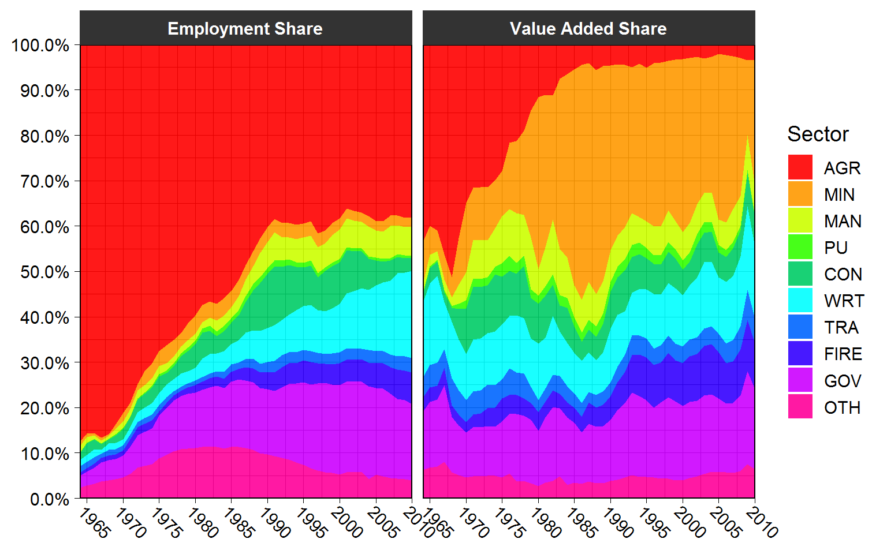
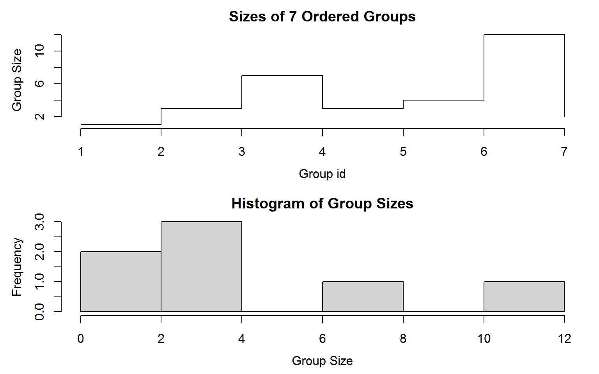
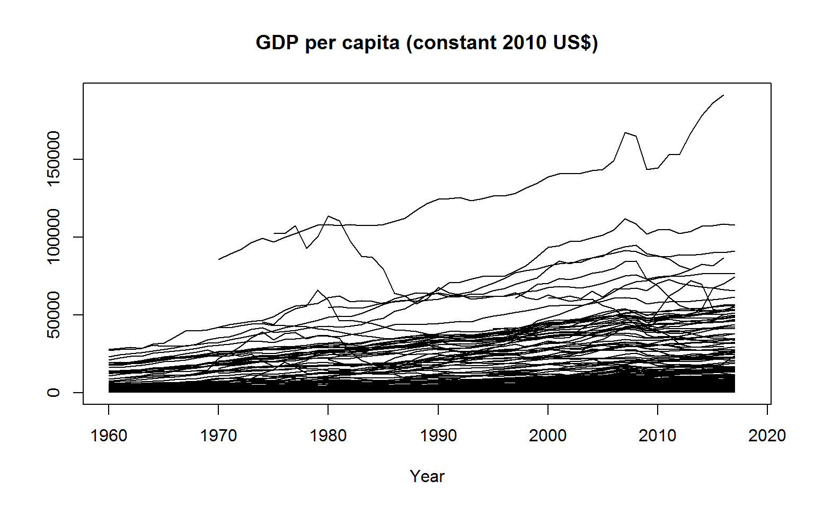
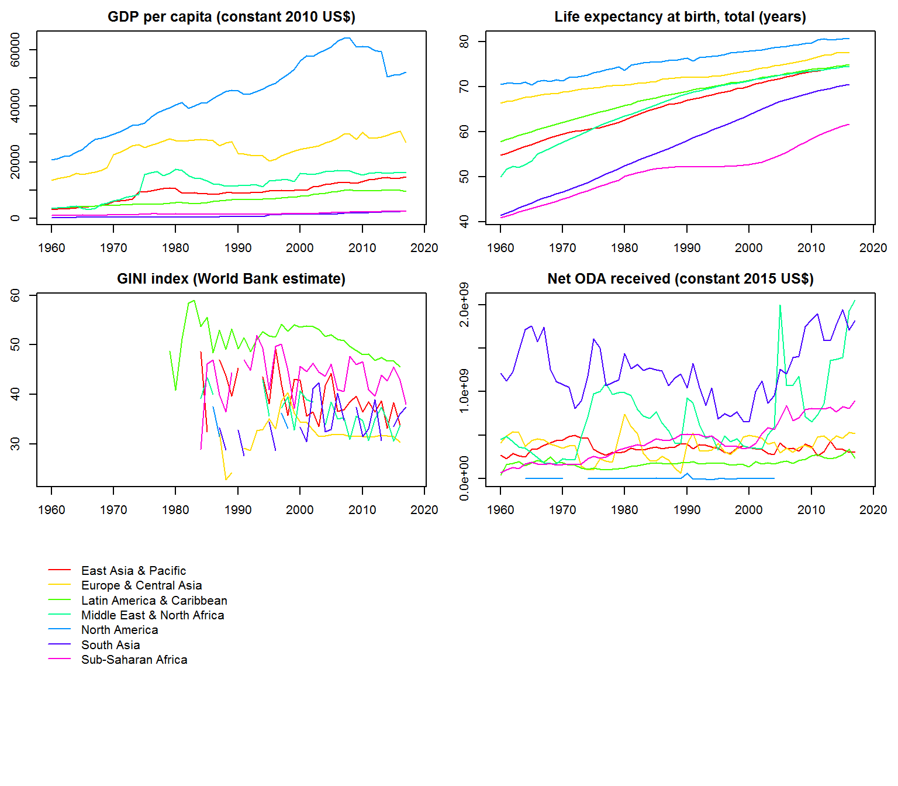
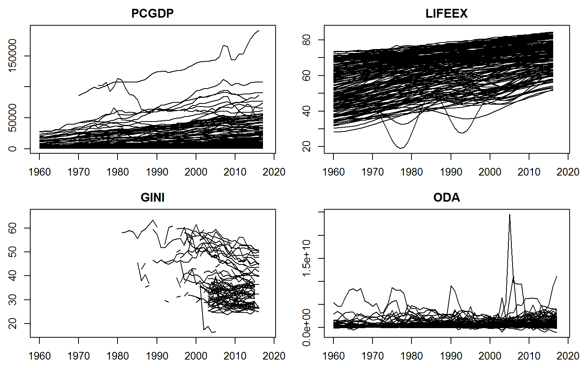
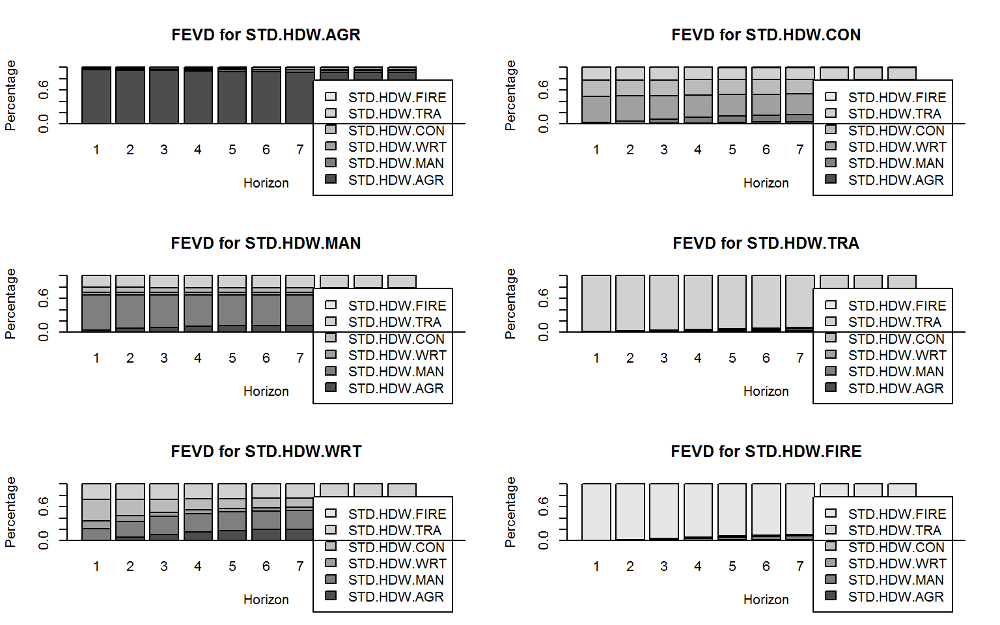
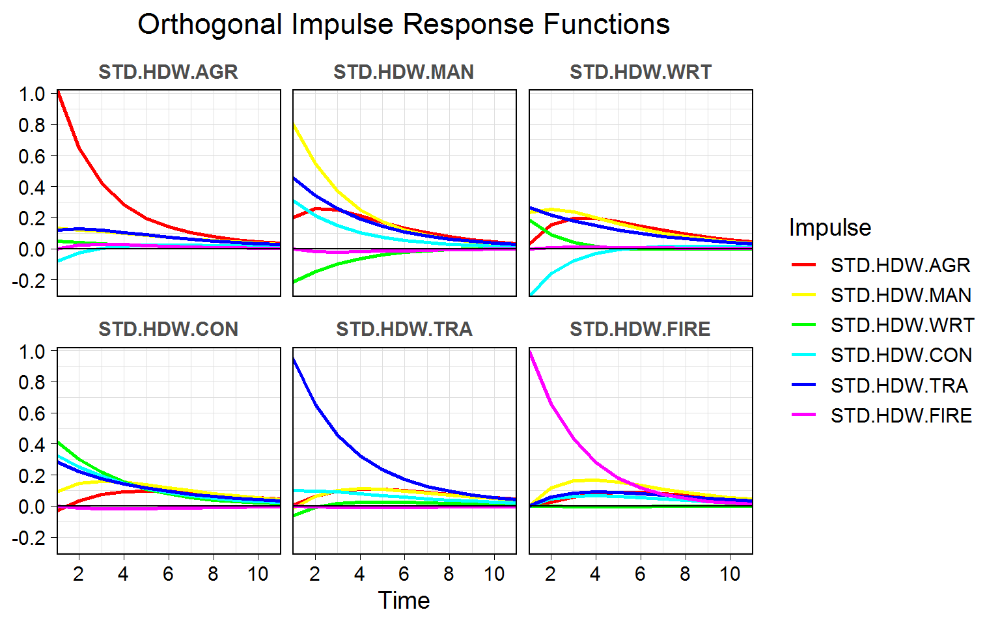

Introduction to collapse
Advanced and Fast Data Transformation in R
Sebastian Krantz
2020-06-08
Source:vignettes/collapse_intro.Rmd
collapse_intro.Rmdcollapse is a C/C++ based package for data manipulation in R. It’s aims are
to facilitate complex data transformation and exploration tasks and
to help make R code fast, flexible, parsimonious and programmer friendly.
This vignette demonstrates these two points and introduces all main features of the package in a structured way. The chapters are pretty self-contained, but structure is given with an overarching aim to teach the reader how to write fast R code for (advanced) data manipulation with collapse.
Notes:
Apart from this vignette, collapse comes with a built-in structured documentation available under
help("collapse-documentation")after installing the package, andhelp("collapse-package")provides a compact set of examples for quick-start. To learn collapse as quickly as possible it is possibly better to consult those resources than going through this document.The two other vignettes focus on the integration of collapse with dplyr workflows (highly recommended for dplyr / tidyverse users), and on the integration of collapse with the plm package (+ some advanced programming with panel-data).
Why learn collapse?
collapse is a high-performance package that extends and enhances the data-manipulation capabilities of R and existing popular packages (such as dplyr, data.table, and matrix packages). It’s main focus is on grouped and weighted statistical programming, complex aggregations and transformations, time-series and panel-data operations, and programming with lists. Key strengths are:
collapse provides an organized and comprehensive suite of advanced statistical operations such as grouped, weighted and groupwise weighted statistics, grouped sweeping of statistics, scaling, centering, higher-dimensional centering and linear prediction, panel-data methods and summary statistics, and various time-computations such as iterated-, panel-, quasi-, log- differences and growth rates.
collapse is extremely fast and micro-optimized. Many grouped and weighted computations are noticeably faster than doing them in dplyr or data.table. Furthermore the execution speed of collapse functions on small data is ~ 10-100 microseconds. This speed becomes noticeable when executing a page of code, writing a statistical program or the server code for a shiny app.
collapse is fully programmable in standard evaluation. It facilitates writing complex and performant code without the need of complex meta-programming. Core methods can be called directly and grouping time can be saved through creating grouping objects or grouped / panel data.frames. The result is that efficient collapse code is often not that far from a native C++ implementation.
collapse is broadly object oriented and not centered around data.frames. It supports all R data structures, in particular vectors / various time-series / panel-series, matrices, data.frames / grouped data.frames (
dplyr::grouped_df) / panel data.frames (plm::pdata.frame) and general lists of data objects.collapse is well documented and receives continued maintenance and support. Performance and functionality will increase over time. The API for core functionality such as the fast statistical functions and transformation operators is guaranteed to remain unaltered for some time to come.
1. Data and Summary Statistics
We begin by introducing some powerful summary tools along with the 2 panel-datasets collapse provides which are used throughout this vignette. If you are just interested in programming you can skip this section. Apart from the 2 datasets that come with collapse (wlddev and GGDC10S), this vignette uses a few well known datasets from base R: mtcars, iris, airquality, and the time-series Airpassengers and EuStockMarkets.
1.1 wlddev - World Bank Development Data
This dataset contains 4 key World Bank Development Indicators covering 216 countries over 59 years. It is a balanced panel with \(216 \times 59 = 12744\) observations.
library(collapse) head(wlddev) # country iso3c date year decade region income OECD PCGDP LIFEEX GINI ODA # 1 Afghanistan AFG 1961-01-01 1960 1960 South Asia Low income FALSE NA 32.292 NA 114440000 # 2 Afghanistan AFG 1962-01-01 1961 1960 South Asia Low income FALSE NA 32.742 NA 233350000 # 3 Afghanistan AFG 1963-01-01 1962 1960 South Asia Low income FALSE NA 33.185 NA 114880000 # 4 Afghanistan AFG 1964-01-01 1963 1960 South Asia Low income FALSE NA 33.624 NA 236450000 # 5 Afghanistan AFG 1965-01-01 1964 1960 South Asia Low income FALSE NA 34.060 NA 302480000 # 6 Afghanistan AFG 1966-01-01 1965 1960 South Asia Low income FALSE NA 34.495 NA 370250000 # The variables have "label" attributes. Use vlabels() to get and set labels namlab(wlddev, class = TRUE) # Variable Class Label # 1 country character Country Name # 2 iso3c factor Country Code # 3 date Date Date Recorded (Fictitious) # 4 year integer Year # 5 decade numeric Decade # 6 region factor Region # 7 income factor Income Level # 8 OECD logical Is OECD Member Country? # 9 PCGDP numeric GDP per capita (constant 2010 US$) # 10 LIFEEX numeric Life expectancy at birth, total (years) # 11 GINI numeric GINI index (World Bank estimate) # 12 ODA numeric Net ODA received (constant 2015 US$)
Of the categorical identifiers, the date variable was artificially generated to have an example dataset that contains all common data types frequently encountered in R. A detailed statistical description of this data is computed by descr:
# A detailed statistical description, executed at the same speed as summary(wlddev) descr(wlddev) # Dataset: wlddev, 12 Variables, N = 12744 # ----------------------------------------------------------------------------------------------------- # country (character): Country Name # Stats: # N Ndist # 12744 216 # Table: # Afghanistan Albania Algeria American Samoa Andorra Angola # Freq 59 59 59 59 59 59 # Perc 0.46 0.46 0.46 0.46 0.46 0.46 # --- # Venezuela, RB Vietnam Virgin Islands (U.S.) West Bank and Gaza Yemen, Rep. Zambia # Freq 59 59 59 59 59 59 # Perc 0.46 0.46 0.46 0.46 0.46 0.46 # Zimbabwe # Freq 59 # Perc 0.46 # # Summary of Table: # Min. 1st Qu. Median Mean 3rd Qu. Max. # 59 59 59 59 59 59 # ----------------------------------------------------------------------------------------------------- # iso3c (factor): Country Code # Stats: # N Ndist # 12744 216 # Table: # ABW AFG AGO ALB AND ARE # Freq 59 59 59 59 59 59 # Perc 0.46 0.46 0.46 0.46 0.46 0.46 # --- # VUT WSM XKX YEM ZAF ZMB ZWE # Freq 59 59 59 59 59 59 59 # Perc 0.46 0.46 0.46 0.46 0.46 0.46 0.46 # # Summary of Table: # Min. 1st Qu. Median Mean 3rd Qu. Max. # 59 59 59 59 59 59 # ----------------------------------------------------------------------------------------------------- # date (Date): Date Recorded (Fictitious) # Stats: # N Ndist # 12744 59 # ----------------------------------------------------------------------------------------------------- # year (integer): Year # Stats: # N Ndist Mean SD Min Max Skew Kurt # 12744 59 1989 17.03 1960 2018 -0 1.8 # Quant: # 1% 5% 25% 50% 75% 95% 99% # 1960 1962 1974 1989 2004 2016 2018 # ----------------------------------------------------------------------------------------------------- # decade (numeric): Decade # Stats: # N Ndist Mean SD Min Max Skew Kurt # 12744 7 1988.98 17.63 1960 2020 0.01 1.95 # Quant: # 1% 5% 25% 50% 75% 95% 99% # 1960 1960 1970 1990 2000 2020 2020 # ----------------------------------------------------------------------------------------------------- # region (factor): Region # Stats: # N Ndist # 12744 7 # Table: # East Asia & Pacific Europe & Central Asia Latin America & Caribbean # Freq 2124 3422 2478 # Perc 16.67 26.85 19.44 # Middle East & North Africa North America South Asia Sub-Saharan Africa # Freq 1239 177 472 2832 # Perc 9.72 1.39 3.7 22.22 # ----------------------------------------------------------------------------------------------------- # income (factor): Income Level # Stats: # N Ndist # 12744 4 # Table: # High income Low income Lower middle income Upper middle income # Freq 4720 1947 2773 3304 # Perc 37.04 15.28 21.76 25.93 # ----------------------------------------------------------------------------------------------------- # OECD (logical): Is OECD Member Country? # Stats: # N Ndist # 12744 2 # Table: # FALSE TRUE # Freq 1.062e+04 2124 # Perc 83.33 16.67 # ----------------------------------------------------------------------------------------------------- # PCGDP (numeric): GDP per capita (constant 2010 US$) # Stats: # N Ndist Mean SD Min Max Skew Kurt # 8995 8995 11563.65 18348.41 131.65 191586.64 3.11 16.96 # Quant: # 1% 5% 25% 50% 75% 95% 99% # 223.54 374.38 1215.59 3619.61 14084.71 46591.94 87780.62 # ----------------------------------------------------------------------------------------------------- # LIFEEX (numeric): Life expectancy at birth, total (years) # Stats: # N Ndist Mean SD Min Max Skew Kurt # 11068 10048 63.84 11.45 18.91 85.42 -0.67 2.65 # Quant: # 1% 5% 25% 50% 75% 95% 99% # 35.49 42.23 55.84 66.97 72.5 78.82 81.83 # ----------------------------------------------------------------------------------------------------- # GINI (numeric): GINI index (World Bank estimate) # Stats: # N Ndist Mean SD Min Max Skew Kurt # 1356 363 39.4 9.68 16.2 65.8 0.46 2.29 # Quant: # 1% 5% 25% 50% 75% 95% 99% # 24.66 26.5 31.7 37.4 46.8 57.2 60.84 # ----------------------------------------------------------------------------------------------------- # ODA (numeric): Net ODA received (constant 2015 US$) # Stats: # N Ndist Mean SD Min Max Skew Kurt # 8336 7564 428,746468 819,868971 -1.08038000e+09 2.45521800e+10 7.19 122.9 # Quant: # 1% 5% 25% 50% 75% 95% 99% # -11,731500 1,097500 41,020000 157,360000 463,057500 1.82400500e+09 3.48697750e+09 # -----------------------------------------------------------------------------------------------------
The output of descr can be converted into a tidy data.frame using:
head(as.data.frame(descr(wlddev))) # Variable Class Label N Ndist Mean SD Min Max # 1 country character Country Name 12744 216 NA NA NA NA # 2 iso3c factor Country Code 12744 216 NA NA NA NA # 3 date Date Date Recorded (Fictitious) 12744 59 NA NA NA NA # 4 year integer Year 12744 59 1989.000 17.03005 1960 2018 # 5 decade numeric Decade 12744 7 1988.983 17.63107 1960 2020 # 6 region factor Region 12744 7 NA NA NA NA # Skew Kurt 1% 5% 25% 50% 75% 95% 99% # 1 NA NA NA NA NA NA NA NA NA # 2 NA NA NA NA NA NA NA NA NA # 3 NA NA NA NA NA NA NA NA NA # 4 -6.402075e-16 1.799310 1960 1962 1974 1989 2004 2016 2018 # 5 6.221301e-03 1.946267 1960 1960 1970 1990 2000 2020 2020 # 6 NA NA NA NA NA NA NA NA NA
Note that descr does not require data to be labeled. Since wlddev is a panel-data set tracking countries over time, we might be interested in checking which variables are time-varying, with the function varying:
varying(wlddev, wlddev$iso3c) # country iso3c date year decade region income OECD PCGDP LIFEEX GINI ODA # FALSE FALSE TRUE TRUE TRUE FALSE FALSE FALSE TRUE TRUE TRUE TRUE
varying tells us that all 4 variables PCGDP, LIFEEX, GINI and ODA vary over time. However the OECD variable does not, so this data does not track when countries entered the OECD. We can also have a more detailed look letting varying check the variation in each country:
head(varying(wlddev, wlddev$iso3c, any_group = FALSE)) # country iso3c date year decade region income OECD PCGDP LIFEEX GINI ODA # ABW FALSE FALSE TRUE TRUE TRUE FALSE FALSE FALSE TRUE TRUE NA TRUE # AFG FALSE FALSE TRUE TRUE TRUE FALSE FALSE FALSE TRUE TRUE NA TRUE # AGO FALSE FALSE TRUE TRUE TRUE FALSE FALSE FALSE TRUE TRUE TRUE TRUE # ALB FALSE FALSE TRUE TRUE TRUE FALSE FALSE FALSE TRUE TRUE TRUE TRUE # AND FALSE FALSE TRUE TRUE TRUE FALSE FALSE FALSE TRUE NA NA NA # ARE FALSE FALSE TRUE TRUE TRUE FALSE FALSE FALSE TRUE TRUE NA TRUE
NA indicates that there are no data for this country. In general data is varying if it has two or more distinct non-missing values. We could also take a closer look at observation counts and distinct values using:
head(fNobs(wlddev, wlddev$iso3c)) # country iso3c date year decade region income OECD PCGDP LIFEEX GINI ODA # ABW 59 59 59 59 59 59 59 59 32 57 0 20 # AFG 59 59 59 59 59 59 59 59 16 57 0 58 # AGO 59 59 59 59 59 59 59 59 38 57 2 56 # ALB 59 59 59 59 59 59 59 59 38 57 5 30 # AND 59 59 59 59 59 59 59 59 48 0 0 0 # ARE 59 59 59 59 59 59 59 59 43 57 0 45 head(fNdistinct(wlddev, wlddev$iso3c)) # country iso3c date year decade region income OECD PCGDP LIFEEX GINI ODA # ABW 1 1 59 59 7 1 1 1 32 57 0 20 # AFG 1 1 59 59 7 1 1 1 16 57 0 58 # AGO 1 1 59 59 7 1 1 1 38 57 2 55 # ALB 1 1 59 59 7 1 1 1 38 56 5 30 # AND 1 1 59 59 7 1 1 1 48 0 0 0 # ARE 1 1 59 59 7 1 1 1 43 57 0 43
Note that varying is more efficient than fNdistinct, although both functions are very fast. Even more powerful summary methods for multilevel / panel data are provided by qsu (shorthand for quick-summary). It is modelled after STATA’s summarize and xtsummarize commands. Calling qsu on the data gives a concise summary. We can subset columns internally using the cols argument:
qsu(wlddev, cols = 9:12, higher = TRUE) # higher adds skewness and kurtosis # N Mean SD Min Max Skew Kurt # PCGDP 8995 11563.65 18348.41 131.65 191586.64 3.11 16.96 # LIFEEX 11068 63.84 11.45 18.91 85.42 -0.67 2.65 # GINI 1356 39.4 9.68 16.2 65.8 0.46 2.29 # ODA 8336 428,746468 819,868971 -1.08038000e+09 2.45521800e+10 7.19 122.9
We could easily compute these statistics by region:
qsu(wlddev, by = ~region, cols = 9:12, vlabels = TRUE, higher = TRUE) # , , PCGDP: GDP per capita (constant 2010 US$) # # N Mean SD Min Max Skew Kurt # East Asia & Pacific 1391 10337.05 14094.83 131.96 72183.3 1.64 4.75 # Europe & Central Asia 2084 25664.81 26181.67 367.05 191586.64 2.1 9.28 # Latin America & Caribbean 1896 6976.06 6705.54 662.28 42491.45 2.14 7.92 # Middle East & North Africa 805 13760.28 18374.22 570.56 113682.04 2.42 9.67 # North America 170 43650.52 18345.04 17550.57 94903.19 0.9 3.35 # South Asia 366 1178.34 1581.27 267.07 8971.13 3.01 11.9 # Sub-Saharan Africa 2283 1750.01 2553.79 131.65 20333.94 3.21 15.15 # # , , LIFEEX: Life expectancy at birth, total (years) # # N Mean SD Min Max Skew Kurt # East Asia & Pacific 1717 65.65 10.12 18.91 84.28 -0.85 4.26 # Europe & Central Asia 2886 71.93 5.46 45.37 85.42 -0.48 3.93 # Latin America & Caribbean 1995 67.75 7.28 42.11 82.19 -0.97 3.78 # Middle East & North Africa 1163 65.75 9.52 34.36 82.41 -0.76 2.84 # North America 135 75.99 3.48 68.9 82.3 -0.14 1.98 # South Asia 456 56.75 11.11 32.29 77.34 -0.27 2.11 # Sub-Saharan Africa 2716 51 8.59 27.61 74.39 0.15 2.81 # # , , GINI: GINI index (World Bank estimate) # # N Mean SD Min Max Skew Kurt # East Asia & Pacific 92 38.51 5.37 27.8 55.4 0.49 2.85 # Europe & Central Asia 588 31.9 4.74 16.2 48.4 0.25 3.07 # Latin America & Caribbean 363 50.57 5.32 34.4 63.3 -0.09 2.45 # Middle East & North Africa 76 36.19 5.12 27.6 47.4 0.11 1.97 # North America 22 36.16 3.93 31 41.1 0.15 1.33 # South Asia 39 34.16 4.34 25.9 43.8 0.29 2.41 # Sub-Saharan Africa 176 44.82 8.34 28.9 65.8 0.63 2.83 # # , , ODA: Net ODA received (constant 2015 US$) # # N Mean SD Min Max # East Asia & Pacific 1491 346,977686 615,361973 -1.08038000e+09 3.92003000e+09 # Europe & Central Asia 751 394,089867 566,834650 -343,480000 4.64666000e+09 # Latin America & Caribbean 1918 173,728368 259,343122 -512,730000 2.95163000e+09 # Middle East & North Africa 1079 663,574245 1.40635884e+09 -169,710000 2.45521800e+10 # North America 39 423846.15 9,678883.86 -14,520000 55,820000 # South Asia 450 1.25150376e+09 1.56736667e+09 80000 8.53900000e+09 # Sub-Saharan Africa 2608 440,308474 596,033604 -16,780000 1.12780600e+10 # Skew Kurt # East Asia & Pacific 2.71 11.3 # Europe & Central Asia 3.17 15.59 # Latin America & Caribbean 3.19 20.41 # Middle East & North Africa 7.18 91.71 # North America 4.84 29.19 # South Asia 1.81 6.69 # Sub-Saharan Africa 4.9 57.62
Computing summary statistics by country is of course also possible but would be an information overkill. Fortunately qsu lets us do something much more powerful:
qsu(wlddev, pid = ~ iso3c, cols = c(1,4,9:12), vlabels = TRUE, higher = TRUE) # , , country: Country Name # # N/T Mean SD Min Max Skew Kurt # Overall 12744 - - - - - - # Between 216 - - - - - - # Within 59 - - - - - - # # , , year: Year # # N/T Mean SD Min Max Skew Kurt # Overall 12744 1989 17.03 1960 2018 -0 1.8 # Between 216 1989 0 1989 1989 - - # Within 59 1989 17.03 1960 2018 -0 1.8 # # , , PCGDP: GDP per capita (constant 2010 US$) # # N/T Mean SD Min Max Skew Kurt # Overall 8995 11563.65 18348.41 131.65 191586.64 3.11 16.96 # Between 203 12488.86 19628.37 255.4 141165.08 3.21 17.25 # Within 44.31 11563.65 6334.95 -30529.09 75348.07 0.7 17.05 # # , , LIFEEX: Life expectancy at birth, total (years) # # N/T Mean SD Min Max Skew Kurt # Overall 11068 63.84 11.45 18.91 85.42 -0.67 2.65 # Between 207 64.53 10.02 39.35 85.42 -0.53 2.23 # Within 53.47 63.84 5.83 33.47 83.86 -0.25 3.75 # # , , GINI: GINI index (World Bank estimate) # # N/T Mean SD Min Max Skew Kurt # Overall 1356 39.4 9.68 16.2 65.8 0.46 2.29 # Between 161 39.58 8.37 23.37 61.71 0.52 2.67 # Within 8.42 39.4 3.04 23.96 54.8 0.14 5.78 # # , , ODA: Net ODA received (constant 2015 US$) # # N/T Mean SD Min Max Skew Kurt # Overall 8336 428,746468 819,868971 -1.08038000e+09 2.45521800e+10 7.19 122.9 # Between 178 418,026522 548,293709 423846.15 3.53258914e+09 2.47 10.65 # Within 46.83 428,746468 607,024040 -2.47969577e+09 2.35093916e+10 10.3 298.12
The above output reports 3 sets of summary statistics for each variable: Statistics computed on the Overall (raw) data, and on the Between-country (i.e. country averaged) and Within-country (i.e. country-demeaned) data1. This is a powerful way to summarize panel data because aggregating the data by country gives us a cross-section of countries with no variation over time, whereas subtracting country specific means from the data eliminates the variation between countries. Thus we summarize the variation in our panel in 3 different ways: First we consider the raw data, then we create a cross-section of countries and summarize that, and then we sweep that cross-section out of the raw data and pretend we have a time-series.
So what can these statistics tell us about our data? The N/T columns shows that for PCGDP we have 8995 total observations, that we observe GDP data for 203 countries and that we have on average 44.3 observations (time-periods) per country. In contrast the GINI Index is only available for 161 countries with 8.4 observations on average. The Overall and Within mean of the data are identical by definition, and the Between mean would also be the same in a balanced panel with no missing observations. In practice we have unequal amounts of observations for different countries, thus countries have different weights in the Overall mean and the difference between Overall and Between-country mean reflects this discrepancy. The most interesting statistic in this summary arguably is the standard deviation, and in particular the comparison of the Between-SD reflecting the variation between countries and the Within-SD reflecting average variation over time. This comparison shows that PCGDP, LIFEEX and GINI vary more between countries, but ODA received varies more within countries over time. The 0 Between-SD for the year variable and the fact that the Overall and Within-SD are equal shows that year is individual invariant. Thus qsu also provides the same information as varying, but with additional details on the relative magnitudes of cross-sectional and time-series variation. It is also a common pattern that the kurtosis increases in within-transformed data, while the skewness decreases in most cases.
This is not yet the end of qsu’s capabilities. We could also do all of that by regions to have a look at the between and within country variations inside and across different World regions:
qsu(wlddev, by = ~ region, pid = ~ iso3c, cols = 9:12, vlabels = TRUE, higher = TRUE) # , , Overall, PCGDP: GDP per capita (constant 2010 US$) # # N/T Mean SD Min Max Skew Kurt # East Asia & Pacific 1391 10337.05 14094.83 131.96 72183.3 1.64 4.75 # Europe & Central Asia 2084 25664.81 26181.67 367.05 191586.64 2.1 9.28 # Latin America & Caribbean 1896 6976.06 6705.54 662.28 42491.45 2.14 7.92 # Middle East & North Africa 805 13760.28 18374.22 570.56 113682.04 2.42 9.67 # North America 170 43650.52 18345.04 17550.57 94903.19 0.9 3.35 # South Asia 366 1178.34 1581.27 267.07 8971.13 3.01 11.9 # Sub-Saharan Africa 2283 1750.01 2553.79 131.65 20333.94 3.21 15.15 # # , , Between, PCGDP: GDP per capita (constant 2010 US$) # # N/T Mean SD Min Max Skew Kurt # East Asia & Pacific 34 10337.05 12576.62 410.2 40046.41 1.17 2.79 # Europe & Central Asia 56 25664.81 24008.1 788.02 141165.08 1.93 8.49 # Latin America & Caribbean 36 6976.06 6294.85 884.55 36049.69 2.15 7.97 # Middle East & North Africa 20 13760.28 17291.05 1084.6 65963.27 1.99 6.28 # North America 3 43650.52 12062.99 35346.42 61278.24 0.78 1.61 # South Asia 8 1178.34 1470.7 397.45 6638.35 3.18 12.03 # Sub-Saharan Africa 46 1750.01 2199.99 255.4 9916.66 2.22 7.25 # # , , Within, PCGDP: GDP per capita (constant 2010 US$) # # N/T Mean SD Min Max Skew Kurt # East Asia & Pacific 40.91 11563.65 6363.41 -11892.07 50475.99 0.91 9.37 # Europe & Central Asia 37.21 11563.65 10444.66 -30529.09 75348.07 0.39 7.3 # Latin America & Caribbean 52.67 11563.65 2310.66 -519.17 21734.04 0.06 7.8 # Middle East & North Africa 40.25 11563.65 6215.44 -18492.15 60152 1.76 22.42 # North America 56.67 11563.65 13821.17 -21876.2 45188.6 -0.03 2.81 # South Asia 45.75 11563.65 580.89 9525.97 13896.43 1.02 6.38 # Sub-Saharan Africa 49.63 11563.65 1296.87 4528.64 24375.59 1.54 29.8 # # , , Overall, LIFEEX: Life expectancy at birth, total (years) # # N/T Mean SD Min Max Skew Kurt # East Asia & Pacific 1717 65.65 10.12 18.91 84.28 -0.85 4.26 # Europe & Central Asia 2886 71.93 5.46 45.37 85.42 -0.48 3.93 # Latin America & Caribbean 1995 67.75 7.28 42.11 82.19 -0.97 3.78 # Middle East & North Africa 1163 65.75 9.52 34.36 82.41 -0.76 2.84 # North America 135 75.99 3.48 68.9 82.3 -0.14 1.98 # South Asia 456 56.75 11.11 32.29 77.34 -0.27 2.11 # Sub-Saharan Africa 2716 51 8.59 27.61 74.39 0.15 2.81 # # , , Between, LIFEEX: Life expectancy at birth, total (years) # # N/T Mean SD Min Max Skew Kurt # East Asia & Pacific 32 65.65 7.71 48.86 77.57 -0.39 2.49 # Europe & Central Asia 55 71.93 4.25 61.94 85.42 -0.53 2.54 # Latin America & Caribbean 40 67.75 4.97 53.5 82.19 -0.96 4.07 # Middle East & North Africa 21 65.75 5.87 53.02 76.4 -0.23 2.83 # North America 3 75.99 1.27 74.61 77.96 0.09 1.55 # South Asia 8 56.75 5.8 47.88 68.67 0.55 3.01 # Sub-Saharan Africa 48 51 5.94 39.35 71.4 1.02 4.58 # # , , Within, LIFEEX: Life expectancy at birth, total (years) # # N/T Mean SD Min Max Skew Kurt # East Asia & Pacific 53.66 63.84 6.55 33.47 83.86 -0.35 3.91 # Europe & Central Asia 52.47 63.84 3.42 46.69 77.07 -0.09 3.89 # Latin America & Caribbean 49.88 63.84 5.32 47.13 78.26 -0.34 2.96 # Middle East & North Africa 55.38 63.84 7.5 41.84 78.47 -0.59 2.72 # North America 45 63.84 3.24 54.78 69.48 -0.36 2.25 # South Asia 57 63.84 9.47 42.01 82.03 -0.04 2.14 # Sub-Saharan Africa 56.58 63.84 6.2 43.74 83.26 0.06 2.85 # # , , Overall, GINI: GINI index (World Bank estimate) # # N/T Mean SD Min Max Skew Kurt # East Asia & Pacific 92 38.51 5.37 27.8 55.4 0.49 2.85 # Europe & Central Asia 588 31.9 4.74 16.2 48.4 0.25 3.07 # Latin America & Caribbean 363 50.57 5.32 34.4 63.3 -0.09 2.45 # Middle East & North Africa 76 36.19 5.12 27.6 47.4 0.11 1.97 # North America 22 36.16 3.93 31 41.1 0.15 1.33 # South Asia 39 34.16 4.34 25.9 43.8 0.29 2.41 # Sub-Saharan Africa 176 44.82 8.34 28.9 65.8 0.63 2.83 # # , , Between, GINI: GINI index (World Bank estimate) # # N/T Mean SD Min Max Skew Kurt # East Asia & Pacific 21 38.51 4.84 30.8 48.65 0.19 1.93 # Europe & Central Asia 47 31.9 4.05 23.37 40.8 0.39 2.54 # Latin America & Caribbean 25 50.57 4.02 41.1 57.73 -0.04 2.26 # Middle East & North Africa 14 36.19 4.63 29.05 43.07 -0.13 1.8 # North America 2 36.16 3.57 32.67 39.65 -0 1 # South Asia 7 34.16 3.46 30.36 39.85 0.25 1.36 # Sub-Saharan Africa 45 44.82 7.07 31.45 61.71 0.89 3.16 # # , , Within, GINI: GINI index (World Bank estimate) # # N/T Mean SD Min Max Skew Kurt # East Asia & Pacific 4.38 39.4 2.33 32.65 46.15 0.03 4.25 # Europe & Central Asia 12.51 39.4 2.45 28.64 54.5 0.8 9.73 # Latin America & Caribbean 14.52 39.4 3.49 26.31 48.74 -0.21 3.04 # Middle East & North Africa 5.43 39.4 2.19 32.63 46.64 0.04 5.26 # North America 11 39.4 1.63 34.34 40.84 -1.47 5.08 # South Asia 5.57 39.4 2.63 34.67 45.93 0 2.6 # Sub-Saharan Africa 3.91 39.4 4.41 23.96 54.8 0.12 4.15 # # , , Overall, ODA: Net ODA received (constant 2015 US$) # # N/T Mean SD Min Max # East Asia & Pacific 1491 346,977686 615,361973 -1.08038000e+09 3.92003000e+09 # Europe & Central Asia 751 394,089867 566,834650 -343,480000 4.64666000e+09 # Latin America & Caribbean 1918 173,728368 259,343122 -512,730000 2.95163000e+09 # Middle East & North Africa 1079 663,574245 1.40635884e+09 -169,710000 2.45521800e+10 # North America 39 423846.15 9,678883.86 -14,520000 55,820000 # South Asia 450 1.25150376e+09 1.56736667e+09 80000 8.53900000e+09 # Sub-Saharan Africa 2608 440,308474 596,033604 -16,780000 1.12780600e+10 # Skew Kurt # East Asia & Pacific 2.71 11.3 # Europe & Central Asia 3.17 15.59 # Latin America & Caribbean 3.19 20.41 # Middle East & North Africa 7.18 91.71 # North America 4.84 29.19 # South Asia 1.81 6.69 # Sub-Saharan Africa 4.9 57.62 # # , , Between, ODA: Net ODA received (constant 2015 US$) # # N/T Mean SD Min Max Skew # East Asia & Pacific 31 346,977686 460,186340 1,550512.82 1.64164241e+09 1.84 # Europe & Central Asia 32 394,089867 446,099453 12,115777.8 2.16970133e+09 2.28 # Latin America & Caribbean 37 173,728368 169,248215 2,089677.42 560,007241 0.92 # Middle East & North Africa 21 663,574245 725,711345 2,946923.08 2.73873224e+09 1.28 # North America 1 423846.15 0 423846.15 423846.15 - # South Asia 8 1.25150376e+09 1.15946284e+09 25,663448.3 3.53258914e+09 0.71 # Sub-Saharan Africa 48 440,308474 357,457530 27,340689.7 1.41753857e+09 0.97 # Kurt # East Asia & Pacific 5.32 # Europe & Central Asia 8.55 # Latin America & Caribbean 2.56 # Middle East & North Africa 4.1 # North America - # South Asia 2.34 # Sub-Saharan Africa 3.1 # # , , Within, ODA: Net ODA received (constant 2015 US$) # # N/T Mean SD Min Max Skew # East Asia & Pacific 48.1 428,746468 408,532605 -2.18778866e+09 3.57867647e+09 0.15 # Europe & Central Asia 23.47 428,746468 349,709591 -1.14106420e+09 3.01475819e+09 2.16 # Latin America & Caribbean 51.84 428,746468 196,504190 -579,470773 2.97543078e+09 3.44 # Middle East & North Africa 51.38 428,746468 1.20465275e+09 -2.47969577e+09 2.35093916e+10 8.67 # North America 39 428,746468 9,678883.86 413,802622 484,142622 4.84 # South Asia 56.25 428,746468 1.05464885e+09 -2.37972267e+09 5.51177302e+09 2.01 # Sub-Saharan Africa 54.33 428,746468 476,948814 -825,184566 1.07855444e+10 5.93 # Kurt # East Asia & Pacific 14.92 # Europe & Central Asia 17.78 # Latin America & Caribbean 37.8 # Middle East & North Africa 139.56 # North America 29.19 # South Asia 10.55 # Sub-Saharan Africa 104.12
Notice that the output here is a 4D array of summary statistics, which we could also subset ([) or permute (aperm) to view these statistics in any convenient way. If we don’t like the array, we can also output as a nested list of statistics matrices:
l <- qsu(wlddev, by = ~ region, pid = ~ iso3c, cols = 9:12, vlabels = TRUE, higher = TRUE, array = FALSE) str(l, give.attr = FALSE) # List of 4 # $ PCGDP: GDP per capita (constant 2010 US$) :List of 3 # ..$ Overall: 'qsu' num [1:7, 1:7] 1391 2084 1896 805 170 ... # ..$ Between: 'qsu' num [1:7, 1:7] 34 56 36 20 3 ... # ..$ Within : 'qsu' num [1:7, 1:7] 40.9 37.2 52.7 40.2 56.7 ... # $ LIFEEX: Life expectancy at birth, total (years):List of 3 # ..$ Overall: 'qsu' num [1:7, 1:7] 1717 2886 1995 1163 135 ... # ..$ Between: 'qsu' num [1:7, 1:7] 32 55 40 21 3 ... # ..$ Within : 'qsu' num [1:7, 1:7] 53.7 52.5 49.9 55.4 45 ... # $ GINI: GINI index (World Bank estimate) :List of 3 # ..$ Overall: 'qsu' num [1:7, 1:7] 92 588 363 76 22 ... # ..$ Between: 'qsu' num [1:7, 1:7] 21 47 25 14 2 ... # ..$ Within : 'qsu' num [1:7, 1:7] 4.38 12.51 14.52 5.43 11 ... # $ ODA: Net ODA received (constant 2015 US$) :List of 3 # ..$ Overall: 'qsu' num [1:7, 1:7] 1491 751 1918 1079 39 ... # ..$ Between: 'qsu' num [1:7, 1:7] 31 32 37 21 1 ... # ..$ Within : 'qsu' num [1:7, 1:7] 48.1 23.5 51.8 51.4 39 ...
Such a list of statistics matrices could, for example, be converted into a tidy data.frame using unlist2d (more about this in the section on list-processing):
head(unlist2d(l, idcols = c("Variable", "Trans"), row.names = "Region")) # Variable Trans Region N Mean # 1 PCGDP: GDP per capita (constant 2010 US$) Overall East Asia & Pacific 1391 10337.046 # 2 PCGDP: GDP per capita (constant 2010 US$) Overall Europe & Central Asia 2084 25664.806 # 3 PCGDP: GDP per capita (constant 2010 US$) Overall Latin America & Caribbean 1896 6976.065 # 4 PCGDP: GDP per capita (constant 2010 US$) Overall Middle East & North Africa 805 13760.276 # 5 PCGDP: GDP per capita (constant 2010 US$) Overall North America 170 43650.519 # 6 PCGDP: GDP per capita (constant 2010 US$) Overall South Asia 366 1178.345 # SD Min Max Skew Kurt # 1 14094.834 131.9634 72183.303 1.6377612 4.754406 # 2 26181.671 367.0493 191586.640 2.0987365 9.279446 # 3 6705.538 662.2795 42491.454 2.1357240 7.917158 # 4 18374.221 570.5574 113682.038 2.4214546 9.666703 # 5 18345.042 17550.5732 94903.192 0.9047195 3.350085 # 6 1581.268 267.0736 8971.128 3.0144216 11.898500
This is still not the end of qsu’s functionality, as we can also do all of the above on complex panel-surveys utilizing weights, see ?qsu for the details of that.
Finally, we can look at pairwise correlations in this data:
pwcor(wlddev[9:12], N = TRUE, P = TRUE) # PCGDP LIFEEX GINI ODA # PCGDP 1 (8995) .57* (8398) -.42* (1342) -.16* (6852) # LIFEEX .57* (8398) 1 (11068) -.34* (1353) -.02* (7746) # GINI -.42* (1342) -.34* (1353) 1 (1356) -.17* (951) # ODA -.16* (6852) -.02* (7746) -.17* (951) 1 (8336)
which can of course also be computed on averaged and within-transformed data:
print(pwcor(fmean(wlddev[9:12], wlddev$iso3c), N = TRUE, P = TRUE), show = "lower.tri") # PCGDP LIFEEX GINI ODA # PCGDP 1 (203) # LIFEEX .60* (197) 1 (207) # GINI -.41* (159) -.41* (160) 1 (161) # ODA -.24* (169) -.18* (172) -.17 (139) 1 (178) # N is same as overall N shown above... print(pwcor(fwithin(wlddev[9:12], wlddev$iso3c), P = TRUE), show = "lower.tri") # PCGDP LIFEEX GINI ODA # PCGDP 1 # LIFEEX .30* 1 # GINI -.03 -.15* 1 # ODA -.01 .14* -.02 1
A useful function called by pwcor is pwNobs, which is also very handy to explore the joint observation structure when selecting variables to include in a statistical model:
pwNobs(wlddev) # country iso3c date year decade region income OECD PCGDP LIFEEX GINI ODA # country 12744 12744 12744 12744 12744 12744 12744 12744 8995 11068 1356 8336 # iso3c 12744 12744 12744 12744 12744 12744 12744 12744 8995 11068 1356 8336 # date 12744 12744 12744 12744 12744 12744 12744 12744 8995 11068 1356 8336 # year 12744 12744 12744 12744 12744 12744 12744 12744 8995 11068 1356 8336 # decade 12744 12744 12744 12744 12744 12744 12744 12744 8995 11068 1356 8336 # region 12744 12744 12744 12744 12744 12744 12744 12744 8995 11068 1356 8336 # income 12744 12744 12744 12744 12744 12744 12744 12744 8995 11068 1356 8336 # OECD 12744 12744 12744 12744 12744 12744 12744 12744 8995 11068 1356 8336 # PCGDP 8995 8995 8995 8995 8995 8995 8995 8995 8995 8398 1342 6852 # LIFEEX 11068 11068 11068 11068 11068 11068 11068 11068 8398 11068 1353 7746 # GINI 1356 1356 1356 1356 1356 1356 1356 1356 1342 1353 1356 951 # ODA 8336 8336 8336 8336 8336 8336 8336 8336 6852 7746 951 8336
1.2 GGDC10S - GGDC 10-Sector Database
The Groningen Growth and Development Centre 10-Sector Database provides long-run data on sectoral productivity performance in Africa, Asia, and Latin America. Variables covered in the data set are annual series of value added (VA, in local currency), and persons employed (EMP) for 10 broad sectors.
head(GGDC10S) # Country Regioncode Region Variable Year AGR MIN MAN PU # 1 BWA SSA Sub-saharan Africa VA 1960 NA NA NA NA # 2 BWA SSA Sub-saharan Africa VA 1961 NA NA NA NA # 3 BWA SSA Sub-saharan Africa VA 1962 NA NA NA NA # 4 BWA SSA Sub-saharan Africa VA 1963 NA NA NA NA # 5 BWA SSA Sub-saharan Africa VA 1964 16.30154 3.494075 0.7365696 0.1043936 # 6 BWA SSA Sub-saharan Africa VA 1965 15.72700 2.495768 1.0181992 0.1350976 # CON WRT TRA FIRE GOV OTH SUM # 1 NA NA NA NA NA NA NA # 2 NA NA NA NA NA NA NA # 3 NA NA NA NA NA NA NA # 4 NA NA NA NA NA NA NA # 5 0.6600454 6.243732 1.658928 1.119194 4.822485 2.341328 37.48229 # 6 1.3462312 7.064825 1.939007 1.246789 5.695848 2.678338 39.34710 namlab(GGDC10S, class = TRUE) # Variable Class Label # 1 Country character Country # 2 Regioncode character Region code # 3 Region character Region # 4 Variable character Variable # 5 Year numeric Year # 6 AGR numeric Agriculture # 7 MIN numeric Mining # 8 MAN numeric Manufacturing # 9 PU numeric Utilities # 10 CON numeric Construction # 11 WRT numeric Trade, restaurants and hotels # 12 TRA numeric Transport, storage and communication # 13 FIRE numeric Finance, insurance, real estate and business services # 14 GOV numeric Government services # 15 OTH numeric Community, social and personal services # 16 SUM numeric Summation of sector GDP fNobs(GGDC10S) # Country Regioncode Region Variable Year AGR MIN MAN PU # 5027 5027 5027 5027 5027 4364 4355 4355 4354 # CON WRT TRA FIRE GOV OTH SUM # 4355 4355 4355 4355 3482 4248 4364 fNdistinct(GGDC10S) # Country Regioncode Region Variable Year AGR MIN MAN PU # 43 6 6 2 67 4353 4224 4353 4237 # CON WRT TRA FIRE GOV OTH SUM # 4339 4344 4334 4349 3470 4238 4364 # The countries included: cat(funique(GGDC10S$Country, ordered = TRUE)) # ARG BOL BRA BWA CHL CHN COL CRI DEW DNK EGY ESP ETH FRA GBR GHA HKG IDN IND ITA JPN KEN KOR MEX MOR MUS MWI MYS NGA NGA(alt) NLD PER PHL SEN SGP SWE THA TWN TZA USA VEN ZAF ZMB
The first problem in summarizing this data is that value added (VA) is in local currency, the second that it contains 2 different Variables (VA and EMP) stacked in the same column. One way of solving the first problem could be converting the data to percentages through dividing by the overall VA and EMP contained in the last column. A different solution involving grouped-scaling is introduced in section 6.4. The second problem is again nicely handled by qsu, which can also compute panel-statistics by groups.
# Converting data to percentages of overall VA / EMP, dapply keeps the attributes, see section 6.1 pGGDC10S <- dapply(GGDC10S[6:15], `*`, 100 / GGDC10S$SUM) # Summarizing the sectoral data by variable, overall, between and within countries su <- qsu(pGGDC10S, by = GGDC10S$Variable, pid = GGDC10S[c("Variable","Country")], higher = TRUE) # This gives a 4D array of summary statistics str(su) # 'qsu' num [1:2, 1:7, 1:3, 1:10] 2225 2139 35.1 17.3 26.7 ... # - attr(*, "dimnames")=List of 4 # ..$ : chr [1:2] "EMP" "VA" # ..$ : chr [1:7] "N/T" "Mean" "SD" "Min" ... # ..$ : chr [1:3] "Overall" "Between" "Within" # ..$ : chr [1:10] "AGR" "MIN" "MAN" "PU" ... # Permuting this array to a more readible format aperm(su, c(4,2,3,1)) # , , Overall, EMP # # N/T Mean SD Min Max Skew Kurt # AGR 2225 35.09 26.72 0.16 100 0.49 2.1 # MIN 2216 1.03 1.42 0 9.41 3.13 15.04 # MAN 2216 14.98 8.04 0.58 45.3 0.43 2.85 # PU 2215 0.58 0.36 0.02 2.48 1.26 5.58 # CON 2216 5.66 2.93 0.14 15.99 -0.06 2.27 # WRT 2216 14.92 6.56 0.81 32.8 -0.18 2.32 # TRA 2216 4.82 2.65 0.15 15.05 0.95 4.47 # FIRE 2216 4.65 4.35 0.08 21.77 1.23 4.08 # GOV 1780 13.13 8.08 0 34.89 0.63 2.53 # OTH 2109 8.4 6.64 0.42 34.89 1.4 4.32 # # , , Between, EMP # # N/T Mean SD Min Max Skew Kurt # AGR 42 35.09 24.12 1 88.33 0.52 2.24 # MIN 42 1.03 1.23 0.03 6.85 2.73 12.33 # MAN 42 14.98 7.04 1.72 32.34 -0.02 2.43 # PU 42 0.58 0.3 0.07 1.32 0.55 2.69 # CON 42 5.66 2.47 0.5 10.37 -0.44 2.33 # WRT 42 14.92 5.26 4 26.77 -0.55 2.73 # TRA 42 4.82 2.47 0.37 12.39 0.98 4.79 # FIRE 42 4.65 3.45 0.15 12.44 0.61 2.59 # GOV 34 13.13 7.28 2.01 29.16 0.39 2.11 # OTH 40 8.4 6.27 1.35 26.4 1.43 4.32 # # , , Within, EMP # # N/T Mean SD Min Max Skew Kurt # AGR 52.98 26.38 11.5 -5.32 107.49 1.6 11.97 # MIN 52.76 3.4 0.72 -1.41 7.51 -0.2 15.03 # MAN 52.76 17.48 3.89 -1.11 40.4 -0.08 7.4 # PU 52.74 1.39 0.19 0.63 2.55 0.57 7.85 # CON 52.76 5.76 1.56 0.9 12.97 0.31 4.12 # WRT 52.76 15.76 3.91 3.74 29.76 0.33 3.34 # TRA 52.76 6.35 0.96 2.35 11.11 0.27 5.72 # FIRE 52.76 5.82 2.66 -2.98 16 0.55 4.03 # GOV 52.35 13.26 3.51 -2.2 23.61 -0.56 4.73 # OTH 52.73 7.39 2.2 -2.33 17.44 0.29 6.46 # # , , Overall, VA # # N/T Mean SD Min Max Skew Kurt # AGR 2139 17.31 15.51 0.03 95.22 1.33 4.88 # MIN 2139 5.85 9.1 0 59.06 2.72 10.92 # MAN 2139 20.07 8 0.98 41.63 -0.03 2.68 # PU 2139 2.23 1.11 0 9.19 0.89 6.24 # CON 2139 5.87 2.51 0.6 25.86 1.5 8.96 # WRT 2139 16.63 5.14 4.52 39.76 0.35 3.27 # TRA 2139 7.93 3.11 0.8 25.96 1.01 5.71 # FIRE 2139 7.04 12.71 -151.07 39.17 -6.23 59.87 # GOV 1702 13.41 6.35 0.76 32.51 0.49 2.9 # OTH 2139 6.4 5.84 0.23 31.45 1.5 4.21 # # , , Between, VA # # N/T Mean SD Min Max Skew Kurt # AGR 43 17.31 13.19 0.61 63.84 1.13 4.71 # MIN 43 5.85 7.57 0.05 27.92 1.71 4.81 # MAN 43 20.07 6.64 4.19 32.11 -0.36 2.62 # PU 43 2.23 0.75 0.45 4.31 0.62 3.87 # CON 43 5.87 1.85 2.94 12.93 1.33 6.5 # WRT 43 16.63 4.38 8.42 26.39 0.29 2.46 # TRA 43 7.93 2.72 2.04 14.89 0.64 3.67 # FIRE 43 7.04 9.03 -35.61 23.87 -2.67 15.1 # GOV 35 13.41 5.87 1.98 27.77 0.52 3.04 # OTH 43 6.4 5.61 1.12 19.53 1.33 3.2 # # , , Within, VA # # N/T Mean SD Min Max Skew Kurt # AGR 49.74 26.38 8.15 5.24 94.35 1.23 9.53 # MIN 49.74 3.4 5.05 -20.05 35.71 0.34 13.1 # MAN 49.74 17.48 4.46 1.12 36.35 -0.19 3.93 # PU 49.74 1.39 0.82 -1.09 6.27 0.53 5.35 # CON 49.74 5.76 1.7 -0.35 18.69 0.75 6.38 # WRT 49.74 15.76 2.69 4.65 32.67 0.23 4.5 # TRA 49.74 6.35 1.5 0.92 18.6 0.7 10.11 # FIRE 49.74 5.82 8.94 -109.63 54.12 -2.77 54.6 # GOV 48.63 13.26 2.42 5.12 22.85 0.17 3.31 # OTH 49.74 7.39 1.62 -0.92 19.31 0.73 9.66
The statistics show that the dataset is very consistent: Employment data cover 42 countries and 53 time-periods in almost all sectors. Agriculture is the largest sector in terms of employment, amounting to a 35% share of employment across countries and time, with a standard deviation (SD) of around 27%. The between-country SD in agricultural employment share is 24% and the within SD is 12%, indicating that processes of structural change are very gradual and most of the variation in structure is between countries. The next largest sectors after agriculture are manufacturing, wholesale and retail trade and government, each claiming an approx. 15% share of the economy. In these sectors the between-country SD is also about twice as large as the within-country SD.
In terms of value added, the data covers 43 countries in 50 time-periods. Agriculture, manufacturing, wholesale and retail trade and government are also the largest sectors in terms of VA, but with a diminished agricultural share (around 17%) and a greater share for manufacturing (around 20%). The variation between countries is again greater than the variation within countries, but it seems that at least in terms of agricultural VA share there is also a considerable within-country SD of 8%. This is also true for the finance and real estate sector with a within SD of 9%, suggesting (using a bit of common sense) that a diminishing VA share in agriculture and increased VA share in finance and real estate was a pattern characterizing most of the countries in this sample.
As a final step we consider a plot function which can be used to plot the structural transformation of any supported country. Below for Botswana:
library(data.table) library(ggplot2) plotGGDC <- function(ctry) { dat <- fsubset(GGDC10S, Country == ctry, Variable, Year, AGR:SUM) fselect(dat, AGR:OTH) <- replace_outliers(dapply(fselect(dat, AGR:OTH), `*`, 1 / dat$SUM), 0, NA, "min") dat$SUM <- NULL dat$Variable <- recode_char(dat$Variable, VA = "Value Added Share", EMP = "Employment Share") dat <- melt(qDT(dat), 1:2, variable.name = "Sector", na.rm = TRUE) ggplot(aes(x = Year, y = value, fill = Sector), data = dat) + geom_area(position = "fill", alpha = 0.9) + labs(x = NULL, y = NULL) + theme_linedraw(base_size = 14) + facet_wrap( ~ Variable) + scale_fill_manual(values = sub("#00FF66", "#00CC66", rainbow(10))) + scale_x_continuous(breaks = scales::pretty_breaks(n = 7), expand = c(0, 0)) + scale_y_continuous(breaks = scales::pretty_breaks(n = 10), expand = c(0, 0), labels = scales::percent) + theme(axis.text.x = element_text(angle = 315, hjust = 0, margin = ggplot2::margin(t = 0)), strip.background = element_rect(colour = "grey20", fill = "grey20"), strip.text = element_text(face = "bold")) } # Plotting the structural transformation of Botswana plotGGDC("BWA")

2. Fast Manipulation of Data Frame’s
A first essential step towards optimizing R code for data manipulation is to facilitate and speed up very frequent manipulations of data frames such as selecting and replacing columns, subsetting, adding/computing new columns and deleting columns. For these tasks collapse introduces a set of highly optimized functions to efficiently manipulate data frames independent of class (i.e. you can also apply them for data.table’s, tibbles, pdata.frame’s etc.).
Some of these functions (fselect, fsubset, ss and ftransform) represent improved versions of existing ones (dplyr::select, base::subset, base::[.data.frame and base::transform) while others are added in. Also some functions (fselect, fsubset, ftransform, settransform, fcompute) use non-standard evaluation, whereas others (get_vars, ss, num_vars, etc.) offer some of the same functionality with standard evlauation and are thus more programmer friendly. Here we run through all of them briefly:
2.1 Selecting and Replacing Columns
fselect is a faster but simpler analogue to dplyr::select. It is simpler as it does not offer special methods for grouped tibbles and some other dplyr-specific features of select. It can simply be used to select variables using expressions involving variable names:
head(fselect(wlddev, country, year, PCGDP:ODA), 3) # country year PCGDP LIFEEX GINI ODA # 1 Afghanistan 1960 NA 32.292 NA 114440000 # 2 Afghanistan 1961 NA 32.742 NA 233350000 # 3 Afghanistan 1962 NA 33.185 NA 114880000 head(fselect(wlddev, -country, -year, -(PCGDP:ODA)), 3) # iso3c date decade region income OECD # 1 AFG 1961-01-01 1960 South Asia Low income FALSE # 2 AFG 1962-01-01 1960 South Asia Low income FALSE # 3 AFG 1963-01-01 1960 South Asia Low income FALSE
in contrast to dplyr::select, fselect has a replacement method
# Computing the log of columns fselect(wlddev, PCGDP:ODA) <- lapply(fselect(wlddev, PCGDP:ODA), log) head(wlddev, 3) # country iso3c date year decade region income OECD PCGDP LIFEEX GINI ODA # 1 Afghanistan AFG 1961-01-01 1960 1960 South Asia Low income FALSE NA 3.474820 NA 18.55556 # 2 Afghanistan AFG 1962-01-01 1961 1960 South Asia Low income FALSE NA 3.488659 NA 19.26805 # 3 Afghanistan AFG 1963-01-01 1962 1960 South Asia Low income FALSE NA 3.502098 NA 18.55940 # Efficient deleting fselect(wlddev, country, year, PCGDP:ODA) <- NULL head(wlddev, 3) # iso3c date decade region income OECD # 1 AFG 1961-01-01 1960 South Asia Low income FALSE # 2 AFG 1962-01-01 1960 South Asia Low income FALSE # 3 AFG 1963-01-01 1960 South Asia Low income FALSE rm(wlddev)
and it can also return information about the selected columns other than the data itself.
fselect(wlddev, PCGDP:ODA, return = "names") # [1] "PCGDP" "LIFEEX" "GINI" "ODA" fselect(wlddev, PCGDP:ODA, return = "indices") # [1] 9 10 11 12 fselect(wlddev, PCGDP:ODA, return = "named_indices") # PCGDP LIFEEX GINI ODA # 9 10 11 12 fselect(wlddev, PCGDP:ODA, return = "logical") # [1] FALSE FALSE FALSE FALSE FALSE FALSE FALSE FALSE TRUE TRUE TRUE TRUE fselect(wlddev, PCGDP:ODA, return = "named_logical") # country iso3c date year decade region income OECD PCGDP LIFEEX GINI ODA # FALSE FALSE FALSE FALSE FALSE FALSE FALSE FALSE TRUE TRUE TRUE TRUE
fselect is a lot faster than dplyr::select and maintains this performance on large data.
The standard-evaluation analogue to fselect is the function get_vars. get_vars can be used to select variables using names, indices, logical vectors, functions or regular expressions evaluated against column names:
get_vars(wlddev, 9:12) %>% head(2) # PCGDP LIFEEX GINI ODA # 1 NA 32.292 NA 114440000 # 2 NA 32.742 NA 233350000 get_vars(wlddev, c("PCGDP","LIFEEX","GINI","ODA")) %>% head(2) # PCGDP LIFEEX GINI ODA # 1 NA 32.292 NA 114440000 # 2 NA 32.742 NA 233350000 get_vars(wlddev, "[[:upper:]]", regex = TRUE) %>% head(2) # OECD PCGDP LIFEEX GINI ODA # 1 FALSE NA 32.292 NA 114440000 # 2 FALSE NA 32.742 NA 233350000 get_vars(wlddev, "PC|LI|GI|OD", regex = TRUE) %>% head(2) # PCGDP LIFEEX GINI ODA # 1 NA 32.292 NA 114440000 # 2 NA 32.742 NA 233350000 # Same as above, vectors of regular expressions are sequentially passed to grep get_vars(wlddev, c("PC","LI","GI","OD"), regex = TRUE) %>% head(2) # PCGDP LIFEEX GINI ODA # 1 NA 32.292 NA 114440000 # 2 NA 32.742 NA 233350000 get_vars(wlddev, is.numeric) %>% head(2) # year decade PCGDP LIFEEX GINI ODA # 1 1960 1960 NA 32.292 NA 114440000 # 2 1961 1960 NA 32.742 NA 233350000 # Returning other information get_vars(wlddev, is.numeric, return = "names") # [1] "year" "decade" "PCGDP" "LIFEEX" "GINI" "ODA" get_vars(wlddev, "[[:upper:]]", regex = TRUE, return = "named_indices") # OECD PCGDP LIFEEX GINI ODA # 8 9 10 11 12
Replacing operations are conducted analogous:
get_vars(wlddev, 9:12) <- lapply(get_vars(wlddev, 9:12), log) get_vars(wlddev, 9:12) <- NULL head(wlddev, 2) # country iso3c date year decade region income OECD # 1 Afghanistan AFG 1961-01-01 1960 1960 South Asia Low income FALSE # 2 Afghanistan AFG 1962-01-01 1961 1960 South Asia Low income FALSE rm(wlddev)
get_vars is about 2x faster than [.data.frame, and get_vars<- is about 6-8x faster than [<-.data.frame.
series <- wlddev[9:12] microbenchmark(get_vars(wlddev, 9:12), wlddev[9:12]) # Unit: microseconds # expr min lq mean median uq max neval # get_vars(wlddev, 9:12) 7.140 8.479 11.85261 9.817 11.1565 48.641 100 # wlddev[9:12] 17.404 20.081 23.46843 20.974 23.2050 72.739 100 microbenchmark(get_vars(wlddev, 9:12) <- series, wlddev[9:12] <- series) # Unit: microseconds # expr min lq mean median uq max neval # get_vars(wlddev, 9:12) <- series 6.248 7.586 10.04973 9.818 10.7100 33.915 100 # wlddev[9:12] <- series 66.937 68.276 75.93376 69.169 72.7385 183.854 100 microbenchmark(get_vars(wlddev, 9:12) <- get_vars(wlddev, 9:12), wlddev[9:12] <- wlddev[9:12]) # Unit: microseconds # expr min lq mean median uq max # get_vars(wlddev, 9:12) <- get_vars(wlddev, 9:12) 16.065 18.296 23.99496 22.759 24.9900 75.416 # wlddev[9:12] <- wlddev[9:12] 91.481 96.836 114.52980 99.960 122.4955 279.797 # neval # 100 # 100
In addition to get_vars, collapse offers a set of functions to efficiently select and replace data by data type: num_vars, cat_vars (for categorical = non-numeric columns), char_vars, fact_vars, logi_vars and Date_vars (for date and date-time columns).
head(num_vars(wlddev), 2) # year decade PCGDP LIFEEX GINI ODA # 1 1960 1960 NA 32.292 NA 114440000 # 2 1961 1960 NA 32.742 NA 233350000 head(cat_vars(wlddev), 2) # country iso3c date region income OECD # 1 Afghanistan AFG 1961-01-01 South Asia Low income FALSE # 2 Afghanistan AFG 1962-01-01 South Asia Low income FALSE head(fact_vars(wlddev), 2) # iso3c region income # 1 AFG South Asia Low income # 2 AFG South Asia Low income # Replacing fact_vars(wlddev) <- fact_vars(wlddev)
2.2 Subsetting
fsubset is an enhanced version of base::subset using C functions from the data.table package for fast and micro-optimized subsetting operations. In contrast to base::subset, fsubset allows multiple comma-separated select arguments after the subset argument, and it also preserves all attributes of subsetted columns:
# Returning only value-added data after 1990 fsubset(GGDC10S, Variable == "VA" & Year > 1990, Country, Year, AGR:GOV) %>% head(2) # Country Year AGR MIN MAN PU CON WRT TRA FIRE GOV # 1 BWA 1991 303.1157 2646.950 472.6488 160.6079 580.0876 806.7509 232.7884 432.6965 1073.263 # 2 BWA 1992 333.4364 2690.939 537.4274 178.4532 678.7320 725.2577 285.1403 517.2141 1234.012 # Same thing fsubset(GGDC10S, Variable == "VA" & Year > 1990, -(Regioncode:Variable), -(OTH:SUM)) %>% head(2) # Country Year AGR MIN MAN PU CON WRT TRA FIRE GOV # 1 BWA 1991 303.1157 2646.950 472.6488 160.6079 580.0876 806.7509 232.7884 432.6965 1073.263 # 2 BWA 1992 333.4364 2690.939 537.4274 178.4532 678.7320 725.2577 285.1403 517.2141 1234.012 # It is also possible to use standard evaluation with fsubset fsubset(GGDC10S, 1:2, 6:16) # AGR MIN MAN PU CON WRT TRA FIRE GOV OTH SUM # 1 NA NA NA NA NA NA NA NA NA NA NA # 2 NA NA NA NA NA NA NA NA NA NA NA fsubset(GGDC10S, 1:2, c("AGR","MIN")) # AGR MIN # 1 NA NA # 2 NA NA
The function ss is a fast alternative to [.data.frame i.e. it does the same thing as fsubset but only permits standard evaluation:
ss(GGDC10S, 1:2, 6:16) # AGR MIN MAN PU CON WRT TRA FIRE GOV OTH SUM # 1 NA NA NA NA NA NA NA NA NA NA NA # 2 NA NA NA NA NA NA NA NA NA NA NA ss(GGDC10S, -(1:2), c("AGR","MIN")) %>% head(2) # AGR MIN # 1 NA NA # 2 NA NA
Thanks to the data.table source code and optimized R code, fsubset is very fast:
library(data.table) GGDC10S <- qDT(GGDC10S) # See section 3 microbenchmark(base = subset(GGDC10S, Variable == "VA" & Year > 1990, AGR:SUM), collapse = fsubset(GGDC10S, Variable == "VA" & Year > 1990, AGR:SUM), data.table = GGDC10S[Variable == "VA" & Year > 1990, AGR:SUM]) # Unit: microseconds # expr min lq mean median uq max neval # base 486.857 511.8465 632.0078 562.9420 625.1935 5790.959 100 # collapse 106.207 131.4210 162.9745 163.7735 189.2090 290.061 100 # data.table 413.225 465.2140 580.8007 504.2605 551.7860 7197.086 100 # Note: The difference between fsubset and [.data.table becomes negligible as data grow large, but on smaller data it matters.
Likewise ss represents a formidable improvement over [.data.frame:
class(GGDC10S) <- "data.frame" microbenchmark(GGDC10S[1:10, 1:10], ss(GGDC10S, 1:10, 1:10)) # Unit: microseconds # expr min lq mean median uq max neval # GGDC10S[1:10, 1:10] 116.025 120.041 134.3298 122.7185 138.783 265.963 100 # ss(GGDC10S, 1:10, 1:10) 6.248 8.032 9.7463 9.3710 10.264 31.237 100
fsubset is S3 generic with methods for vectors, matrices and data.frames like base::subset. The other methods are also slightly more efficient compared to the base versions, but the data.frame method clearly presents the larges improvement.
2.3 Transforming and Computing New Columns
In the same manor, ftransform is an improved version of base::transform, but in contrast to base::transform it is not generic and only works for data.frames and lists. ftransform can be used to compute new columns or modify and delete existing columns, and always returns the entire data frame.
# Computing Agricultural percentage and deleting the original series ftransform(GGDC10S, AGR_perc = AGR / SUM * 100, AGR = NULL) %>% tail(2) # Country Regioncode Region Variable Year MIN MAN PU # 5026 EGY MENA Middle East and North Africa EMP 2011 27.56394 2373.814 317.9979 # 5027 EGY MENA Middle East and North Africa EMP 2012 24.78083 2348.434 324.9332 # CON WRT TRA FIRE GOV OTH SUM AGR_perc # 5026 2795.264 3020.236 2048.335 814.7403 5635.522 NA 22219.39 23.33961 # 5027 2931.196 3109.522 2065.004 832.4770 5735.623 NA 22532.56 22.90281 # Computing scalar results replicates them ftransform(GGDC10S, MIN_mean = fmean(MIN), Intercept = 1) %>% tail(2) # Country Regioncode Region Variable Year AGR MIN MAN # 5026 EGY MENA Middle East and North Africa EMP 2011 5185.919 27.56394 2373.814 # 5027 EGY MENA Middle East and North Africa EMP 2012 5160.590 24.78083 2348.434 # PU CON WRT TRA FIRE GOV OTH SUM MIN_mean Intercept # 5026 317.9979 2795.264 3020.236 2048.335 814.7403 5635.522 NA 22219.39 1867909 1 # 5027 324.9332 2931.196 3109.522 2065.004 832.4770 5735.623 NA 22532.56 1867909 1
Next to ftransform, the function settransform changes the input data frame by reference and is a simple wrapper around X <- ftransform(X, ...):
# Computing a new column and deleting some others by refernce settransform(GGDC10S, FIRE_MAN = FIRE / MAN, Regioncode = NULL, Region = NULL) tail(GGDC10S, 2) # Country Variable Year AGR MIN MAN PU CON WRT TRA FIRE # 5026 EGY EMP 2011 5185.919 27.56394 2373.814 317.9979 2795.264 3020.236 2048.335 814.7403 # 5027 EGY EMP 2012 5160.590 24.78083 2348.434 324.9332 2931.196 3109.522 2065.004 832.4770 # GOV OTH SUM FIRE_MAN # 5026 5635.522 NA 22219.39 0.3432200 # 5027 5735.623 NA 22532.56 0.3544817 rm(GGDC10S)
Also in addition to ftransform, the function fcompute can be used to compute new columns on a data frame and returns only the computed columns:
2.4 Adding and Binding Columns
Finally, for cases where multiple columns are computed and need to be added to a data frame, collapse introduces the predicate add_vars. Together with add_vars, the function add_stub is useful to add a prefix (default) or postfix to computed variables keeping the variable names unique:
# Very efficient adding logged versions of some variables add_vars(wlddev) <- add_stub(lapply(unclass(wlddev)[9:12], log10), "log10.") head(wlddev, 2) # country iso3c date year decade region income OECD PCGDP LIFEEX GINI ODA # 1 Afghanistan AFG 1961-01-01 1960 1960 South Asia Low income FALSE NA 32.292 NA 114440000 # 2 Afghanistan AFG 1962-01-01 1961 1960 South Asia Low income FALSE NA 32.742 NA 233350000 # log10.PCGDP log10.LIFEEX log10.GINI log10.ODA # 1 NA 1.509095 NA 8.058578 # 2 NA 1.515105 NA 8.368008 rm(wlddev)
By default add_vars appends a data frame towards the (right) end, but it can also replace columns in front or at other positions in the data frame:
add_vars(wlddev, "front") <- add_stub(lapply(unclass(wlddev)[9:12], log10), "log10.") head(wlddev, 2) # log10.PCGDP log10.LIFEEX log10.GINI log10.ODA country iso3c date year decade region # 1 NA 1.509095 NA 8.058578 Afghanistan AFG 1961-01-01 1960 1960 South Asia # 2 NA 1.515105 NA 8.368008 Afghanistan AFG 1962-01-01 1961 1960 South Asia # income OECD PCGDP LIFEEX GINI ODA # 1 Low income FALSE NA 32.292 NA 114440000 # 2 Low income FALSE NA 32.742 NA 233350000 rm(wlddev) add_vars(wlddev, c(10,12,14,16)) <- add_stub(lapply(unclass(wlddev)[9:12], log10), "log10.") head(wlddev, 2) # country iso3c date year decade region income OECD PCGDP log10.PCGDP LIFEEX # 1 Afghanistan AFG 1961-01-01 1960 1960 South Asia Low income FALSE NA NA 32.292 # 2 Afghanistan AFG 1962-01-01 1961 1960 South Asia Low income FALSE NA NA 32.742 # log10.LIFEEX GINI log10.GINI ODA log10.ODA # 1 1.509095 NA NA 114440000 8.058578 # 2 1.515105 NA NA 233350000 8.368008 rm(wlddev)
add_vars can also be used without replacement, where it serves as a more efficient version of cbind.data.frame:
add_vars(wlddev, add_stub(lapply(unclass(wlddev)[9:12], log), "log."), add_stub(lapply(unclass(wlddev)[9:12], log10), "log10.")) %>% head(2) # country iso3c date year decade region income OECD PCGDP LIFEEX GINI ODA # 1 Afghanistan AFG 1961-01-01 1960 1960 South Asia Low income FALSE NA 32.292 NA 114440000 # 2 Afghanistan AFG 1962-01-01 1961 1960 South Asia Low income FALSE NA 32.742 NA 233350000 # log.PCGDP log.LIFEEX log.GINI log.ODA log10.PCGDP log10.LIFEEX log10.GINI log10.ODA # 1 NA 3.474820 NA 18.55556 NA 1.509095 NA 8.058578 # 2 NA 3.488659 NA 19.26805 NA 1.515105 NA 8.368008 add_vars(wlddev, add_stub(lapply(unclass(wlddev)[9:12], log), "log."), add_stub(lapply(unclass(wlddev)[9:12], log10), "log10."), pos = c(10,13,16,19,11,14,17,20)) %>% head(2) # country iso3c date year decade region income OECD PCGDP log.PCGDP log10.PCGDP # 1 Afghanistan AFG 1961-01-01 1960 1960 South Asia Low income FALSE NA NA NA # 2 Afghanistan AFG 1962-01-01 1961 1960 South Asia Low income FALSE NA NA NA # LIFEEX log.LIFEEX log10.LIFEEX GINI log.GINI log10.GINI ODA log.ODA log10.ODA # 1 32.292 3.474820 1.509095 NA NA NA 114440000 18.55556 8.058578 # 2 32.742 3.488659 1.515105 NA NA NA 233350000 19.26805 8.368008 identical(cbind(wlddev, wlddev), add_vars(wlddev, wlddev)) # [1] TRUE microbenchmark(cbind(wlddev, wlddev), add_vars(wlddev, wlddev)) # Unit: microseconds # expr min lq mean median uq max neval # cbind(wlddev, wlddev) 49.980 51.988 58.98531 53.9960 56.2275 180.285 100 # add_vars(wlddev, wlddev) 9.817 11.156 14.10614 13.1645 14.2800 47.749 100
2.5 Using Shortcuts
The most frequently required among the functions introduced above can be abbreviated as follows: fselect -> slt, fsubset -> sbt, ftransform -> tfm, settransform -> settfm, get_vars -> gv, num_vars -> nv, add_vars -> av. This was done to make it possible to write faster and more parsimonious code, and to facilitate the avoidance of piped %>% expressions. Needless to say pipes %>% have become a very convenient feature of the R language and do a great job avoiding complex nested calls. They do however require reconstructing the entire call before evaluating it, and thus take out a lot of speed:
microbenchmark(standard = tfm(gv(wlddev,9:12), ODA_GDP = ODA/PCGDP), piped = get_vars(wlddev, 9:12) %>% ftransform(ODA_GDP = ODA/PCGDP)) # Unit: microseconds # expr min lq mean median uq max neval # standard 56.673 85.6795 96.21569 92.5965 102.8605 512.293 100 # piped 166.450 206.8360 227.86335 215.9840 239.4120 576.552 100
2.6 Missing Values
The function na_omit is a much faster alternative to stats::na.omit for vectors, matrices and data.frames. By default the ‘na.action’ attribute containing the removed cases is omitted, but it can be added with the option na.attr = TRUE. Another important difference to na.omit is that na_omit preserves all column attributes as well as attributes of the data.frame itself.
microbenchmark(na_omit(wlddev, na.attr = TRUE), na.omit(wlddev)) # Unit: microseconds # expr min lq mean median uq max neval # na_omit(wlddev, na.attr = TRUE) 348.073 381.319 467.6189 401.177 428.175 5645.928 100 # na.omit(wlddev) 1419.069 1501.178 1932.2312 1596.898 2000.976 6131.000 100
Another added feature is the removal of cases missing on certain columns only:
na_omit(wlddev, cols = c("PCGDP","LIFEEX")) %>% head(2) # country iso3c date year decade region income OECD PCGDP LIFEEX GINI # 1 Afghanistan AFG 2003-01-01 2002 2000 South Asia Low income FALSE 339.6333 56.637 NA # 2 Afghanistan AFG 2004-01-01 2003 2000 South Asia Low income FALSE 352.2440 57.250 NA # ODA # 1 1797060000 # 2 1928200000 # only removing missing data from numeric columns -> same and slightly faster than na_omit(wlddev) na_omit(wlddev, cols = is.numeric) %>% head(2) # country iso3c date year decade region income OECD PCGDP # 1 Albania ALB 1997-01-01 1996 2000 Europe & Central Asia Upper middle income FALSE 1869.817 # 2 Albania ALB 2003-01-01 2002 2000 Europe & Central Asia Upper middle income FALSE 2572.652 # LIFEEX GINI ODA # 1 72.495 27.0 273050000 # 2 74.575 31.7 425830000
As mentioned above, na_omit also efficiently removes missing values from vectors and matrices. For vectors the function na_rm also exists wrapping the expression x[!is.na(x)]. There is also a function na_insert to randomly insert missing values into vector matrices and data.frames. The default is na_insert(X, prop = 0.1) so that 10% of values are randomly set to missing.
2.7 Recoding and Replacing Values
With recode_num, recode_char, replace_NA, replace_Inf and replace_outliers, collapse also introduces a set of functions to efficiently recode and replace numeric and character values in matrix-like objects (vectors, matrices, arrays, data.frames, lists of atomic objects). When called on a data.frame, recode_num, replace_Inf and replace_outliers will skip non-numeric columns, and recode_char skips non-character columns, whereas replace_NA replaces missing values in all columns.
# Efficient replacing missing values with NA microbenchmark(replace_NA(GGDC10S, 0)) # Unit: microseconds # expr min lq mean median uq max neval # replace_NA(GGDC10S, 0) 348.966 405.4165 912.1666 532.374 1025.031 8459.521 100 # Generating log-transformed sectoral data: Some NaN and Inf values generated logGGDC <- `get_vars<-`(GGDC10S, 6:16, value = lapply(unclass(GGDC10S)[6:16], log)) tail(logGGDC, 3) # Country Regioncode Region Variable Year AGR MIN MAN # 5025 EGY MENA Middle East and North Africa EMP 2010 8.557477 3.367172 7.797927 # 5026 EGY MENA Middle East and North Africa EMP 2011 8.553702 3.316508 7.772253 # 5027 EGY MENA Middle East and North Africa EMP 2012 8.548806 3.210070 7.761504 # PU CON WRT TRA FIRE GOV OTH SUM # 5025 5.727731 7.913138 7.998693 7.597032 6.686233 8.619560 NA 9.999701 # 5026 5.762045 7.935682 8.013090 7.624782 6.702869 8.636845 NA 10.008721 # 5027 5.783620 7.983166 8.042224 7.632888 6.724406 8.654452 NA 10.022717 # Replacing infinite (and NaN) values with NA (default) microbenchmark(replace_Inf(GGDC10S), replace_Inf(GGDC10S, replace.nan = TRUE)) # Unit: microseconds # expr min lq mean median uq max neval # replace_Inf(GGDC10S) 284.260 292.962 403.2967 323.0840 362.7995 4329.497 100 # replace_Inf(GGDC10S, replace.nan = TRUE) 581.461 614.260 845.2963 631.2175 715.3355 4982.358 100
recode_num and recode_char follow the syntax of dplyr::recode and provide more or less the same functionality except that they can efficiently be applied to matrices and data.frames, that dplyr::recode offers a method for factors not provided in collapse, and that recode_char allows for regular expression matching implemented via base::grepl:
month.name # [1] "January" "February" "March" "April" "May" "June" "July" "August" # [9] "September" "October" "November" "December" recode_char(month.name, ber = "C", "^J" = "A", default = "B", regex = TRUE) # [1] "A" "B" "B" "B" "B" "A" "A" "B" "C" "C" "C" "C"
The perhaps most interesting function in this ensemble is replace_outliers, which replaces values falling outside a 1- or 2-sided numeric threshold or outside a certain number of column- standard deviations with a value (default is NA).
# replace all values below 2 and above 100 with NA replace_outliers(mtcars, c(2, 100)) %>% head # mpg cyl disp hp drat wt qsec vs am gear carb # Mazda RX4 21.0 6 NA NA 3.90 2.620 16.46 NA NA 4 4 # Mazda RX4 Wag 21.0 6 NA NA 3.90 2.875 17.02 NA NA 4 4 # Datsun 710 22.8 4 NA 93 3.85 2.320 18.61 NA NA 4 NA # Hornet 4 Drive 21.4 6 NA NA 3.08 3.215 19.44 NA NA 3 NA # Hornet Sportabout 18.7 8 NA NA 3.15 3.440 17.02 NA NA 3 2 # Valiant 18.1 6 NA NA 2.76 3.460 20.22 NA NA 3 NA # replace all value smaller than 2 with NA replace_outliers(mtcars, 2, single.limit = "min") %>% head # mpg cyl disp hp drat wt qsec vs am gear carb # Mazda RX4 21.0 6 160 110 3.90 2.620 16.46 NA NA 4 4 # Mazda RX4 Wag 21.0 6 160 110 3.90 2.875 17.02 NA NA 4 4 # Datsun 710 22.8 4 108 93 3.85 2.320 18.61 NA NA 4 NA # Hornet 4 Drive 21.4 6 258 110 3.08 3.215 19.44 NA NA 3 NA # Hornet Sportabout 18.7 8 360 175 3.15 3.440 17.02 NA NA 3 2 # Valiant 18.1 6 225 105 2.76 3.460 20.22 NA NA 3 NA # replace all value larger than 100 with NA replace_outliers(mtcars, 100, single.limit = "max") %>% head # mpg cyl disp hp drat wt qsec vs am gear carb # Mazda RX4 21.0 6 NA NA 3.90 2.620 16.46 0 1 4 4 # Mazda RX4 Wag 21.0 6 NA NA 3.90 2.875 17.02 0 1 4 4 # Datsun 710 22.8 4 NA 93 3.85 2.320 18.61 1 1 4 1 # Hornet 4 Drive 21.4 6 NA NA 3.08 3.215 19.44 1 0 3 1 # Hornet Sportabout 18.7 8 NA NA 3.15 3.440 17.02 0 0 3 2 # Valiant 18.1 6 NA NA 2.76 3.460 20.22 1 0 3 1 # replace all values above or below 3 column-standard-deviations from the column-mean with NA replace_outliers(mtcars, 3) %>% tail # mpg cyl disp hp drat wt qsec vs am gear carb # Porsche 914-2 26.0 4 120.3 91 4.43 2.140 16.7 0 1 5 2 # Lotus Europa 30.4 4 95.1 113 3.77 1.513 16.9 1 1 5 2 # Ford Pantera L 15.8 8 351.0 264 4.22 3.170 14.5 0 1 5 4 # Ferrari Dino 19.7 6 145.0 175 3.62 2.770 15.5 0 1 5 6 # Maserati Bora 15.0 8 301.0 335 3.54 3.570 14.6 0 1 5 NA # Volvo 142E 21.4 4 121.0 109 4.11 2.780 18.6 1 1 4 2
3. Quick Data Object Conversions
Apart from code employed for manipulation of data frames and the actual statistical computations performed, frequently used data object conversions with base functions like as.data.frame, as.matrix or as.factor have a significant share in slowing down R code. Optimally code would be written without such conversions, but sometimes they are necessary and thus collapse provides a set of functions (qDF, qDT, qM, qF, mrtl and mctl) to speed these conversions up quite a bit. These functions are fast because they are non-generic and dispatch different objects internally, perform critical steps in C++, and, when passed lists of objects, they do not check that all columns are of equal length.
qDF and qDT efficiently convert vectors, matrices, higher-dimensional arrays and suitable lists to data.frame and data.table respectively.
str(EuStockMarkets) # Time-Series [1:1860, 1:4] from 1991 to 1999: 1629 1614 1607 1621 1618 ... # - attr(*, "dimnames")=List of 2 # ..$ : NULL # ..$ : chr [1:4] "DAX" "SMI" "CAC" "FTSE" # Efficient Conversion of data.frames and matrices to data.table microbenchmark(qDT(wlddev), qDT(EuStockMarkets), as.data.table(wlddev), as.data.frame(EuStockMarkets)) # Unit: microseconds # expr min lq mean median uq max neval # qDT(wlddev) 4.909 6.9170 12.39699 12.9410 15.6190 29.453 100 # qDT(EuStockMarkets) 15.172 18.2965 29.66677 26.9980 36.5925 87.465 100 # as.data.table(wlddev) 275.335 318.8445 432.30291 334.2400 384.4430 4727.550 100 # as.data.frame(EuStockMarkets) 239.189 268.1950 403.22084 308.3575 358.1145 7187.269 100 # Converting a time-series to data.frame head(qDF(AirPassengers)) # AirPassengers # 1 112 # 2 118 # 3 132 # 4 129 # 5 121 # 6 135
A useful additional feature of qDF and qDT is the row.names.col argument, enabling the saving of names / row-names in a column when converting from vector, matrix, array or data.frame:
# This saves the row-names in a column named 'car' head(qDT(mtcars, "car")) # car mpg cyl disp hp drat wt qsec vs am gear carb # 1: Mazda RX4 21.0 6 160 110 3.90 2.620 16.46 0 1 4 4 # 2: Mazda RX4 Wag 21.0 6 160 110 3.90 2.875 17.02 0 1 4 4 # 3: Datsun 710 22.8 4 108 93 3.85 2.320 18.61 1 1 4 1 # 4: Hornet 4 Drive 21.4 6 258 110 3.08 3.215 19.44 1 0 3 1 # 5: Hornet Sportabout 18.7 8 360 175 3.15 3.440 17.02 0 0 3 2 # 6: Valiant 18.1 6 225 105 2.76 3.460 20.22 1 0 3 1 N_distinct <- fNdistinct(GGDC10S) N_distinct # Country Regioncode Region Variable Year AGR MIN MAN PU # 43 6 6 2 67 4353 4224 4353 4237 # CON WRT TRA FIRE GOV OTH SUM # 4339 4344 4334 4349 3470 4238 4364 # Converting a vector to data.frame, saving names head(qDF(N_distinct, "variable")) # variable N_distinct # 1 Country 43 # 2 Regioncode 6 # 3 Region 6 # 4 Variable 2 # 5 Year 67 # 6 AGR 4353
For the conversion of matrices to list there are also the programmers functions mrtl and mctl, which row- or column- wise convert a matrix into a plain list, data.frame or data.table.
# This converts the matrix to a list of 1860 row-vectors of length 4. microbenchmark(mrtl(EuStockMarkets)) # Unit: microseconds # expr min lq mean median uq max neval # mrtl(EuStockMarkets) 147.709 161.096 191.0881 173.814 184.7465 1631.929 100
For the reverse operation, qM converts vectors, higher-dimensional arrays, data.frames and suitable lists to matrix. For example probably the most efficient way to calculate row-sums from a data.frame is:
microbenchmark(rowSums(qM(mtcars)), rowSums(as.matrix(mtcars))) # Unit: microseconds # expr min lq mean median uq max neval # rowSums(qM(mtcars)) 16.958 19.6355 23.93695 20.974 22.759 221.339 100 # rowSums(as.matrix(mtcars)) 119.148 132.7590 143.51805 135.213 142.130 345.396 100
At last, qF converts vectors to factor and is quite a bit faster than as.factor:
str(wlddev$country) # chr [1:12744] "Afghanistan" "Afghanistan" "Afghanistan" "Afghanistan" "Afghanistan" ... # - attr(*, "label")= chr "Country Name" fNdistinct(wlddev$country) # [1] 216 microbenchmark(qF(wlddev$country), as.factor(wlddev$country)) # Unit: microseconds # expr min lq mean median uq max neval # qF(wlddev$country) 165.558 183.8545 198.8617 193.2260 207.5050 280.690 100 # as.factor(wlddev$country) 663.571 716.4515 767.8634 758.1755 797.8915 1093.754 100
4. Advanced Programming with Fast Statistical Functions
Having introduced some of the more basic collapse infrastructure in the preceding chapters, this chapter introduces some of the packages core functionality for programming with data.
A key feature of collapse is it’s broad set of Fast Statistical Functions (fsum, fprod, fmean, fmedian, fmode, fvar, fsd, fmin, fmax, ffirst, flast, fNobs, fNdistinct), which are able to tangibly speed-up column-wise, grouped and weighted computations on vectors, matrices or data.frame’s. The basic syntax common to all of these functions is:
FUN(x, g = NULL, [w = NULL,] TRA = NULL, [na.rm = TRUE,] use.g.names = TRUE, drop = TRUE)
where x is a vector, matrix or data.frame, g takes groups supplied as vector, factor, list of vectors or GRP object, and w takes a weight vector (presently available only to fsum, fprod, fmean, fmode, fvar and fsd). TRA can be used to transform x using the computed statistics and one of 10 available transformations ("replace_fill", "replace", "-", "-+", "/", "%", "+", "*", "%%, "-%%", discussed in section 6.3). na.rm efficiently removes missing values and is TRUE by default. use.g.names = TRUE generates new row-names from the unique groups supplied to g, and drop = TRUE returns a vector when performing simple (non-grouped) computations on matrix or data.frame columns.
With that in mind, let’s start with some simple examples. To calculate the mean of each column in a data.frame or matrix, it is sufficient to type:
fmean(mtcars) # mpg cyl disp hp drat wt qsec vs am # 20.090625 6.187500 230.721875 146.687500 3.596562 3.217250 17.848750 0.437500 0.406250 # gear carb # 3.687500 2.812500 fmean(mtcars, drop = FALSE) # This returns a 1-row data-frame # mpg cyl disp hp drat wt qsec vs am gear carb # 1 20.09062 6.1875 230.7219 146.6875 3.596562 3.21725 17.84875 0.4375 0.40625 3.6875 2.8125 m <- qM(mtcars) fmean(m) # mpg cyl disp hp drat wt qsec vs am # 20.090625 6.187500 230.721875 146.687500 3.596562 3.217250 17.848750 0.437500 0.406250 # gear carb # 3.687500 2.812500 fmean(m, drop = FALSE) # This returns a 1-row matrix # mpg cyl disp hp drat wt qsec vs am gear carb # [1,] 20.09062 6.1875 230.7219 146.6875 3.596562 3.21725 17.84875 0.4375 0.40625 3.6875 2.8125
If we had a weight vector, weighted statistics are easily computed:
weights <- abs(rnorm(fnrow(mtcars))) # fnrow is a bit faster for data.frame's fmean(mtcars, w = weights) # Weighted mean # mpg cyl disp hp drat wt qsec vs # 20.8332633 5.7990080 216.6137485 135.9402785 3.6002517 3.1333887 18.2174813 0.5636013 # am gear carb # 0.3843376 3.6547774 2.4654047 fsd(mtcars, w = weights) # Frequency-weighted standard deviation # mpg cyl disp hp drat wt qsec vs # 6.2170624 1.8801751 125.0702213 71.5222821 0.5954738 1.0218994 1.8277118 0.5056292 # am gear carb # 0.4959435 0.7332243 1.5910925 fsum(mtcars, w = weights) # Total # mpg cyl disp hp drat wt qsec vs am # 548.75724 152.74840 5705.70056 3580.72619 94.83220 82.53482 479.85640 14.84550 10.12362 # gear carb # 96.26843 64.93983 fmode(mtcars, w = weights) # Weighted statistical mode (i.e. the value with the largest sum of weights) # mpg cyl disp hp drat wt qsec vs am gear carb # 30.40 4.00 146.70 66.00 2.76 3.19 20.00 1.00 0.00 3.00 2.00
Fast grouped statistics can be calculated by simply passing grouping vectors or lists of grouping vectors to the fast functions:
fmean(mtcars, mtcars$cyl) # mpg cyl disp hp drat wt qsec vs am gear carb # 4 26.66364 4 105.1364 82.63636 4.070909 2.285727 19.13727 0.9090909 0.7272727 4.090909 1.545455 # 6 19.74286 6 183.3143 122.28571 3.585714 3.117143 17.97714 0.5714286 0.4285714 3.857143 3.428571 # 8 15.10000 8 353.1000 209.21429 3.229286 3.999214 16.77214 0.0000000 0.1428571 3.285714 3.500000 fmean(mtcars, fselect(mtcars, cyl, vs, am)) # mpg cyl disp hp drat wt qsec vs am gear carb # 4.0.1 26.00000 4 120.3000 91.00000 4.430000 2.140000 16.70000 0 1 5.000000 2.000000 # 4.1.0 22.90000 4 135.8667 84.66667 3.770000 2.935000 20.97000 1 0 3.666667 1.666667 # 4.1.1 28.37143 4 89.8000 80.57143 4.148571 2.028286 18.70000 1 1 4.142857 1.428571 # 6.0.1 20.56667 6 155.0000 131.66667 3.806667 2.755000 16.32667 0 1 4.333333 4.666667 # 6.1.0 19.12500 6 204.5500 115.25000 3.420000 3.388750 19.21500 1 0 3.500000 2.500000 # 8.0.0 15.05000 8 357.6167 194.16667 3.120833 4.104083 17.14250 0 0 3.000000 3.083333 # 8.0.1 15.40000 8 326.0000 299.50000 3.880000 3.370000 14.55000 0 1 5.000000 6.000000 # Getting column indices ind <- fselect(mtcars, cyl, vs, am, return = "indices") fmean(get_vars(mtcars, -ind), get_vars(mtcars, ind)) # mpg disp hp drat wt qsec gear carb # 4.0.1 26.00000 120.3000 91.00000 4.430000 2.140000 16.70000 5.000000 2.000000 # 4.1.0 22.90000 135.8667 84.66667 3.770000 2.935000 20.97000 3.666667 1.666667 # 4.1.1 28.37143 89.8000 80.57143 4.148571 2.028286 18.70000 4.142857 1.428571 # 6.0.1 20.56667 155.0000 131.66667 3.806667 2.755000 16.32667 4.333333 4.666667 # 6.1.0 19.12500 204.5500 115.25000 3.420000 3.388750 19.21500 3.500000 2.500000 # 8.0.0 15.05000 357.6167 194.16667 3.120833 4.104083 17.14250 3.000000 3.083333 # 8.0.1 15.40000 326.0000 299.50000 3.880000 3.370000 14.55000 5.000000 6.000000
4.1 Factors, Grouping Objects and Grouped Data Frames
This programming can becomes more efficient when passing factors or grouping objects to the g argument, as otherwise vectors and lists of vectors are grouped internally.
# This creates a factor f <- qF(mtcars$cyl, na.exclude = FALSE) # The 'na.included' attribute skips a missing value check on this factor str(f) # Factor w/ 3 levels "4","6","8": 2 2 1 2 3 2 3 1 1 2 ... # Saving data without grouping columns dat <- get_vars(mtcars, -ind) # Grouped standard-deviation fsd(dat, f) # mpg disp hp drat wt qsec gear carb # 4 4.509828 26.87159 20.93453 0.3654711 0.5695637 1.682445 0.5393599 0.522233 # 6 1.453567 41.56246 24.26049 0.4760552 0.3563455 1.706866 0.6900656 1.812654 # 8 2.560048 67.77132 50.97689 0.3723618 0.7594047 1.196014 0.7262730 1.556624
For programming purposes GRP objects are preferable over factors because they never require further checks and they provide additional information about the grouping (such as group sizes and the original unique values in each group). The GRP function creates grouping objects (of class GRP) from vectors or lists of columns. Grouping is done very efficiently via radix ordering in C (using the radixorder function):
# This creates a 'GRP' object. g <- GRP(mtcars, ~ cyl + vs + am) # Using the formula interface, could also use c("cyl","vs","am") or c(2,8:9) str(g) # List of 8 # $ N.groups : int 7 # $ group.id : int [1:32] 4 4 3 5 6 5 6 2 2 5 ... # $ group.sizes: int [1:7] 1 3 7 3 4 12 2 # $ groups :'data.frame': 7 obs. of 3 variables: # ..$ cyl: num [1:7] 4 4 4 6 6 8 8 # ..$ vs : num [1:7] 0 1 1 0 1 0 0 # ..$ am : num [1:7] 1 0 1 1 0 0 1 # $ group.vars : chr [1:3] "cyl" "vs" "am" # $ ordered : Named logi [1:2] TRUE FALSE # ..- attr(*, "names")= chr [1:2] "GRP.sort" "initially.ordered" # $ order : NULL # $ call : language GRP.default(X = mtcars, by = ~cyl + vs + am) # - attr(*, "class")= chr "GRP"
The first three elements of this object provide information about the number of groups, the group to which each row belongs, and the size of each group. A print and a plot method provide further information about the grouping:
print(g) # collapse grouping object of length 32 with 7 ordered groups # # Call: GRP.default(X = mtcars, by = ~cyl + vs + am), unordered # # Distribution of group sizes: # Min. 1st Qu. Median Mean 3rd Qu. Max. # 1.000 2.500 3.000 4.571 5.500 12.000 # # Groups with sizes: # 4.0.1 4.1.0 4.1.1 6.0.1 6.1.0 8.0.0 8.0.1 # 1 3 7 3 4 12 2 plot(g)

The important elements of the GRP object are directly handed down to the compiled C++ code of the statistical functions, making repeated computations over the same groups very efficient.
fsd(dat, g) # mpg disp hp drat wt qsec gear carb # 4.0.1 NA NA NA NA NA NA NA NA # 4.1.0 1.4525839 13.969371 19.65536 0.1300000 0.4075230 1.67143651 0.5773503 0.5773503 # 4.1.1 4.7577005 18.802128 24.14441 0.3783926 0.4400840 0.94546285 0.3779645 0.5345225 # 6.0.1 0.7505553 8.660254 37.52777 0.1616581 0.1281601 0.76872188 0.5773503 1.1547005 # 6.1.0 1.6317169 44.742634 9.17878 0.5919459 0.1162164 0.81590441 0.5773503 1.7320508 # 8.0.0 2.7743959 71.823494 33.35984 0.2302749 0.7683069 0.80164745 0.0000000 0.9003366 # 8.0.1 0.5656854 35.355339 50.20458 0.4808326 0.2828427 0.07071068 0.0000000 2.8284271 # Grouped computation with and without prior grouping microbenchmark(fsd(dat, g), fsd(dat, GRP(mtcars, ind))) # Unit: microseconds # expr min lq mean median uq max neval # fsd(dat, g) 58.012 60.0205 71.05184 66.7145 69.615 278.013 100 # fsd(dat, GRP(mtcars, ind)) 99.067 101.7450 122.01774 115.5780 126.511 311.927 100
Yet another possibility is creating a grouped data frame (class grouped_df). This can either be done using dplyr::group_by, which creates a grouped tibble and requires a conversion of the grouping object using GRP.grouped_df, or using the more efficient fgroup_by provided in collapse:
gmtcars <- fgroup_by(mtcars, cyl, vs, am) fmedian(gmtcars) # # A tibble: 7 x 11 # cyl vs am mpg disp hp drat wt qsec gear carb # <dbl> <dbl> <dbl> <dbl> <dbl> <dbl> <dbl> <dbl> <dbl> <dbl> <dbl> # 1 4 0 1 26 120. 91 4.43 2.14 16.7 5 2 # 2 4 1 0 22.8 141. 95 3.7 3.15 20.0 4 2 # 3 4 1 1 30.4 79 66 4.08 1.94 18.6 4 1 # 4 6 0 1 21 160 110 3.9 2.77 16.5 4 4 # 5 6 1 0 18.6 196. 116. 3.5 3.44 19.2 3.5 2.5 # 6 8 0 0 15.2 355 180 3.08 3.81 17.4 3 3 # 7 8 0 1 15.4 326 300. 3.88 3.37 14.6 5 6 head(fgroup_vars(gmtcars)) # # A tibble: 6 x 3 # cyl vs am # <dbl> <dbl> <dbl> # 1 6 0 1 # 2 6 0 1 # 3 4 1 1 # 4 6 1 0 # 5 8 0 0 # 6 6 1 0 fmedian(gmtcars, keep.group_vars = FALSE) # # A tibble: 7 x 8 # mpg disp hp drat wt qsec gear carb # <dbl> <dbl> <dbl> <dbl> <dbl> <dbl> <dbl> <dbl> # 1 26 120. 91 4.43 2.14 16.7 5 2 # 2 22.8 141. 95 3.7 3.15 20.0 4 2 # 3 30.4 79 66 4.08 1.94 18.6 4 1 # 4 21 160 110 3.9 2.77 16.5 4 4 # 5 18.6 196. 116. 3.5 3.44 19.2 3.5 2.5 # 6 15.2 355 180 3.08 3.81 17.4 3 3 # 7 15.4 326 300. 3.88 3.37 14.6 5 6
Now suppose we wanted to create a new dataset which contains the mean, sd, min and max of the variables mpg and disp grouped by cyl, vs and am:
dat <- fselect(mtcars, mpg, disp) add_vars(add_stub(fmean(dat, g), "mean_"), add_stub(fsd(dat, g), "sd_"), add_stub(fmin(dat, g), "min_"), add_stub(fmax(dat, g), "max_")) # mean_mpg mean_disp sd_mpg sd_disp min_mpg min_disp max_mpg max_disp # 4.0.1 26.00000 120.3000 NA NA 26.0 120.3 26.0 120.3 # 4.1.0 22.90000 135.8667 1.4525839 13.969371 21.5 120.1 24.4 146.7 # 4.1.1 28.37143 89.8000 4.7577005 18.802128 21.4 71.1 33.9 121.0 # 6.0.1 20.56667 155.0000 0.7505553 8.660254 19.7 145.0 21.0 160.0 # 6.1.0 19.12500 204.5500 1.6317169 44.742634 17.8 167.6 21.4 258.0 # 8.0.0 15.05000 357.6167 2.7743959 71.823494 10.4 275.8 19.2 472.0 # 8.0.1 15.40000 326.0000 0.5656854 35.355339 15.0 301.0 15.8 351.0
4.2 Grouped and Weighted Computations
We could also calculate groupwise-frequency weighted means and standard-deviations using a weight vector, and we could decide to include the original grouping columns and omit the generated row-names, as shown below2.
# Grouped and weighted mean and sd and grouped min and max add_vars(g[["groups"]], add_stub(fmean(dat, g, weights, use.g.names = FALSE), "w_mean_"), add_stub(fsd(dat, g, weights, use.g.names = FALSE), "w_sd_"), add_stub(fmin(dat, g, use.g.names = FALSE), "min_"), add_stub(fmax(dat, g, use.g.names = FALSE), "max_")) # cyl vs am w_mean_mpg w_mean_disp w_sd_mpg w_sd_disp min_mpg min_disp max_mpg max_disp # 1 4 0 1 26.00000 120.30000 0.0000000 0.00000 26.0 120.3 26.0 120.3 # 2 4 1 0 22.93449 134.69628 1.4906589 13.99242 21.5 120.1 24.4 146.7 # 3 4 1 1 28.13876 91.51886 4.5132012 18.85216 21.4 71.1 33.9 121.0 # 4 6 0 1 20.31476 152.09335 NA NA 19.7 145.0 21.0 160.0 # 5 6 1 0 18.82603 222.28244 1.6476792 33.91515 17.8 167.6 21.4 258.0 # 6 8 0 0 14.78751 361.81972 2.5771931 73.42551 10.4 275.8 19.2 472.0 # 7 8 0 1 15.30780 320.23728 0.6842819 42.76762 15.0 301.0 15.8 351.0 # Binding and reordering columns in a single step: Add columns in specific positions add_vars(g[["groups"]], add_stub(fmean(dat, g, weights, use.g.names = FALSE), "w_mean_"), add_stub(fsd(dat, g, weights, use.g.names = FALSE), "w_sd_"), add_stub(fmin(dat, g, use.g.names = FALSE), "min_"), add_stub(fmax(dat, g, use.g.names = FALSE), "max_"), pos = c(4,8,5,9,6,10,7,11)) # cyl vs am w_mean_mpg w_sd_mpg min_mpg max_mpg w_mean_disp w_sd_disp min_disp max_disp # 1 4 0 1 26.00000 0.0000000 26.0 26.0 120.30000 0.00000 120.3 120.3 # 2 4 1 0 22.93449 1.4906589 21.5 24.4 134.69628 13.99242 120.1 146.7 # 3 4 1 1 28.13876 4.5132012 21.4 33.9 91.51886 18.85216 71.1 121.0 # 4 6 0 1 20.31476 NA 19.7 21.0 152.09335 NA 145.0 160.0 # 5 6 1 0 18.82603 1.6476792 17.8 21.4 222.28244 33.91515 167.6 258.0 # 6 8 0 0 14.78751 2.5771931 10.4 19.2 361.81972 73.42551 275.8 472.0 # 7 8 0 1 15.30780 0.6842819 15.0 15.8 320.23728 42.76762 301.0 351.0 # We're still well in the microsecond domain. microbenchmark(call = add_vars(g[["groups"]], add_stub(fmean(dat, g, weights, use.g.names = FALSE), "w_mean_"), add_stub(fsd(dat, g, weights, use.g.names = FALSE), "w_sd_"), add_stub(fmin(dat, g, use.g.names = FALSE), "min_"), add_stub(fmax(dat, g, use.g.names = FALSE), "max_"), pos = c(4,8,5,9,6,10,7,11))) # Unit: microseconds # expr min lq mean median uq max neval # call 118.256 121.38 219.8754 144.8075 233.834 765.316 100
4.3 Transformations Using the TRA Argument
As a final layer of added complexity, we could utilize the TRA argument to generate groupwise-weighted demeaned, and scaled data, with additional columns giving the group-minimum and maximum values:
head(add_vars(get_vars(mtcars, ind), add_stub(fmean(dat, g, weights, "-"), "w_demean_"), # This calculates weighted group means and uses them to demean the data add_stub(fsd(dat, g, weights, "/"), "w_scale_"), # This calculates weighted group sd's and uses them to scale the data add_stub(fmin(dat, g, "replace"), "min_"), # This replaces all observations by their group-minimum add_stub(fmax(dat, g, "replace"), "max_"))) # This replaces all observations by their group-maximum # cyl vs am w_demean_mpg w_demean_disp w_scale_mpg w_scale_disp min_mpg min_disp # Mazda RX4 6 0 1 0.6852429 7.906648 NA NA 19.7 145.0 # Mazda RX4 Wag 6 0 1 0.6852429 7.906648 NA NA 19.7 145.0 # Datsun 710 4 1 1 -5.3387644 16.481143 5.051847 5.728788 21.4 71.1 # Hornet 4 Drive 6 1 0 2.5739746 35.717556 12.987965 7.607220 17.8 167.6 # Hornet Sportabout 8 0 0 3.9124875 -1.819716 7.255956 4.902928 10.4 275.8 # Valiant 6 1 0 -0.7260254 2.717556 10.985148 6.634204 17.8 167.6 # max_mpg max_disp # Mazda RX4 21.0 160 # Mazda RX4 Wag 21.0 160 # Datsun 710 33.9 121 # Hornet 4 Drive 21.4 258 # Hornet Sportabout 19.2 472 # Valiant 21.4 258
It is also possible to add_vars<- to mtcars itself. The default option would add these columns at the end, but we could also specify positions:
# This defines the positions where we want to add these columns pos <- c(2,8,3,9,4,10,5,11) add_vars(mtcars, pos) <- c(add_stub(fmean(dat, g, weights, "-"), "w_demean_"), add_stub(fsd(dat, g, weights, "/"), "w_scale_"), add_stub(fmin(dat, g, "replace"), "min_"), add_stub(fmax(dat, g, "replace"), "max_")) head(mtcars) # mpg w_demean_mpg w_scale_mpg min_mpg max_mpg cyl disp w_demean_disp w_scale_disp # Mazda RX4 21.0 0.6852429 NA 19.7 21.0 6 160 7.906648 NA # Mazda RX4 Wag 21.0 0.6852429 NA 19.7 21.0 6 160 7.906648 NA # Datsun 710 22.8 -5.3387644 5.051847 21.4 33.9 4 108 16.481143 5.728788 # Hornet 4 Drive 21.4 2.5739746 12.987965 17.8 21.4 6 258 35.717556 7.607220 # Hornet Sportabout 18.7 3.9124875 7.255956 10.4 19.2 8 360 -1.819716 4.902928 # Valiant 18.1 -0.7260254 10.985148 17.8 21.4 6 225 2.717556 6.634204 # min_disp max_disp hp drat wt qsec vs am gear carb # Mazda RX4 145.0 160 110 3.90 2.620 16.46 0 1 4 4 # Mazda RX4 Wag 145.0 160 110 3.90 2.875 17.02 0 1 4 4 # Datsun 710 71.1 121 93 3.85 2.320 18.61 1 1 4 1 # Hornet 4 Drive 167.6 258 110 3.08 3.215 19.44 1 0 3 1 # Hornet Sportabout 275.8 472 175 3.15 3.440 17.02 0 0 3 2 # Valiant 167.6 258 105 2.76 3.460 20.22 1 0 3 1 rm(mtcars)
These examples above could be made more involved using the full set of Fast Statistical Functions, and also employing all of the vector- valued functions and operators (fscale/STD, fbetween/B, fwithin/W, fHDbetween/HDB, fHDwithin/HDW, flag/L/F, fdiff/D, fgrowth/G) discussed later. They also provide merely suggestions for use of these features and are focused on programming with data.frames (as the predicates get_vars, add_vars etc. are made for data.frames). The Fast Statistical Functions however work equally well on vectors and matrices.
Using collapse’s fast functions and the programming principles laid out here can speed up grouped computations by orders of magnitude - even compared to packages like dplyr or data.table. Simple column-wise computations on matrices are also slightly faster than base functions like colMeans, colSums etc. especially in the presence of missing values.
5. Advanced Data Aggregation
The groupwise programming introduced in the previous section is the fastest and most customizable way of dealing with many data transformation problems. Some tasks such as multivariate aggregations on a single data.frame are however so common that this demands for a more compact solution which efficiently integrates multiple computational steps:
collap is a fast multi-purpose aggregation command designed to solve complex aggregation problems efficiently and with a minimum of coding. collap performs optimally together with the Fast Statistical Functions, but will also work with other functions.
To perform the above aggregation with collap, one would simply need to type:
collap(mtcars, mpg + disp ~ cyl + vs + am, list(fmean, fsd, fmin, fmax), w = weights, keep.col.order = FALSE) # cyl vs am weights fmean.mpg fmean.disp fsd.mpg fsd.disp fmin.mpg fmin.disp fmax.mpg fmax.disp # 1 4 0 1 0.6740836 26.00000 120.30000 0.0000000 0.00000 26.0 120.3 26.0 120.3 # 2 4 1 0 4.8226369 22.93449 134.69628 1.4906589 13.99242 21.5 120.1 24.4 146.7 # 3 4 1 1 7.1573350 28.13876 91.51886 4.5132012 18.85216 21.4 71.1 33.9 121.0 # 4 6 0 1 0.8139014 20.31476 152.09335 NA NA 19.7 145.0 21.0 160.0 # 5 6 1 0 2.8655312 18.82603 222.28244 1.6476792 33.91515 17.8 167.6 21.4 258.0 # 6 8 0 0 8.5286470 14.78751 361.81972 2.5771931 73.42551 10.4 275.8 19.2 472.0 # 7 8 0 1 1.4783007 15.30780 320.23728 0.6842819 42.76762 15.0 301.0 15.8 351.0
collap here also saves the sum of the weights in a column. The original idea behind collap is however better demonstrated with a different dataset. Consider the World Development Dataset wlddev included in the package and introduced in section 1:
head(wlddev) # country iso3c date year decade region income OECD PCGDP LIFEEX GINI ODA # 1 Afghanistan AFG 1961-01-01 1960 1960 South Asia Low income FALSE NA 32.292 NA 114440000 # 2 Afghanistan AFG 1962-01-01 1961 1960 South Asia Low income FALSE NA 32.742 NA 233350000 # 3 Afghanistan AFG 1963-01-01 1962 1960 South Asia Low income FALSE NA 33.185 NA 114880000 # 4 Afghanistan AFG 1964-01-01 1963 1960 South Asia Low income FALSE NA 33.624 NA 236450000 # 5 Afghanistan AFG 1965-01-01 1964 1960 South Asia Low income FALSE NA 34.060 NA 302480000 # 6 Afghanistan AFG 1966-01-01 1965 1960 South Asia Low income FALSE NA 34.495 NA 370250000
Suppose we would like to aggregate this data by country and decade, but keep all that categorical information. With collap this is extremely simple:
head(collap(wlddev, ~ iso3c + decade)) # country iso3c date year decade region income OECD PCGDP # 1 Aruba ABW 1961-01-01 1962.5 1960 Latin America & Caribbean High income FALSE NA # 2 Aruba ABW 1967-01-01 1970.0 1970 Latin America & Caribbean High income FALSE NA # 3 Aruba ABW 1976-01-01 1980.0 1980 Latin America & Caribbean High income FALSE NA # 4 Aruba ABW 1987-01-01 1990.0 1990 Latin America & Caribbean High income FALSE 23677.09 # 5 Aruba ABW 1996-01-01 2000.0 2000 Latin America & Caribbean High income FALSE 26766.93 # 6 Aruba ABW 2007-01-01 2010.0 2010 Latin America & Caribbean High income FALSE 25238.80 # LIFEEX GINI ODA # 1 66.58583 NA NA # 2 69.14178 NA NA # 3 72.17600 NA 33630000 # 4 73.45356 NA 41563333 # 5 73.85773 NA 19857000 # 6 75.01078 NA NA
Note that the columns of the data are in the original order and also retain all their attributes. To understand this result let us briefly examine the syntax of collap:
collap(X, by, FUN = fmean, catFUN = fmode, cols = NULL, w = NULL, wFUN = fsum, custom = NULL, keep.by = TRUE, keep.w = TRUE, keep.col.order = TRUE, sort.row = TRUE, parallel = FALSE, mc.cores = 1L, return = c("wide","list","long","long_dupl"), give.names = "auto") # , ...
It is clear that X is the data and by supplies the grouping information, which can be a one- or two-sided formula or alternatively grouping vectors, factors, lists and GRP objects (like the Fast Statistical Functions). Then FUN provides the function(s) applied only to numeric variables in X and defaults to fmean, while catFUN provides the function(s) applied only to categorical variables in X and defaults to fmode3. keep.col.order = TRUE specifies that the data is to be returned with the original column-order. Thus in the above example it was sufficient to supply X and by and collap did the rest for us.
Suppose we only want to aggregate the 4 series in this dataset. This can be done either through a two-sided formula or utilizing the cols argument:
# Same as collap(wlddev, ~ iso3c + decade, cols = 9:12) head(collap(wlddev, PCGDP + LIFEEX + GINI + ODA ~ iso3c + decade)) # iso3c decade PCGDP LIFEEX GINI ODA # 1 ABW 1960 NA 66.58583 NA NA # 2 ABW 1970 NA 69.14178 NA NA # 3 ABW 1980 NA 72.17600 NA 33630000 # 4 ABW 1990 23677.09 73.45356 NA 41563333 # 5 ABW 2000 26766.93 73.85773 NA 19857000 # 6 ABW 2010 25238.80 75.01078 NA NA
As before we could use multiple functions by putting them in a named or unnamed list4:
head(collap(wlddev, ~ iso3c + decade, list(fmean, fmedian, fsd), cols = 9:12)) # iso3c decade fmean.PCGDP fmedian.PCGDP fsd.PCGDP fmean.LIFEEX fmedian.LIFEEX fsd.LIFEEX fmean.GINI # 1 ABW 1960 NA NA NA 66.58583 66.6155 0.6595475 NA # 2 ABW 1970 NA NA NA 69.14178 69.1400 0.9521791 NA # 3 ABW 1980 NA NA NA 72.17600 72.2930 0.8054561 NA # 4 ABW 1990 23677.09 25357.79 4100.7901 73.45356 73.4680 0.1152921 NA # 5 ABW 2000 26766.93 26966.05 834.3735 73.85773 73.7870 0.2217034 NA # 6 ABW 2010 25238.80 24629.08 1580.8698 75.01078 75.0160 0.3942914 NA # fmedian.GINI fsd.GINI fmean.ODA fmedian.ODA fsd.ODA # 1 NA NA NA NA NA # 2 NA NA NA NA NA # 3 NA NA 33630000 33630000 NA # 4 NA NA 41563333 36710000 16691094 # 5 NA NA 19857000 16530000 28602034 # 6 NA NA NA NA NA
With multiple functions, we could also request collap to return a long-format of the data:
head(collap(wlddev, ~ iso3c + decade, list(fmean, fmedian, fsd), cols = 9:12, return = "long")) # Function iso3c decade PCGDP LIFEEX GINI ODA # 1 fmean ABW 1960 NA 66.58583 NA NA # 2 fmean ABW 1970 NA 69.14178 NA NA # 3 fmean ABW 1980 NA 72.17600 NA 33630000 # 4 fmean ABW 1990 23677.09 73.45356 NA 41563333 # 5 fmean ABW 2000 26766.93 73.85773 NA 19857000 # 6 fmean ABW 2010 25238.80 75.01078 NA NA
The final feature of collap to highlight at this point is the custom argument, which allows the user to circumvent the broad distinction into numeric and categorical data (and the associated FUN and catFUN arguments) and specify exactly which columns to aggregate using which functions:
head(collap(wlddev, ~ iso3c + decade, custom = list(fmean = 9:12, fsd = 9:12, ffirst = c("country","region","income"), flast = c("year","date"), fmode = "OECD"))) # ffirst.country iso3c flast.date flast.year decade ffirst.region ffirst.income # 1 Aruba ABW 1966-01-01 1965 1960 Latin America & Caribbean High income # 2 Aruba ABW 1975-01-01 1974 1970 Latin America & Caribbean High income # 3 Aruba ABW 1986-01-01 1985 1980 Latin America & Caribbean High income # 4 Aruba ABW 1995-01-01 1994 1990 Latin America & Caribbean High income # 5 Aruba ABW 2006-01-01 2005 2000 Latin America & Caribbean High income # 6 Aruba ABW 2015-01-01 2014 2010 Latin America & Caribbean High income # fmode.OECD fmean.PCGDP fsd.PCGDP fmean.LIFEEX fsd.LIFEEX fmean.GINI fsd.GINI fmean.ODA fsd.ODA # 1 FALSE NA NA 66.58583 0.6595475 NA NA NA NA # 2 FALSE NA NA 69.14178 0.9521791 NA NA NA NA # 3 FALSE NA NA 72.17600 0.8054561 NA NA 33630000 NA # 4 FALSE 23677.09 4100.7901 73.45356 0.1152921 NA NA 41563333 16691094 # 5 FALSE 26766.93 834.3735 73.85773 0.2217034 NA NA 19857000 28602034 # 6 FALSE 25238.80 1580.8698 75.01078 0.3942914 NA NA NA NA
Through setting the argument give.names = FALSE, the output can also be generated without changing the column names.
6. Data Transformations
collapse also provides an ensemble of function to perform common data transformations extremely efficiently and user friendly.
6.1 Row and Column Data Apply
dapply is an efficient apply command for matrices and data.frames. It can be used to apply functions to rows or (by default) columns of matrices or data.frames and by default returns objects of the same type and with the same attributes unless the result of each computation is a scalar.
dapply(mtcars, median) # mpg cyl disp hp drat wt qsec vs am gear carb # 19.200 6.000 196.300 123.000 3.695 3.325 17.710 0.000 0.000 4.000 2.000 dapply(mtcars, median, MARGIN = 1) # Mazda RX4 Mazda RX4 Wag Datsun 710 Hornet 4 Drive Hornet Sportabout # 4.000 4.000 4.000 3.215 3.440 # Valiant Duster 360 Merc 240D Merc 230 Merc 280 # 3.460 4.000 4.000 4.000 4.000 # Merc 280C Merc 450SE Merc 450SL Merc 450SLC Cadillac Fleetwood # 4.000 4.070 3.730 3.780 5.250 # Lincoln Continental Chrysler Imperial Fiat 128 Honda Civic Toyota Corolla # 5.424 5.345 4.000 4.000 4.000 # Toyota Corona Dodge Challenger AMC Javelin Camaro Z28 Pontiac Firebird # 3.700 3.520 3.435 4.000 3.845 # Fiat X1-9 Porsche 914-2 Lotus Europa Ford Pantera L Ferrari Dino # 4.000 4.430 4.000 5.000 6.000 # Maserati Bora Volvo 142E # 8.000 4.000 dapply(mtcars, quantile) # mpg cyl disp hp drat wt qsec vs am gear carb # 0% 10.400 4 71.100 52.0 2.760 1.51300 14.5000 0 0 3 1 # 25% 15.425 4 120.825 96.5 3.080 2.58125 16.8925 0 0 3 2 # 50% 19.200 6 196.300 123.0 3.695 3.32500 17.7100 0 0 4 2 # 75% 22.800 8 326.000 180.0 3.920 3.61000 18.9000 1 1 4 4 # 100% 33.900 8 472.000 335.0 4.930 5.42400 22.9000 1 1 5 8 head(dapply(mtcars, quantile, MARGIN = 1)) # 0% 25% 50% 75% 100% # Mazda RX4 0 3.2600 4.000 18.730 160 # Mazda RX4 Wag 0 3.3875 4.000 19.010 160 # Datsun 710 1 1.6600 4.000 20.705 108 # Hornet 4 Drive 0 2.0000 3.215 20.420 258 # Hornet Sportabout 0 2.5000 3.440 17.860 360 # Valiant 0 1.8800 3.460 19.160 225 head(dapply(mtcars, log)) # This is considerably more efficient than log(mtcars) # mpg cyl disp hp drat wt qsec vs am gear # Mazda RX4 3.044522 1.791759 5.075174 4.700480 1.360977 0.9631743 2.800933 -Inf 0 1.386294 # Mazda RX4 Wag 3.044522 1.791759 5.075174 4.700480 1.360977 1.0560527 2.834389 -Inf 0 1.386294 # Datsun 710 3.126761 1.386294 4.682131 4.532599 1.348073 0.8415672 2.923699 0 0 1.386294 # Hornet 4 Drive 3.063391 1.791759 5.552960 4.700480 1.124930 1.1678274 2.967333 0 -Inf 1.098612 # Hornet Sportabout 2.928524 2.079442 5.886104 5.164786 1.147402 1.2354715 2.834389 -Inf -Inf 1.098612 # Valiant 2.895912 1.791759 5.416100 4.653960 1.015231 1.2412686 3.006672 0 -Inf 1.098612 # carb # Mazda RX4 1.3862944 # Mazda RX4 Wag 1.3862944 # Datsun 710 0.0000000 # Hornet 4 Drive 0.0000000 # Hornet Sportabout 0.6931472 # Valiant 0.0000000
dapply preserves the data structure:
is.data.frame(dapply(mtcars, log)) # [1] TRUE is.matrix(dapply(m, log)) # [1] TRUE
It also delivers seamless conversions, i.e. you can apply functions to data frame rows or columns and return a matrix or vice-versa:
identical(log(m), dapply(mtcars, log, return = "matrix")) # [1] TRUE identical(dapply(mtcars, log), dapply(m, log, return = "data.frame")) # [1] TRUE
On data.frames, the performance is comparable to lapply, and dapply is about 2x faster than apply for row- or column-wise operations on matrices. The most important feature is that it does not change the structure of the data at all: all attributes are preserved unless the result is a scalar and drop = TRUE (the default).
6.2 Split-Apply-Combine Computing
BY is a generalization of dapply for grouped computations using functions that are not part of the Fast Statistical Functions introduced above. It fundamentally is a reimplementation of the lapply(split(x, g), FUN, ...) computing paradigm in base R, but substantially faster and more versatile than functions like tapply, by or aggregate. It is however not faster than dplyr which remains the best solution for larger grouped computations on data.frames requiring split-apply-combine computing.
BY is S3 generic with methods for vector, matrix, data.frame and grouped_df5. It also supports the same grouping (g) inputs as the Fast Statistical Functions (grouping vectors, factors, lists or GRP objects). Below the use of BY is demonstrated on vectors matrices and data.frames.
v <- iris$Sepal.Length # A numeric vector f <- iris$Species # A factor ## default vector method BY(v, f, sum) # Sum by species, about 2x faster than tapply(v, f, sum) # setosa versicolor virginica # 250.3 296.8 329.4 BY(v, f, quantile) # Species quantiles: by default stacked # setosa.0% setosa.25% setosa.50% setosa.75% setosa.100% versicolor.0% # 4.300 4.800 5.000 5.200 5.800 4.900 # versicolor.25% versicolor.50% versicolor.75% versicolor.100% virginica.0% virginica.25% # 5.600 5.900 6.300 7.000 4.900 6.225 # virginica.50% virginica.75% virginica.100% # 6.500 6.900 7.900 BY(v, f, quantile, expand.wide = TRUE) # Wide format # 0% 25% 50% 75% 100% # setosa 4.3 4.800 5.0 5.2 5.8 # versicolor 4.9 5.600 5.9 6.3 7.0 # virginica 4.9 6.225 6.5 6.9 7.9 ## matrix method miris <- qM(num_vars(iris)) BY(miris, f, sum) # Also returns as matrix # Sepal.Length Sepal.Width Petal.Length Petal.Width # setosa 250.3 171.4 73.1 12.3 # versicolor 296.8 138.5 213.0 66.3 # virginica 329.4 148.7 277.6 101.3 head(BY(miris, f, quantile)) # Sepal.Length Sepal.Width Petal.Length Petal.Width # setosa.0% 4.3 2.300 1.000 0.1 # setosa.25% 4.8 3.200 1.400 0.2 # setosa.50% 5.0 3.400 1.500 0.2 # setosa.75% 5.2 3.675 1.575 0.3 # setosa.100% 5.8 4.400 1.900 0.6 # versicolor.0% 4.9 2.000 3.000 1.0 BY(miris, f, quantile, expand.wide = TRUE)[,1:5] # Sepal.Length.0% Sepal.Length.25% Sepal.Length.50% Sepal.Length.75% Sepal.Length.100% # setosa 4.3 4.800 5.0 5.2 5.8 # versicolor 4.9 5.600 5.9 6.3 7.0 # virginica 4.9 6.225 6.5 6.9 7.9 BY(miris, f, quantile, expand.wide = TRUE, return = "list")[1:2] # list of matrices # $Sepal.Length # 0% 25% 50% 75% 100% # setosa 4.3 4.800 5.0 5.2 5.8 # versicolor 4.9 5.600 5.9 6.3 7.0 # virginica 4.9 6.225 6.5 6.9 7.9 # # $Sepal.Width # 0% 25% 50% 75% 100% # setosa 2.3 3.200 3.4 3.675 4.4 # versicolor 2.0 2.525 2.8 3.000 3.4 # virginica 2.2 2.800 3.0 3.175 3.8 ## data.frame method BY(num_vars(iris), f, sum) # Also returns a data.fram etc... # Sepal.Length Sepal.Width Petal.Length Petal.Width # setosa 250.3 171.4 73.1 12.3 # versicolor 296.8 138.5 213.0 66.3 # virginica 329.4 148.7 277.6 101.3 ## Conversions identical(BY(num_vars(iris), f, sum), BY(miris, f, sum, return = "data.frame")) # [1] TRUE identical(BY(miris, f, sum), BY(num_vars(iris), f, sum, return = "matrix")) # [1] TRUE
6.3 Fast Replacing and Sweeping-out Statistics
TRA is an S3 generic that efficiently transforms data by either (column-wise) replacing data values with supplied statistics or sweeping the statistics out of the data. The 10 operations supported by TRA are:
1 - “replace_fill” : replace and overwrite missing values (same as dplyr::mutate)
2 - “replace” : replace but preserve missing values
3 - “-” : subtract (center)
4 - “-+” : subtract group-statistics but add average of group statistics
5 - “/” : divide (scale)
6 - “%” : compute percentages (divide and multiply by 100)
7 - “+” : add
8 - "*" : multiply
9 - “%%” : modulus
10 - “-%%” : subtract modulus
TRA is also incorporated as an argument to all Fast Statistical Functions. Therefore it is only really necessary and advisable to use the TRA function if both aggregate statistics and transformed data are required, or to sweep out statistics otherwise obtained (e.g. regression or correlation coefficients etc.). The code below computes the column means of the iris-matrix obtained above, and uses them to demean that matrix.
# Note: All examples below generalize to vectors or data.frames stats <- fmean(miris) # Savig stats head(TRA(miris, stats, "-"), 3) # Centering. Same as sweep(miris, 2, stats, "-") # Sepal.Length Sepal.Width Petal.Length Petal.Width # [1,] -0.7433333 0.44266667 -2.358 -0.9993333 # [2,] -0.9433333 -0.05733333 -2.358 -0.9993333 # [3,] -1.1433333 0.14266667 -2.458 -0.9993333
The code below shows 3 identical ways to center data in the collapse package. For the very common centering and averaging tasks, collapse supplies 2 special functions fwithin and fbetween (discussed in section 6.5) which are slightly faster and more memory efficient than fmean(..., TRA = "-") and fmean(..., TRA = "replace").
# 3 ways of centering data all_identical(TRA(miris, fmean(miris), "-"), fmean(miris, TRA = "-"), # better for any operation if the stats are not needed fwithin(miris)) # fastest, fwithin is discussed in section 6.5 # [1] TRUE # Simple replacing [same as fmean(miris, TRA = "replace") or fbetween(miris)] head(TRA(miris, fmean(miris), "replace"), 3) # Sepal.Length Sepal.Width Petal.Length Petal.Width # [1,] 5.843333 3.057333 3.758 1.199333 # [2,] 5.843333 3.057333 3.758 1.199333 # [3,] 5.843333 3.057333 3.758 1.199333 # Simple scaling [same as fsd(miris, TRA = "/")] head(TRA(miris, fsd(miris), "/"), 3) # Sepal.Length Sepal.Width Petal.Length Petal.Width # [1,] 6.158928 8.029986 0.7930671 0.2623854 # [2,] 5.917402 6.882845 0.7930671 0.2623854 # [3,] 5.675875 7.341701 0.7364195 0.2623854
All of the above is functionality also offered by base::sweep, although TRA is about 4x faster. The big advantage of TRA is that it also supports grouped operations:
# Grouped centering [same as fmean(miris, f, TRA = "-") or fwithin(m, f)] head(TRA(miris, fmean(miris, f), "-", f), 3) # Sepal.Length Sepal.Width Petal.Length Petal.Width # [1,] 0.094 0.072 -0.062 -0.046 # [2,] -0.106 -0.428 -0.062 -0.046 # [3,] -0.306 -0.228 -0.162 -0.046 # Grouped replacing [same as fmean(m, f, TRA = "replace") or fbetween(m, f)] head(TRA(miris, fmean(miris, f), "replace", f), 3) # Sepal.Length Sepal.Width Petal.Length Petal.Width # [1,] 5.006 3.428 1.462 0.246 # [2,] 5.006 3.428 1.462 0.246 # [3,] 5.006 3.428 1.462 0.246 # Groupwise percentages [same as fsum(m, f, TRA = "%")] head(TRA(miris, fsum(miris, f), "%", f), 3) # Sepal.Length Sepal.Width Petal.Length Petal.Width # [1,] 2.037555 2.042007 1.915185 1.626016 # [2,] 1.957651 1.750292 1.915185 1.626016 # [3,] 1.877747 1.866978 1.778386 1.626016
A somewhat special operation performed by TRA is the grouped centering on the overall statistic (which for the mean is also performed more efficiently by fwithin):
# Grouped centering on the overall mean [same as fmean(m, f, TRA = "-+") or fwithin(m, f, mean = "overall.mean")] head(TRA(miris, fmean(miris, f), "-+", f), 3) # Sepal.Length Sepal.Width Petal.Length Petal.Width # [1,] 5.937333 3.129333 3.696 1.153333 # [2,] 5.737333 2.629333 3.696 1.153333 # [3,] 5.537333 2.829333 3.596 1.153333 head(TRA(TRA(miris, fmean(miris, f), "-", f), fmean(miris), "+"), 3) # Same thing done manually! # Sepal.Length Sepal.Width Petal.Length Petal.Width # [1,] 5.937333 3.129333 3.696 1.153333 # [2,] 5.737333 2.629333 3.696 1.153333 # [3,] 5.537333 2.829333 3.596 1.153333 # This group-centers data on the overall median! head(fmedian(miris, f, "-+"), 3) # Sepal.Length Sepal.Width Petal.Length Petal.Width # [1,] 5.9 3.166667 3.7 1.166667 # [2,] 5.7 2.666667 3.7 1.166667 # [3,] 5.5 2.866667 3.6 1.166667
This is the within transformation also computed by qsu discussed in section 1. It’s utility in the case of grouped centering is demonstrated visually in section 6.5.
6.4 Fast Standardizing
The function fscale can be used to efficiently standardize (i.e. scale and center) data using a numerically stable online algorithm. It’s structure is the same as the Fast Statistical Functions. The standardization-operator STD also exists as a wrapper around fscale. The difference is that by default STD adds a prefix to standardized variables and also provides an enhanced method for data.frames (more about operators in the next section).
# fsccale doesn't rename columns head(fscale(mtcars),2) # mpg cyl disp hp drat wt qsec vs # Mazda RX4 0.1508848 -0.1049878 -0.5706198 -0.5350928 0.5675137 -0.6103996 -0.7771651 -0.8680278 # Mazda RX4 Wag 0.1508848 -0.1049878 -0.5706198 -0.5350928 0.5675137 -0.3497853 -0.4637808 -0.8680278 # am gear carb # Mazda RX4 1.189901 0.4235542 0.7352031 # Mazda RX4 Wag 1.189901 0.4235542 0.7352031 # By default adds a prefix head(STD(mtcars),2) # STD.mpg STD.cyl STD.disp STD.hp STD.drat STD.wt STD.qsec STD.vs # Mazda RX4 0.1508848 -0.1049878 -0.5706198 -0.5350928 0.5675137 -0.6103996 -0.7771651 -0.8680278 # Mazda RX4 Wag 0.1508848 -0.1049878 -0.5706198 -0.5350928 0.5675137 -0.3497853 -0.4637808 -0.8680278 # STD.am STD.gear STD.carb # Mazda RX4 1.189901 0.4235542 0.7352031 # Mazda RX4 Wag 1.189901 0.4235542 0.7352031 # See that is works qsu(STD(mtcars)) # N Mean SD Min Max # STD.mpg 32 -0 1 -1.61 2.29 # STD.cyl 32 0 1 -1.22 1.01 # STD.disp 32 -0 1 -1.29 1.95 # STD.hp 32 0 1 -1.38 2.75 # STD.drat 32 -0 1 -1.56 2.49 # STD.wt 32 -0 1 -1.74 2.26 # STD.qsec 32 0 1 -1.87 2.83 # STD.vs 32 0 1 -0.87 1.12 # STD.am 32 -0 1 -0.81 1.19 # STD.gear 32 0 1 -0.93 1.78 # STD.carb 32 -0 1 -1.12 3.21 # We can also scale and center to a different mean and standard deviation: t(qsu(fscale(mtcars, mean = 5, sd = 3))[,c("Mean","SD")]) # mpg cyl disp hp drat wt qsec vs am gear carb # Mean 5 5 5 5 5 5 5 5 5 5 5 # SD 3 3 3 3 3 3 3 3 3 3 3 # Or not center at all. In that case scaling is mean-preserving, in contrast to fsd(mtcars, TRA = "/") t(qsu(fscale(mtcars, mean = FALSE, sd = 3))[,c("Mean","SD")]) # mpg cyl disp hp drat wt qsec vs # Mean 20.090625 6.187500 230.721875 146.687500 3.596562 3.217250 17.848750 0.437500 # SD 3.000000 3.000000 3.000000 3.000000 3.000000 3.000000 3.000000 3.000000 # am gear carb # Mean 0.406250 3.687500 2.812500 # SD 3.000000 3.000000 3.000000
Scaling with fscale / STD can also be done groupwise and / or weighted. For example the Groningen Growth and Development Center 10-Sector Database6 provides annual series of value added in local currency and persons employed for 10 broad sectors in several African, Asian, and Latin American countries.
head(GGDC10S) # Country Regioncode Region Variable Year AGR MIN MAN PU # 1 BWA SSA Sub-saharan Africa VA 1960 NA NA NA NA # 2 BWA SSA Sub-saharan Africa VA 1961 NA NA NA NA # 3 BWA SSA Sub-saharan Africa VA 1962 NA NA NA NA # 4 BWA SSA Sub-saharan Africa VA 1963 NA NA NA NA # 5 BWA SSA Sub-saharan Africa VA 1964 16.30154 3.494075 0.7365696 0.1043936 # 6 BWA SSA Sub-saharan Africa VA 1965 15.72700 2.495768 1.0181992 0.1350976 # CON WRT TRA FIRE GOV OTH SUM # 1 NA NA NA NA NA NA NA # 2 NA NA NA NA NA NA NA # 3 NA NA NA NA NA NA NA # 4 NA NA NA NA NA NA NA # 5 0.6600454 6.243732 1.658928 1.119194 4.822485 2.341328 37.48229 # 6 1.3462312 7.064825 1.939007 1.246789 5.695848 2.678338 39.34710
If we wanted to correlate this data across countries and sectors, it needs to be standardized:
# Standardizing Sectors by Variable and Country STD_GGDC10S <- STD(GGDC10S, ~ Variable + Country, cols = 6:16) head(STD_GGDC10S) # Variable Country STD.AGR STD.MIN STD.MAN STD.PU STD.CON STD.WRT STD.TRA # 1 VA BWA NA NA NA NA NA NA NA # 2 VA BWA NA NA NA NA NA NA NA # 3 VA BWA NA NA NA NA NA NA NA # 4 VA BWA NA NA NA NA NA NA NA # 5 VA BWA -0.7382911 -0.7165772 -0.6682536 -0.8051315 -0.6922839 -0.6032762 -0.5889923 # 6 VA BWA -0.7392424 -0.7167359 -0.6680535 -0.8050172 -0.6917529 -0.6030211 -0.5887320 # STD.FIRE STD.GOV STD.OTH STD.SUM # 1 NA NA NA NA # 2 NA NA NA NA # 3 NA NA NA NA # 4 NA NA NA NA # 5 -0.6349956 -0.6561054 -0.5959744 -0.6758663 # 6 -0.6349359 -0.6558634 -0.5957137 -0.6757768 # Correlating Standardized Value-Added across countries pwcor(fsubset(STD_GGDC10S, Variable == "VA", STD.AGR:STD.SUM)) # STD.AGR STD.MIN STD.MAN STD.PU STD.CON STD.WRT STD.TRA STD.FIRE STD.GOV STD.OTH STD.SUM # STD.AGR 1 .88 .93 .88 .89 .90 .90 .86 .93 .88 .90 # STD.MIN .88 1 .86 .84 .85 .85 .84 .83 .88 .84 .86 # STD.MAN .93 .86 1 .95 .96 .97 .98 .95 .98 .97 .98 # STD.PU .88 .84 .95 1 .95 .96 .96 .95 .96 .96 .97 # STD.CON .89 .85 .96 .95 1 .98 .98 .97 .98 .97 .98 # STD.WRT .90 .85 .97 .96 .98 1 .99 .98 .99 .99 1.00 # STD.TRA .90 .84 .98 .96 .98 .99 1 .98 .99 .99 .99 # STD.FIRE .86 .83 .95 .95 .97 .98 .98 1 .98 .98 .98 # STD.GOV .93 .88 .98 .96 .98 .99 .99 .98 1 .99 1.00 # STD.OTH .88 .84 .97 .96 .97 .99 .99 .98 .99 1 .99 # STD.SUM .90 .86 .98 .97 .98 1.00 .99 .98 1.00 .99 1
6.5 Fast Centering and Averaging
As a slightly faster alternative to fmean(x, g, w, TRA = "-"/"-+") or fmean(x, g, w, TRA = "replace"/"replace_fill"), fwithin and fbetween can be used to perform common (grouped, weighted) centering and averaging tasks (also known as between- and within- transformations in the language of panel-data econometrics). The operators W and B also exist.
## Simple centering and averaging head(fbetween(mtcars$mpg)) # [1] 20.09062 20.09062 20.09062 20.09062 20.09062 20.09062 head(fwithin(mtcars$mpg)) # [1] 0.909375 0.909375 2.709375 1.309375 -1.390625 -1.990625 all.equal(fbetween(mtcars) + fwithin(mtcars), mtcars) # [1] TRUE ## Groupwise centering and averaging head(fbetween(mtcars$mpg, mtcars$cyl)) # [1] 19.74286 19.74286 26.66364 19.74286 15.10000 19.74286 head(fwithin(mtcars$mpg, mtcars$cyl)) # [1] 1.257143 1.257143 -3.863636 1.657143 3.600000 -1.642857 all.equal(fbetween(mtcars, mtcars$cyl) + fwithin(mtcars, mtcars$cyl), mtcars) # [1] TRUE
To demonstrate more clearly the utility of the operators which exists for all fast transformation and time-series functions, the code below implements the task of demeaning 4 series by country and saving the country-id using the within-operator W as opposed to fwithin which requires all input to be passed externally like the Fast Statistical Functions.
head(W(wlddev, ~ iso3c, cols = 9:12)) # Center the 4 series in this dataset by country # iso3c W.PCGDP W.LIFEEX W.GINI W.ODA # 1 AFG NA -15.59016 NA -1236633448 # 2 AFG NA -15.14016 NA -1117723448 # 3 AFG NA -14.69716 NA -1236193448 # 4 AFG NA -14.25816 NA -1114623448 # 5 AFG NA -13.82216 NA -1048593448 # 6 AFG NA -13.38716 NA -980823448 head(add_vars(get_vars(wlddev, "iso3c"), # Same thing done manually using fwithin... add_stub(fwithin(get_vars(wlddev, 9:12), wlddev$iso3c), "W."))) # iso3c W.PCGDP W.LIFEEX W.GINI W.ODA # 1 AFG NA -15.59016 NA -1236633448 # 2 AFG NA -15.14016 NA -1117723448 # 3 AFG NA -14.69716 NA -1236193448 # 4 AFG NA -14.25816 NA -1114623448 # 5 AFG NA -13.82216 NA -1048593448 # 6 AFG NA -13.38716 NA -980823448
It is also possible to drop the id’s in W using the argument keep.by = FALSE. fbetween / B and fwithin / W each have one additional computational option:
# This replaces missing values with the group-mean: Same as fmean(x, g, TRA = "replace_fill") head(B(wlddev, ~ iso3c, cols = 9:12, fill = TRUE)) # iso3c B.PCGDP B.LIFEEX B.GINI B.ODA # 1 AFG 482.1631 47.88216 NA 1351073448 # 2 AFG 482.1631 47.88216 NA 1351073448 # 3 AFG 482.1631 47.88216 NA 1351073448 # 4 AFG 482.1631 47.88216 NA 1351073448 # 5 AFG 482.1631 47.88216 NA 1351073448 # 6 AFG 482.1631 47.88216 NA 1351073448 # This adds back the overall mean after subtracting out group means: Same as fmean(x, g, TRA = "-+") head(W(wlddev, ~ iso3c, cols = 9:12, mean = "overall.mean")) # iso3c W.PCGDP W.LIFEEX W.GINI W.ODA # 1 AFG NA 48.25093 NA -807886980 # 2 AFG NA 48.70093 NA -688976980 # 3 AFG NA 49.14393 NA -807446980 # 4 AFG NA 49.58293 NA -685876980 # 5 AFG NA 50.01893 NA -619846980 # 6 AFG NA 50.45393 NA -552076980 # Note: This is not just slightly faster than fmean(x, g, TRA = "-+"), but if weights are used, fmean(x, g, w, "-+") # gives a wrong result: It subtracts weighted group means but then centers on the frequency-weighted average of those group means, # whereas fwithin(x, g, w, mean = "overall.mean") will also center on the properly weighted overall mean. # Visual demonstration of centering on the overall mean vs. simple centering oldpar <- par(mfrow = c(1,3)) plot(iris[1:2], col = iris$Species, main = "Raw Data") # Raw data plot(W(iris, ~ Species)[2:3], col = iris$Species, main = "Simple Centering") # Simple centering plot(W(iris, ~ Species, mean = "overall.mean")[2:3], col = iris$Species, # Centering on overall mean: Preserves level of data main = "Added Overall Mean")

par(oldpar)
Another great utility of operators is that they can be employed in regression formulas in a manor that is both very efficient and pleasing to the eyes. The code below demonstrates the use of W and B to efficiently run fixed-effects regressions with lm.
# When using operators in formulas, we need to remove missing values beforehand to obtain the same results as a Fixed-Effects package data <- na_omit(get_vars(wlddev, c("iso3c","year","PCGDP","LIFEEX"))) # classical lm() -> iso3c is a factor, creates a matrix of 200+ country dummies. coef(lm(PCGDP ~ LIFEEX + iso3c, data))[1:2] # (Intercept) LIFEEX # -1684.4057 363.2881 # Centering each variable individually coef(lm(W(PCGDP,iso3c) ~ W(LIFEEX,iso3c), data)) # (Intercept) W(LIFEEX, iso3c) # 9.790087e-13 3.632881e+02 # Centering the data coef(lm(W.PCGDP ~ W.LIFEEX, W(data, PCGDP + LIFEEX ~ iso3c))) # (Intercept) W.LIFEEX # 9.790087e-13 3.632881e+02 # Adding the overall mean back to the data only changes the intercept coef(lm(W.PCGDP ~ W.LIFEEX, W(data, PCGDP + LIFEEX ~ iso3c, mean = "overall.mean"))) # (Intercept) W.LIFEEX # -13176.9192 363.2881 # Procedure suggested by Mundlak (1978) - controlling for group averages instead of demeaning coef(lm(PCGDP ~ LIFEEX + B(LIFEEX,iso3c), data)) # (Intercept) LIFEEX B(LIFEEX, iso3c) # -49424.6522 363.2881 560.0116
In general its is recommended calling the full functions (i.e. fwithin or fscale etc.) for programming since they are a bit more efficient on the R-side of things and require all input in terms of data. For all other purposes the operators are more convenient. It is important to note that the operators can do everything the functions can do (i.e. you can also pass grouping vectors or GRP objects to them). They are just simple wrappers that in the data.frame method add 4 additional features:
- The possibility of formula input to
byi.e.W(mtcars, ~ cyl)orW(mtcars, mpg ~ cyl) - They preserve grouping columns (
cylin the above example) when passed in a formula (defaultkeep.by = TRUE) - The ability to subset many columns using the
colsargument (i.e.W(mtcars, ~ cyl, cols = 4:7)is the same asW(mtcars, hp + drat + wt + qsec ~ cyl)) - They rename transformed columns by adding a prefix (default
stub = "W.")
6.6 HD Centering and Linear Prediction
Sometimes simple centering is not enough, for example if a linear model with multiple levels of fixed-effects needs to be estimated, potentially involving interactions with continuous covariates. For these purposes fHDwithin / HDW and fHDbetween / HDB were created as efficient multi-purpose functions for linear prediction and partialling out. They operate by splitting complex regression problems in 2 parts: Factors and factor-interactions are projected out using lfe::demeanlist, an efficient C routine for centering vectors on multiple factors, whereas continuous variables are dealt with using a standard qr decomposition in base R. The examples below show the use of the HDW operator in manually solving a regression problem with country and time fixed effects.
data$year <- qF(data$year, na.exclude = FALSE) # the country code (iso3c) is already a factor # classical lm() -> creates a matrix of 196 country dummies and 56 year dummies coef(lm(PCGDP ~ LIFEEX + iso3c + year, data))[1:2] # (Intercept) LIFEEX # 36777.2210 -317.9238 # Centering each variable individually coef(lm(HDW(PCGDP, list(iso3c, year)) ~ HDW(LIFEEX, list(iso3c, year)), data)) # (Intercept) HDW(LIFEEX, list(iso3c, year)) # -3.087522e-14 -3.179238e+02 # Centering the entire data coef(lm(HDW.PCGDP ~ HDW.LIFEEX, HDW(data, PCGDP + LIFEEX ~ iso3c + year))) # (Intercept) HDW.LIFEEX # -3.087522e-14 -3.179238e+02 # Procedure suggested by Mundlak (1978) - controlling for averages instead of demeaning coef(lm(PCGDP ~ LIFEEX + HDB(LIFEEX, list(iso3c, year)), data)) # (Intercept) LIFEEX HDB(LIFEEX, list(iso3c, year)) # -45858.1471 -317.9238 1186.1225
We may wish to test whether including time fixed-effects in the above regression actually impacts the fit. This can be done with the fast F-test:
# The syntax is fFtest(y, exc, X, full.df = TRUE). 'exc' are exclusion restrictions. # full.df = TRUE means count degrees of freedom in the same way as if dummies were created fFtest(data$PCGDP, data$year, get_vars(data, c("LIFEEX","iso3c"))) # R-Sq. DF1 DF2 F-Stat. P-Value # Full Model 0.896 253 8144 277.440 0.000 # Restricted Model 0.877 197 8200 296.420 0.000 # Exclusion Rest. 0.019 56 8144 26.817 0.000
The test shows that the time fixed-effects (accounted for like year dummies) are jointly significant.
One can also use fHDbetween / HDB and fHDwithin / HDW to project out interactions and continuous covariates. The interaction feature of HDW and HDB is still a bit experimental as lfe::demeanlist is not very fast at it.
wlddev$year <- as.numeric(wlddev$year) # classical lm() -> full country-year interaction, -> 200+ country dummies, 200+ trends, year and ODA coef(lm(PCGDP ~ LIFEEX + iso3c*year + ODA, wlddev))[1:2] # (Intercept) LIFEEX # -7.258331e+05 7.174007e+00 # Same using HDW -> However lde::demeanlist is not nearly as fast on interactions.. coef(lm(HDW.PCGDP ~ HDW.LIFEEX, HDW(wlddev, PCGDP + LIFEEX ~ iso3c*year + ODA))) # (Intercept) HDW.LIFEEX # -2.920138e-05 7.168832e+00 # example of a simple continuous problem head(HDW(iris[1:2], iris[3:4])) # HDW.Sepal.Length HDW.Sepal.Width # 1 0.21483967 0.2001352 # 2 0.01483967 -0.2998648 # 3 -0.13098262 -0.1255786 # 4 -0.33933805 -0.1741510 # 5 0.11483967 0.3001352 # 6 0.41621663 0.6044681 # May include factors.. head(HDW(iris[1:2], iris[3:5])) # HDW.Sepal.Length HDW.Sepal.Width # 1 0.14989286 0.1102684 # 2 -0.05010714 -0.3897316 # 3 -0.15951256 -0.1742640 # 4 -0.44070173 -0.3051992 # 5 0.04989286 0.2102684 # 6 0.17930818 0.3391766
collapse will soon support faster interactions with the help of algorithms provided by the fixest R package. For the moment this feature is still rather experimental.
7. Time-Series and Panel-Series
collapse also presents some essential contributions in the time-series domain, particularly in the area of panel-data and efficient and secure computations on unordered time-dependent vectors and panel-series.
7.1 Panel-Series to Array Conversions
Starting with data exploration and an improved data-access of panel data, psmat is an S3 generic to efficiently obtain matrices or 3D-arrays from panel data.
mts <- psmat(wlddev, PCGDP ~ iso3c, ~ year) str(mts) # 'psmat' num [1:216, 1:59] NA NA NA NA NA ... # - attr(*, "dimnames")=List of 2 # ..$ : chr [1:216] "ABW" "AFG" "AGO" "ALB" ... # ..$ : chr [1:59] "1960" "1961" "1962" "1963" ... # - attr(*, "transpose")= logi FALSE plot(mts, main = vlabels(wlddev)[9], xlab = "Year")

Passing a data.frame of panel-series to psmat generates a 3D array:
# Get panel-series array psar <- psmat(wlddev, ~ iso3c, ~ year, cols = 9:12) str(psar) # 'psmat' num [1:216, 1:59, 1:4] NA NA NA NA NA ... # - attr(*, "dimnames")=List of 3 # ..$ : chr [1:216] "ABW" "AFG" "AGO" "ALB" ... # ..$ : chr [1:59] "1960" "1961" "1962" "1963" ... # ..$ : chr [1:4] "PCGDP" "LIFEEX" "GINI" "ODA" # - attr(*, "transpose")= logi FALSE plot(psar)

# Plot array of Panel-Series aggregated by region: plot(psmat(collap(wlddev, ~region + year, cols = 9:12), ~region, ~year), legend = TRUE, labs = vlabels(wlddev)[9:12])
psmat can also output a list of panel-series matrices, which can be used among other things to reshape the data with unlist2d (discussed in more detail in List-Processing section).
# This gives list of ps-matrices psml <- psmat(wlddev, ~ iso3c, ~ year, 9:12, array = FALSE) str(psml, give.attr = FALSE) # List of 4 # $ PCGDP : 'psmat' num [1:216, 1:59] NA NA NA NA NA ... # $ LIFEEX: 'psmat' num [1:216, 1:59] 65.7 32.3 33.3 62.3 NA ... # $ GINI : 'psmat' num [1:216, 1:59] NA NA NA NA NA NA NA NA NA NA ... # $ ODA : 'psmat' num [1:216, 1:59] NA 114440000 -380000 NA NA ... # Using unlist2d, can generate a data.frame head(unlist2d(psml, idcols = "Variable", row.names = "Country"))[1:10] # Variable Country 1960 1961 1962 1963 1964 1965 1966 1967 # 1 PCGDP ABW NA NA NA NA NA NA NA NA # 2 PCGDP AFG NA NA NA NA NA NA NA NA # 3 PCGDP AGO NA NA NA NA NA NA NA NA # 4 PCGDP ALB NA NA NA NA NA NA NA NA # 5 PCGDP AND NA NA NA NA NA NA NA NA # 6 PCGDP ARE NA NA NA NA NA NA NA NA
7.2 Panel-Series ACF, PACF and CCF
The correlation structure of panel-data can also be explored with psacf, pspacf and psccf. These functions are exact analogues to stats::acf, stats::pacf and stats::ccf. They use fscale to group-scale panel-data by the panel-id provided, and then compute the covariance of a sequence of panel-lags (generated with flag discussed below) with the group-scaled level-series, dividing by the variance of the group-scaled level series. The Partial-ACF is generated from the ACF using a Yule-Walker decomposition (as in stats::pacf).
# Panel-ACF of GDP per Capia psacf(wlddev, PCGDP ~ iso3c, ~year)

# Panel-Parial-ACF of GDP per Capia pspacf(wlddev, PCGDP ~ iso3c, ~year)

# Panel- Cross-Correlation function of GDP per Capia and Life-Expectancy psccf(wlddev$PCGDP, wlddev$LIFEEX, wlddev$iso3c, wlddev$year)

# Multivariate Panel-auto and cross-correlation function of 3 variables: psacf(wlddev, PCGDP + LIFEEX + ODA ~ iso3c, ~year)

7.3 Fast Lags and Leads
flag and the corresponding lag- and lead- operators L and F are S3 generics to efficiently compute lags and leads on time-series and panel data. The code below shows how to compute simple lags and leads on the classic Box & Jenkins airline data that comes with R.
# 1 lag L(AirPassengers) # Jan Feb Mar Apr May Jun Jul Aug Sep Oct Nov Dec # 1949 NA 112 118 132 129 121 135 148 148 136 119 104 # 1950 118 115 126 141 135 125 149 170 170 158 133 114 # 1951 140 145 150 178 163 172 178 199 199 184 162 146 # 1952 166 171 180 193 181 183 218 230 242 209 191 172 # 1953 194 196 196 236 235 229 243 264 272 237 211 180 # 1954 201 204 188 235 227 234 264 302 293 259 229 203 # 1955 229 242 233 267 269 270 315 364 347 312 274 237 # 1956 278 284 277 317 313 318 374 413 405 355 306 271 # 1957 306 315 301 356 348 355 422 465 467 404 347 305 # 1958 336 340 318 362 348 363 435 491 505 404 359 310 # 1959 337 360 342 406 396 420 472 548 559 463 407 362 # 1960 405 417 391 419 461 472 535 622 606 508 461 390 # 3 identical ways of computing 1 lag all_identical(flag(AirPassengers), L(AirPassengers), F(AirPassengers,-1)) # [1] TRUE # 3 identical ways of computing 1 lead all_identical(flag(AirPassengers, -1), L(AirPassengers, -1), F(AirPassengers)) # [1] TRUE # 1 lead and 3 lags - output as matrix head(L(AirPassengers, -1:3)) # F1 -- L1 L2 L3 # [1,] 118 112 NA NA NA # [2,] 132 118 112 NA NA # [3,] 129 132 118 112 NA # [4,] 121 129 132 118 112 # [5,] 135 121 129 132 118 # [6,] 148 135 121 129 132 # ... this is still a time-series object: attributes(L(AirPassengers, -1:3)) # $tsp # [1] 1949.000 1960.917 12.000 # # $class # [1] "ts" "matrix" # # $dim # [1] 144 5 # # $dimnames # $dimnames[[1]] # NULL # # $dimnames[[2]] # [1] "F1" "--" "L1" "L2" "L3"
flag / L / F also work well on (time-series) matrices. Below a regression with daily closing prices of major European stock indices is run: Germany DAX (Ibis), Switzerland SMI, France CAC, and UK FTSE. The data are sampled in business time, i.e. weekends and holidays are omitted.
str(EuStockMarkets) # Time-Series [1:1860, 1:4] from 1991 to 1999: 1629 1614 1607 1621 1618 ... # - attr(*, "dimnames")=List of 2 # ..$ : NULL # ..$ : chr [1:4] "DAX" "SMI" "CAC" "FTSE" # Data is recorded on 260 days per year, 1991-1999 tsp(EuStockMarkets) # [1] 1991.496 1998.646 260.000 freq <- frequency(EuStockMarkets) # There is some obvious seasonality plot(stl(EuStockMarkets[,"DAX"], freq))

# 1 annual lead and 1 annual lag head(L(EuStockMarkets, -1:1*freq)) # F260.DAX DAX L260.DAX F260.SMI SMI L260.SMI F260.CAC CAC L260.CAC F260.FTSE FTSE # [1,] 1755.98 1628.75 NA 1846.6 1678.1 NA 1907.3 1772.8 NA 2515.8 2443.6 # [2,] 1754.95 1613.63 NA 1854.8 1688.5 NA 1900.6 1750.5 NA 2521.2 2460.2 # [3,] 1759.90 1606.51 NA 1845.3 1678.6 NA 1880.9 1718.0 NA 2493.9 2448.2 # [4,] 1759.84 1621.04 NA 1854.5 1684.1 NA 1873.5 1708.1 NA 2476.1 2470.4 # [5,] 1776.50 1618.16 NA 1870.5 1686.6 NA 1883.6 1723.1 NA 2497.1 2484.7 # [6,] 1769.98 1610.61 NA 1862.6 1671.6 NA 1868.5 1714.3 NA 2469.0 2466.8 # L260.FTSE # [1,] NA # [2,] NA # [3,] NA # [4,] NA # [5,] NA # [6,] NA # DAX regressed on it's own 2 annual lags and the lags of the other indicators summary(lm(DAX ~., data = L(EuStockMarkets, 0:2*freq))) # # Call: # lm(formula = DAX ~ ., data = L(EuStockMarkets, 0:2 * freq)) # # Residuals: # Min 1Q Median 3Q Max # -240.46 -51.28 -12.01 45.19 358.02 # # Coefficients: # Estimate Std. Error t value Pr(>|t|) # (Intercept) -564.02041 93.94903 -6.003 2.49e-09 *** # L260.DAX -0.12577 0.03002 -4.189 2.99e-05 *** # L520.DAX -0.12528 0.04103 -3.053 0.00231 ** # SMI 0.32601 0.01726 18.890 < 2e-16 *** # L260.SMI 0.27499 0.02517 10.926 < 2e-16 *** # L520.SMI 0.04602 0.02602 1.769 0.07721 . # CAC 0.59637 0.02349 25.389 < 2e-16 *** # L260.CAC -0.14283 0.02763 -5.169 2.72e-07 *** # L520.CAC 0.05196 0.03657 1.421 0.15557 # FTSE 0.01002 0.02403 0.417 0.67675 # L260.FTSE 0.04509 0.02807 1.606 0.10843 # L520.FTSE 0.10601 0.02717 3.902 0.00010 *** # --- # Signif. codes: 0 '***' 0.001 '**' 0.01 '*' 0.05 '.' 0.1 ' ' 1 # # Residual standard error: 83.06 on 1328 degrees of freedom # (520 observations deleted due to missingness) # Multiple R-squared: 0.9943, Adjusted R-squared: 0.9942 # F-statistic: 2.092e+04 on 11 and 1328 DF, p-value: < 2.2e-16
The main innovation of flag / L / F is the ability to efficiently compute sequences of lags and leads on panel-data, and that this panel-data need not be ordered:
# This lags all 4 series head(L(wlddev, 1, ~iso3c, ~year, cols = 9:12)) # iso3c year L1.PCGDP L1.LIFEEX L1.GINI L1.ODA # 1 AFG 1960 NA NA NA NA # 2 AFG 1961 NA 32.292 NA 114440000 # 3 AFG 1962 NA 32.742 NA 233350000 # 4 AFG 1963 NA 33.185 NA 114880000 # 5 AFG 1964 NA 33.624 NA 236450000 # 6 AFG 1965 NA 34.060 NA 302480000 # Without t: Works here because data is ordered, but gives a message head(L(wlddev, 1, ~iso3c, cols = 9:12)) # Panel-lag computed without timevar: Assuming ordered data # iso3c L1.PCGDP L1.LIFEEX L1.GINI L1.ODA # 1 AFG NA NA NA NA # 2 AFG NA 32.292 NA 114440000 # 3 AFG NA 32.742 NA 233350000 # 4 AFG NA 33.185 NA 114880000 # 5 AFG NA 33.624 NA 236450000 # 6 AFG NA 34.060 NA 302480000 # 1 lead and 2 lags of GDP per Capita & Life Expectancy head(L(wlddev, -1:2, PCGDP + LIFEEX ~ iso3c, ~year)) # iso3c year F1.PCGDP PCGDP L1.PCGDP L2.PCGDP F1.LIFEEX LIFEEX L1.LIFEEX L2.LIFEEX # 1 AFG 1960 NA NA NA NA 32.742 32.292 NA NA # 2 AFG 1961 NA NA NA NA 33.185 32.742 32.292 NA # 3 AFG 1962 NA NA NA NA 33.624 33.185 32.742 32.292 # 4 AFG 1963 NA NA NA NA 34.060 33.624 33.185 32.742 # 5 AFG 1964 NA NA NA NA 34.495 34.060 33.624 33.185 # 6 AFG 1965 NA NA NA NA 34.928 34.495 34.060 33.624
Optimal performance is obtained if the panel-id is a factor, and the time variable also a factor or an integer variable. In that case an ordering vector of the data is computed directly without any prior sorting or grouping, and the data is accessed through this vector. Thus the data need not be sorted to compute a fully-identified panel-lag, which is a key advantage to, say, the shift function in data.table.
One caveat of the direct computation of the ordering is that flag / L / F requires regularly spaced panel data, and provides errors for repeated values or gaps in time within any group:
g <- c(1,1,1,2,2,2) tryCatch(flag(1:6, 1, g, t = c(1,2,3,1,2,2)), error = function(e) e) # <Rcpp::exception in flag.default(1:6, 1, g, t = c(1, 2, 3, 1, 2, 2)): Repeated values of timevar within one or more groups> tryCatch(flag(1:6, 1, g, t = c(1,2,3,1,2,4)), error = function(e) e) # <Rcpp::exception in flag.default(1:6, 1, g, t = c(1, 2, 3, 1, 2, 4)): Gaps in timevar within one or more groups>
Note that all of this does not require the panel to be balanced. flag / L /F works for unbalanced panel data as long as there are no gaps or repeated values in the time-variable for an individual. Since this sacrifices some functionality for speed and has been a requested feature, collapse 1.2.0 introduced the function seqid, which can be used to generate an new panel-Id variable which identifies consecutive time-sequences at the sub-individual level, an thus enables the use of flag / L /F on irregular panels.
One intended area of use, especially for the operators L and F, is to substantially facilitate the implementation of dynamic models in various contexts. Below different ways L can be used to estimate a dynamic panel-model using lm are shown:
# Different ways of regressing GDP on its's lags and life-Expectancy and it's lags # 1 - Precomputing lags summary(lm(PCGDP ~ ., L(wlddev, 0:2, PCGDP + LIFEEX ~ iso3c, ~ year, keep.ids = FALSE))) # # Call: # lm(formula = PCGDP ~ ., data = L(wlddev, 0:2, PCGDP + LIFEEX ~ # iso3c, ~year, keep.ids = FALSE)) # # Residuals: # Min 1Q Median 3Q Max # -16621.0 -100.0 -17.2 86.2 11935.3 # # Coefficients: # Estimate Std. Error t value Pr(>|t|) # (Intercept) -321.51378 63.37246 -5.073 4e-07 *** # L1.PCGDP 1.31801 0.01061 124.173 <2e-16 *** # L2.PCGDP -0.31550 0.01070 -29.483 <2e-16 *** # LIFEEX -1.93638 38.24878 -0.051 0.960 # L1.LIFEEX 10.01163 71.20359 0.141 0.888 # L2.LIFEEX -1.66669 37.70885 -0.044 0.965 # --- # Signif. codes: 0 '***' 0.001 '**' 0.01 '*' 0.05 '.' 0.1 ' ' 1 # # Residual standard error: 791.3 on 7988 degrees of freedom # (4750 observations deleted due to missingness) # Multiple R-squared: 0.9974, Adjusted R-squared: 0.9974 # F-statistic: 6.166e+05 on 5 and 7988 DF, p-value: < 2.2e-16 # 2 - Ad-hoc computation in lm formula summary(lm(PCGDP ~ L(PCGDP,1:2,iso3c,year) + L(LIFEEX,0:2,iso3c,year), wlddev)) # # Call: # lm(formula = PCGDP ~ L(PCGDP, 1:2, iso3c, year) + L(LIFEEX, 0:2, # iso3c, year), data = wlddev) # # Residuals: # Min 1Q Median 3Q Max # -16621.0 -100.0 -17.2 86.2 11935.3 # # Coefficients: # Estimate Std. Error t value Pr(>|t|) # (Intercept) -321.51378 63.37246 -5.073 4e-07 *** # L(PCGDP, 1:2, iso3c, year)L1 1.31801 0.01061 124.173 <2e-16 *** # L(PCGDP, 1:2, iso3c, year)L2 -0.31550 0.01070 -29.483 <2e-16 *** # L(LIFEEX, 0:2, iso3c, year)-- -1.93638 38.24878 -0.051 0.960 # L(LIFEEX, 0:2, iso3c, year)L1 10.01163 71.20359 0.141 0.888 # L(LIFEEX, 0:2, iso3c, year)L2 -1.66669 37.70885 -0.044 0.965 # --- # Signif. codes: 0 '***' 0.001 '**' 0.01 '*' 0.05 '.' 0.1 ' ' 1 # # Residual standard error: 791.3 on 7988 degrees of freedom # (4750 observations deleted due to missingness) # Multiple R-squared: 0.9974, Adjusted R-squared: 0.9974 # F-statistic: 6.166e+05 on 5 and 7988 DF, p-value: < 2.2e-16 # 3 - Precomputing panel-identifiers g = qF(wlddev$iso3c, na.exclude = FALSE) t = qF(wlddev$year, na.exclude = FALSE) summary(lm(PCGDP ~ L(PCGDP,1:2,g,t) + L(LIFEEX,0:2,g,t), wlddev)) # # Call: # lm(formula = PCGDP ~ L(PCGDP, 1:2, g, t) + L(LIFEEX, 0:2, g, # t), data = wlddev) # # Residuals: # Min 1Q Median 3Q Max # -16621.0 -100.0 -17.2 86.2 11935.3 # # Coefficients: # Estimate Std. Error t value Pr(>|t|) # (Intercept) -321.51378 63.37246 -5.073 4e-07 *** # L(PCGDP, 1:2, g, t)L1 1.31801 0.01061 124.173 <2e-16 *** # L(PCGDP, 1:2, g, t)L2 -0.31550 0.01070 -29.483 <2e-16 *** # L(LIFEEX, 0:2, g, t)-- -1.93638 38.24878 -0.051 0.960 # L(LIFEEX, 0:2, g, t)L1 10.01163 71.20359 0.141 0.888 # L(LIFEEX, 0:2, g, t)L2 -1.66669 37.70885 -0.044 0.965 # --- # Signif. codes: 0 '***' 0.001 '**' 0.01 '*' 0.05 '.' 0.1 ' ' 1 # # Residual standard error: 791.3 on 7988 degrees of freedom # (4750 observations deleted due to missingness) # Multiple R-squared: 0.9974, Adjusted R-squared: 0.9974 # F-statistic: 6.166e+05 on 5 and 7988 DF, p-value: < 2.2e-16
7.4 Fast Differences and Growth Rates
Similarly to flag / L / F, fdiff / D computes sequences of suitably lagged / leaded and iterated differences on ordered and unordered time-series and panel-data, and fgrowth / G computes growth rates or log-differences. Using again the Airpassengers data, the seasonal decomposition shows significant seasonality:
 We can actually test the statistical significance of this seasonality around a cubic trend using again the fast F-test (same as running a regression with and without seasonal dummies and a cubic polynomial trend, but faster):
fFtest(AirPassengers, qF(cycle(AirPassengers)), poly(seq_along(AirPassengers), 3)) # R-Sq. DF1 DF2 F-Stat. P-Value # Full Model 0.965 14 129 250.585 0.000 # Restricted Model 0.862 3 140 291.593 0.000 # Exclusion Rest. 0.102 11 129 33.890 0.000
The test shows significant seasonality. We can plot the series and the ordinary and seasonal (12-month) growth rate using:
 It is evident that taking the annualized growth rate removes most of the periodic behavior. We can also compute second differences or growth rates of growth rates. Below we plot the ordinary and annual first and second differences of the data:
It is evident that taking the annualized growth rate removes most of the periodic behavior. We can also compute second differences or growth rates of growth rates. Below we plot the ordinary and annual first and second differences of the data:
 In general, both
In general, both fdiff / D and fgrowth / G can compute sequences of lagged / leaded and iterated growth rates, as the code below shows:
# sequence of leaded/lagged and iterated differences head(D(AirPassengers, -2:2, 1:3)) # F2D1 F2D2 F2D3 FD1 FD2 FD3 -- D1 D2 D3 L2D1 L2D2 L2D3 # [1,] -20 -31 -69 -6 8 25 112 NA NA NA NA NA NA # [2,] -11 -5 -12 -14 -17 -12 118 6 NA NA NA NA NA # [3,] 11 38 77 3 -5 -27 132 14 8 NA 20 NA NA # [4,] -6 7 49 8 22 23 129 -3 -17 -25 11 NA NA # [5,] -27 -39 -19 -14 -1 12 121 -8 -5 12 -11 -31 NA # [6,] -13 -42 -70 -13 -13 -1 135 14 22 27 6 -5 NA
All of this also works for panel-data. The code below gives an example:
y = 1:10 g = rep(1:2, each = 5) t = rep(1:5, 2) D(y, -2:2, 1:2, g, t) # F2D1 F2D2 FD1 FD2 -- D1 D2 L2D1 L2D2 # [1,] -2 0 -1 0 1 NA NA NA NA # [2,] -2 NA -1 0 2 1 NA NA NA # [3,] -2 NA -1 0 3 1 0 2 NA # [4,] NA NA -1 NA 4 1 0 2 NA # [5,] NA NA NA NA 5 1 0 2 0 # [6,] -2 0 -1 0 6 NA NA NA NA # [7,] -2 NA -1 0 7 1 NA NA NA # [8,] -2 NA -1 0 8 1 0 2 NA # [9,] NA NA -1 NA 9 1 0 2 NA # [10,] NA NA NA NA 10 1 0 2 0 # attr(,"class") # [1] "matrix"
The attached class-attribute allows calls of flag / L / F, fdiff / D and fgrowth / G to be nested. In the example below, L.matrix is called on the right-half ob the above sequence:
L(D(y, 0:2, 1:2, g, t), 0:1, g, t) # -- L1.-- D1 L1.D1 D2 L1.D2 L2D1 L1.L2D1 L2D2 L1.L2D2 # [1,] 1 NA NA NA NA NA NA NA NA NA # [2,] 2 1 1 NA NA NA NA NA NA NA # [3,] 3 2 1 1 0 NA 2 NA NA NA # [4,] 4 3 1 1 0 0 2 2 NA NA # [5,] 5 4 1 1 0 0 2 2 0 NA # [6,] 6 NA NA NA NA NA NA NA NA NA # [7,] 7 6 1 NA NA NA NA NA NA NA # [8,] 8 7 1 1 0 NA 2 NA NA NA # [9,] 9 8 1 1 0 0 2 2 NA NA # [10,] 10 9 1 1 0 0 2 2 0 NA # attr(,"class") # [1] "matrix"
fdiff / D and fgrowth / G also come with a data.frame method, making the computation of growth-variables on datasets very easy:
head(G(GGDC10S, 1, 1, ~ Variable + Country, ~ Year, cols = 6:10)) # Variable Country Year G1.AGR G1.MIN G1.MAN G1.PU G1.CON # 1 VA BWA 1960 NA NA NA NA NA # 2 VA BWA 1961 NA NA NA NA NA # 3 VA BWA 1962 NA NA NA NA NA # 4 VA BWA 1963 NA NA NA NA NA # 5 VA BWA 1964 NA NA NA NA NA # 6 VA BWA 1965 -3.524492 -28.57143 38.23529 29.41176 103.9604
The code below estimates a dynamic panel model regressing the 10-year growth rate of GDP per capita on it’s 10-year lagged level and the 10-year growth rate of life-expectancy:
summary(lm(G(PCGDP,10,1,iso3c,year) ~ L(PCGDP,10,iso3c,year) + G(LIFEEX,10,1,iso3c,year), data = wlddev)) # # Call: # lm(formula = G(PCGDP, 10, 1, iso3c, year) ~ L(PCGDP, 10, iso3c, # year) + G(LIFEEX, 10, 1, iso3c, year), data = wlddev) # # Residuals: # Min 1Q Median 3Q Max # -104.75 -22.95 -4.39 13.21 1724.57 # # Coefficients: # Estimate Std. Error t value Pr(>|t|) # (Intercept) 2.724e+01 1.206e+00 22.586 < 2e-16 *** # L(PCGDP, 10, iso3c, year) -3.166e-04 5.512e-05 -5.743 9.72e-09 *** # G(LIFEEX, 10, 1, iso3c, year) 5.166e-01 1.250e-01 4.134 3.61e-05 *** # --- # Signif. codes: 0 '***' 0.001 '**' 0.01 '*' 0.05 '.' 0.1 ' ' 1 # # Residual standard error: 61.08 on 6498 degrees of freedom # (6243 observations deleted due to missingness) # Multiple R-squared: 0.009558, Adjusted R-squared: 0.009253 # F-statistic: 31.35 on 2 and 6498 DF, p-value: 2.812e-14
To go even a step further, the code below regresses the 10-year growth rate of GDP on the 10-year lagged levels and 10-year growth rates of GDP and life expectancy, with country and time-fixed effects projected out using HDW. The standard errors are unreliable without bootstrapping, but this example nicely demonstrates the potential for complex estimations brought by collapse.
moddat <- HDW(L(G(wlddev, c(0, 10), 1, ~iso3c, ~year, 9:10), c(0, 10), ~iso3c, ~year), ~iso3c + qF(year))[-c(1,5)] summary(lm(HDW.L10G1.PCGDP ~. , moddat)) # # Call: # lm(formula = HDW.L10G1.PCGDP ~ ., data = moddat) # # Residuals: # Min 1Q Median 3Q Max # -448.32 -11.07 -0.22 10.32 578.09 # # Coefficients: # Estimate Std. Error t value Pr(>|t|) # (Intercept) 1.487e-15 4.402e-01 0.000 1 # HDW.L10.PCGDP -2.135e-03 1.263e-04 -16.902 < 2e-16 *** # HDW.L10.L10G1.PCGDP -6.983e-01 9.520e-03 -73.355 < 2e-16 *** # HDW.L10.LIFEEX 1.495e+00 2.744e-01 5.449 5.32e-08 *** # HDW.L10G1.LIFEEX 7.979e-01 1.070e-01 7.459 1.04e-13 *** # HDW.L10.L10G1.LIFEEX 8.709e-01 1.034e-01 8.419 < 2e-16 *** # --- # Signif. codes: 0 '***' 0.001 '**' 0.01 '*' 0.05 '.' 0.1 ' ' 1 # # Residual standard error: 30.04 on 4651 degrees of freedom # Multiple R-squared: 0.5652, Adjusted R-squared: 0.5647 # F-statistic: 1209 on 5 and 4651 DF, p-value: < 2.2e-16
One of the inconveniences of the above computations is that it requires declaring the panel-identifiers iso3c and year again and again for each function. A great remedy here are the plm classes pseries and pdata.frame which collapse was built to support. This shows how one could run the same regression with plm:
pwlddev <- plm::pdata.frame(wlddev, index = c("iso3c", "year")) moddat <- HDW(L(G(pwlddev, c(0, 10), 1, 9:10), c(0, 10)))[-c(1,5)] summary(lm(HDW.L10G1.PCGDP ~. , moddat)) # # Call: # lm(formula = HDW.L10G1.PCGDP ~ ., data = moddat) # # Residuals: # Min 1Q Median 3Q Max # -241.41 -13.16 -1.09 11.25 793.22 # # Coefficients: # Estimate Std. Error t value Pr(>|t|) # (Intercept) 0.4136682 0.4932531 0.839 0.402 # HDW.L10.PCGDP -0.0020196 0.0001312 -15.392 < 2e-16 *** # HDW.L10.L10G1.PCGDP -0.6908712 0.0106041 -65.151 < 2e-16 *** # HDW.L10.LIFEEX 1.2204125 0.2512625 4.857 1.23e-06 *** # HDW.L10G1.LIFEEX 0.7711891 0.1109986 6.948 4.23e-12 *** # HDW.L10.L10G1.LIFEEX 0.9303752 0.1066535 8.723 < 2e-16 *** # --- # Signif. codes: 0 '***' 0.001 '**' 0.01 '*' 0.05 '.' 0.1 ' ' 1 # # Residual standard error: 33.62 on 4651 degrees of freedom # (8087 observations deleted due to missingness) # Multiple R-squared: 0.5078, Adjusted R-squared: 0.5073 # F-statistic: 959.8 on 5 and 4651 DF, p-value: < 2.2e-16
To learn more about the integration of collapse and plm, see the corresponding vignette.
8. List Processing and a Panel-VAR Example
collapse also provides an ensemble of list-processing functions that grew out of a necessity of working with complex nested lists of data objects. The example provided in this section is also somewhat complex, but it demonstrates the utility of these functions while also providing a nice data-transformation task. When summarizing the GGDC10S data in section 1, it became clear that certain sectors have a high share of economic activity in almost all countries in the sample. The application devised for this section is to see if there are common patterns in the interaction of these important sectors across countries. The approach for this will be an attempt of running a (Structural) Panel-Vector-Autoregression (SVAR) in value added with the 6 most important sectors (excluding government): Agriculture, manufacturing, wholesale and retail trade, construction, transport and storage and finance and real estate.
For this we will use the vars package7. Since vars natively does not support panel-VAR, we need to create the central varest object manually and then run the SVAR function to impose identification restrictions. We start off exploring and harmonizing the data:
library(vars) # The 6 most important non-government sectors (see section 1) sec <- c("AGR","MAN","WRT","CON","TRA","FIRE") # This creates a data.frame containing the value added of the 6 most important non-government sectors data <- na_omit(fsubset(GGDC10S, Variable == "VA", c("Country","Year", sec)), cols = sec) # Let's look at the log VA in agriculture across countries: AGRmat <- log(psmat(data, AGR ~ Country, ~ Year, transpose = TRUE)) # Converting to panel-series matrix plot(AGRmat)
The plot shows quite some heterogeneity both in the levels (VA is in local currency) and in trend growth rates. In the panel-VAR estimation we are only really interested in the sectoral relationships within countries. Thus we need to harmonize this sectoral data further. One way would be taking growth rates or log-differences of the data, but VAR’s are usually estimated in levels unless the data are cointegrated (and value added series do not, in general, exhibit unit-root behavior). Thus to harmonize the data further we opt for subtracting a country-sector specific cubic trend from the data in logs:
# Subtracting a country specific cubic growth trend AGRmat <- dapply(AGRmat, fHDwithin, poly(seq_row(AGRmat), 3), fill = TRUE) plot(AGRmat)
 This seems to have done a decent job in curbing some of that heterogeneity. Some series however have a high variance around that cubic trend. Therefore a final step is to standardize the data to bring the variances in line:
This seems to have done a decent job in curbing some of that heterogeneity. Some series however have a high variance around that cubic trend. Therefore a final step is to standardize the data to bring the variances in line:

Now this looks pretty good, and is about the most we can do in terms of harmonization without differencing the data. The code below applies these transformations to all sectors:
# Taking logs get_vars(data, 3:8) <- dapply(get_vars(data, 3:8), log) # Iteratively projecting out country FE and cubic trends from complete cases (still very slow) get_vars(data, 3:8) <- HDW(data, ~ qF(Country)*poly(Year, 3), fill = TRUE, eps = 1e-05) # Scaling get_vars(data, 3:8) <- STD(data, ~ Country, cols = 3:8, keep.by = FALSE) # Check the plot plot(psmat(data, ~Country, ~Year))

Since the data is annual, let us estimate the Panel-VAR with one lag:
# This adds one lag of all series to the data add_vars(data) <- L(data, 1, ~ Country, ~ Year, keep.ids = FALSE) # This removes missing values from all but the first row and drops identifier columns (vars is made for time-series without gaps) data <- rbind(ss(data, 1, -(1:2)), na_omit(ss(data, -1, -(1:2)))) head(data) # STD.HDW.AGR STD.HDW.MAN STD.HDW.WRT STD.HDW.CON STD.HDW.TRA STD.HDW.FIRE L1.STD.HDW.AGR # 1 0.65713848 2.2350581 1.946385 -0.03574234 1.0877808 1.0476501 NA # 2 -0.14377215 1.8693568 1.905083 1.23225884 1.0542311 0.9105616 0.65713848 # 3 -0.09209983 -0.8212007 1.997256 -0.01783688 0.6718461 0.6134254 -0.14377215 # 4 -0.25213977 -1.7830323 -1.970853 -2.68332381 -1.8475556 0.4382895 -0.09209983 # 5 -0.31623512 -4.2931571 -1.822210 -2.75551804 -0.7066496 -2.1982647 -0.25213977 # 6 -0.72692029 -1.3219391 -2.079331 -0.12148194 -1.1398225 -2.2230481 -0.31623512 # L1.STD.HDW.MAN L1.STD.HDW.WRT L1.STD.HDW.CON L1.STD.HDW.TRA L1.STD.HDW.FIRE # 1 NA NA NA NA NA # 2 2.2350581 1.946385 -0.03574234 1.0877808 1.0476501 # 3 1.8693568 1.905083 1.23225884 1.0542311 0.9105616 # 4 -0.8212007 1.997256 -0.01783688 0.6718461 0.6134254 # 5 -1.7830323 -1.970853 -2.68332381 -1.8475556 0.4382895 # 6 -4.2931571 -1.822210 -2.75551804 -0.7066496 -2.1982647
Having prepared the data, the code below estimates the panel-VAR using lm and creates the varest object:
# saving the names of the 6 sectors nam <- names(data)[1:6] pVAR <- list(varresult = setNames(lapply(seq_len(6), function(i) # list of 6 lm's each regressing lm(as.formula(paste0(nam[i], "~ -1 + . ")), # the sector on all lags of get_vars(data, c(i, 7:fncol(data))))), nam), # itself and other sectors, removing the missing first row datamat = ss(data, -1), # The full data containing levels and lags of the sectors, removing the missing first row y = do.call(cbind, get_vars(data, 1:6)), # Only the levels data as matrix type = "none", # No constant or tend term: We harmonized the data already p = 1, # The lag-order K = 6, # The number of variables obs = fnrow(data)-1, # The number of non-missing obs totobs = fnrow(data), # The total number of obs restrictions = NULL, call = quote(VAR(y = data))) class(pVAR) <- "varest"
The significant serial-correlation test below suggests that the panel-VAR with one lag is ill-identified, but the sample size is also quite large so the test is prone to reject, and the test is likely also still picking up remaining cross-sectional heterogeneity. For the purposes of this vignette this shall not bother us.
serial.test(pVAR) # # Portmanteau Test (asymptotic) # # data: Residuals of VAR object pVAR # Chi-squared = 1700.1, df = 540, p-value < 2.2e-16
By default the VAR is identified using a Choleski ordering of the direct impact matrix in which the first variable (here Agriculture) is assumed to not be directly impacted by any other sector in the current period, and this descends down to the last variable (Finance and Real Estate), which is assumed to be impacted by all other sectors in the current period. For structural identification it is usually necessary to impose restrictions on the direct impact matrix in line with economic theory. It is difficult to conceive theories on the average worldwide interaction of broad economic sectors, but to aid identification we will compute the correlation matrix in growth rates and restrict the lowest coefficients to be 0, which should be better than just imposing a random Choleski ordering. This will also provide room for a demonstration of the grouped tibble methods for collapse functions, discussed in more detail in the ‘collapse and dplyr’ vignette:
# This computes the pairwise correlations between standardized sectoral growth rates across countries corr <- fsubset(GGDC10S, Variable == "VA") %>% # Subset rows: Only VA fgroup_by(Country) %>% # Group by country get_vars(sec) %>% # Select the 6 sectors fgrowth %>% # Compute Sectoral growth rates (a time-variable can be passsed, but not necessary here as the data is ordered) fscale %>% # Scale and center (i.e. standardize) pwcor # Compute Pairwise correlations corr # G1.AGR G1.MAN G1.WRT G1.CON G1.TRA G1.FIRE # G1.AGR 1 .55 .59 .39 .52 .41 # G1.MAN .55 1 .67 .54 .65 .48 # G1.WRT .59 .67 1 .56 .66 .52 # G1.CON .39 .54 .56 1 .53 .46 # G1.TRA .52 .65 .66 .53 1 .51 # G1.FIRE .41 .48 .52 .46 .51 1 # We need to impose K*(K-1)/2 = 15 (with K = 6 variables) restrictions for identification corr[corr <= sort(corr)[15]] <- 0 corr # G1.AGR G1.MAN G1.WRT G1.CON G1.TRA G1.FIRE # G1.AGR 1 .55 .59 .00 .00 .00 # G1.MAN .55 1 .67 .54 .65 .00 # G1.WRT .59 .67 1 .56 .66 .00 # G1.CON .00 .54 .56 1 .00 .00 # G1.TRA .00 .65 .66 .00 1 .00 # G1.FIRE .00 .00 .00 .00 .00 1 # The rest is unknown (i.e. will be estimated) corr[corr > 0 & corr < 1] <- NA # This estimates the Panel-SVAR using Maximum Likelihood: pSVAR <- SVAR(pVAR, Amat = unclass(corr), estmethod = "direct") pSVAR # # SVAR Estimation Results: # ======================== # # # Estimated A matrix: # STD.HDW.AGR STD.HDW.MAN STD.HDW.WRT STD.HDW.CON STD.HDW.TRA STD.HDW.FIRE # STD.HDW.AGR 1.0000 -0.06754 -0.3314 0.00000 0.0000 0 # STD.HDW.MAN -0.2151 1.00000 0.8790 0.04374 -0.7112 0 # STD.HDW.WRT 0.1222 -0.50110 1.0000 1.60778 -0.5337 0 # STD.HDW.CON 0.0000 0.39882 -1.7694 1.00000 0.0000 0 # STD.HDW.TRA 0.0000 -0.05368 0.2666 0.00000 1.0000 0 # STD.HDW.FIRE 0.0000 0.00000 0.0000 0.00000 0.0000 1
Now this object is quite involved, which brings us to the actual subject of this section:
# psVAR$var$varresult is a list containing the 6 linear models fitted above, it is not displayed in full here. str(pSVAR, give.attr = FALSE, max.level = 3) # List of 13 # $ A : num [1:6, 1:6] 1 -0.215 0.122 0 0 ... # $ Ase : num [1:6, 1:6] 0 0 0 0 0 0 0 0 0 0 ... # $ B : num [1:6, 1:6] 1 0 0 0 0 0 0 1 0 0 ... # $ Bse : num [1:6, 1:6] 0 0 0 0 0 0 0 0 0 0 ... # $ LRIM : NULL # $ Sigma.U: num [1:6, 1:6] 108.591 32.939 12.407 0.658 10.338 ... # $ LR :List of 5 # ..$ statistic: Named num 8975 # ..$ parameter: Named num 7 # ..$ p.value : Named num 0 # ..$ method : chr "LR overidentification" # ..$ data.name: symbol data # $ opt :List of 5 # ..$ par : num [1:14] -0.2151 0.1222 -0.0675 -0.5011 0.3988 ... # ..$ value : num 11910 # ..$ counts : Named int [1:2] 501 NA # ..$ convergence: int 1 # ..$ message : NULL # $ start : num [1:14] 0.1 0.1 0.1 0.1 0.1 0.1 0.1 0.1 0.1 0.1 ... # $ type : chr "A-model" # $ var :List of 10 # ..$ varresult :List of 6 # .. ..$ STD.HDW.AGR :List of 13 # .. ..$ STD.HDW.MAN :List of 13 # .. ..$ STD.HDW.WRT :List of 13 # .. ..$ STD.HDW.CON :List of 13 # .. ..$ STD.HDW.TRA :List of 13 # .. ..$ STD.HDW.FIRE:List of 13 # ..$ datamat :'data.frame': 2060 obs. of 12 variables: # .. ..$ STD.HDW.AGR : num [1:2060] -0.1438 -0.0921 -0.2521 -0.3162 -0.7269 ... # .. ..$ STD.HDW.MAN : num [1:2060] 1.869 -0.821 -1.783 -4.293 -1.322 ... # .. ..$ STD.HDW.WRT : num [1:2060] 1.91 2 -1.97 -1.82 -2.08 ... # .. ..$ STD.HDW.CON : num [1:2060] 1.2323 -0.0178 -2.6833 -2.7555 -0.1215 ... # .. ..$ STD.HDW.TRA : num [1:2060] 1.054 0.672 -1.848 -0.707 -1.14 ... # .. ..$ STD.HDW.FIRE : num [1:2060] 0.911 0.613 0.438 -2.198 -2.223 ... # .. ..$ L1.STD.HDW.AGR : num [1:2060] 0.6571 -0.1438 -0.0921 -0.2521 -0.3162 ... # .. ..$ L1.STD.HDW.MAN : num [1:2060] 2.235 1.869 -0.821 -1.783 -4.293 ... # .. ..$ L1.STD.HDW.WRT : num [1:2060] 1.95 1.91 2 -1.97 -1.82 ... # .. ..$ L1.STD.HDW.CON : num [1:2060] -0.0357 1.2323 -0.0178 -2.6833 -2.7555 ... # .. ..$ L1.STD.HDW.TRA : num [1:2060] 1.088 1.054 0.672 -1.848 -0.707 ... # .. ..$ L1.STD.HDW.FIRE: num [1:2060] 1.048 0.911 0.613 0.438 -2.198 ... # ..$ y : num [1:2061, 1:6] 0.6571 -0.1438 -0.0921 -0.2521 -0.3162 ... # ..$ type : chr "none" # ..$ p : num 1 # ..$ K : num 6 # ..$ obs : num 2060 # ..$ totobs : int 2061 # ..$ restrictions: NULL # ..$ call : language VAR(y = data) # $ iter : Named int 501 # $ call : language SVAR(x = pVAR, estmethod = "direct", Amat = unclass(corr))
8.1 List Search and Identification
When dealing with such a list-like object, we might be interested in its complexity by measuring the level of nesting. This can be done with ldepth:
# The list-tree of this object has 5 levels of nesting ldepth(pSVAR) # [1] 5 # This data has a depth of 1, thus this dataset does not contain list-columns ldepth(data) # [1] 1
Further we might be interested in knowing whether this list-object contains non-atomic elements like call, terms or formulas. The function is.regular in the collapse package checks if an object is atomic or list-like, and the recursive version is.unlistable checks whether all objects in a nested structure are atomic or list-like:
# Is this object composed only of atomic elements e.g. can it be unlisted? is.unlistable(pSVAR) # [1] FALSE
Evidently this object is not unlistable, from viewing its structure we know that it contains several call and terms objects. We might also want to know if this object saves some kind of residuals or fitted values. This can be done using has_elem, which also supports regular expression search of element names:
# Does this object contain an element with "fitted" in its name? has_elem(pSVAR, "fitted", regex = TRUE) # [1] TRUE # Does this object contain an element with "residuals" in its name? has_elem(pSVAR, "residuals", regex = TRUE) # [1] TRUE
We might also want to know whether the object contains some kind of data-matrix. This can be checked by calling:
# Is there a matrix stored in this object? has_elem(pSVAR, is.matrix) # [1] TRUE
These functions can sometimes be helpful in exploring object, although for all practical purposes the viewer in Rstudio is very informative. A much greater advantage of having functions to search and check lists is the ability to write more complex programs with them (which will not be demonstrated here).
8.2 List Subsetting
Having gathered some information about the pSVAR object in the previous section, this section introduces several extractor functions to pull out elements from such lists: get_elem can be used to pull out elements from lists in a simplified format8.
# This is the path to the residuals from a single equation str(pSVAR$var$varresult$STD.HDW.AGR$residuals) # Named num [1:2060] -0.7155 -0.1912 -0.2148 0.0691 -0.1626 ... # - attr(*, "names")= chr [1:2060] "2" "3" "4" "5" ... # get_elem gets the residuals from all 6 equations and puts them in a top-level list resid <- get_elem(pSVAR, "residuals") str(resid, give.attr = FALSE) # List of 6 # $ STD.HDW.AGR : Named num [1:2060] -0.7155 -0.1912 -0.2148 0.0691 -0.1626 ... # $ STD.HDW.MAN : Named num [1:2060] 0.356 -1.992 -1.149 -3.086 1.493 ... # $ STD.HDW.WRT : Named num [1:2060] 0.379 0.634 -3.069 -0.412 -0.408 ... # $ STD.HDW.CON : Named num [1:2060] 1.046 -1.085 -2.637 -0.618 2.279 ... # $ STD.HDW.TRA : Named num [1:2060] 0.16 -0.251 -2.253 0.855 -0.122 ... # $ STD.HDW.FIRE: Named num [1:2060] -0.1007 -0.3195 0.1001 -2.1115 -0.0456 ... # Qick conversion to matrix and plotting plot.ts(qM(resid), main = "Panel-VAR Residuals")
 Similarly, we could pull out and plot the fitted values:
Similarly, we could pull out and plot the fitted values:
# Regular expression search and retrieval of fitted values plot.ts(qM(get_elem(pSVAR, "^fi", regex = TRUE)), main = "Panel-VAR Fitted Values")
 Below the main quantities of interest in SVAR analysis are computed: The impulse response functions (IRF’s) and forecast error variance decompositions (FEVD’s):
Below the main quantities of interest in SVAR analysis are computed: The impulse response functions (IRF’s) and forecast error variance decompositions (FEVD’s):
# This computes orthogonalized impulse response functions pIRF <- irf(pSVAR) # This computes the forecast error variance decompositions pFEVD <- fevd(pSVAR)
The pIRF object contains the IRF’s with lower and upper confidence bounds and some atomic elements providing information about the object:
# See the structure of a vars IRF object: str(pIRF, give.attr = FALSE) # List of 11 # $ irf :List of 6 # ..$ STD.HDW.AGR : num [1:11, 1:6] 1.023 0.648 0.422 0.283 0.196 ... # ..$ STD.HDW.MAN : num [1:11, 1:6] 0.1316 0.1211 0.1108 0.0992 0.0868 ... # ..$ STD.HDW.WRT : num [1:11, 1:6] 0.0472 0.0381 0.0305 0.0242 0.0191 ... # ..$ STD.HDW.CON : num [1:11, 1:6] -0.08159 -0.02834 0.00112 0.0161 0.02249 ... # ..$ STD.HDW.TRA : num [1:11, 1:6] 0.1188 0.1261 0.1184 0.1046 0.0892 ... # ..$ STD.HDW.FIRE: num [1:11, 1:6] 0 0.0226 0.0278 0.0255 0.0208 ... # $ Lower :List of 6 # ..$ STD.HDW.AGR : num [1:11, 1:6] 0.3686 0.2543 0.1737 0.1301 0.0966 ... # ..$ STD.HDW.MAN : num [1:11, 1:6] -0.5382 -0.3357 -0.2135 -0.142 -0.0934 ... # ..$ STD.HDW.WRT : num [1:11, 1:6] -0.428 -0.272 -0.169 -0.13 -0.105 ... # ..$ STD.HDW.CON : num [1:11, 1:6] -0.3176 -0.2094 -0.1414 -0.0901 -0.0547 ... # ..$ STD.HDW.TRA : num [1:11, 1:6] -0.2471 -0.1351 -0.0982 -0.0779 -0.0641 ... # ..$ STD.HDW.FIRE: num [1:11, 1:6] 0 -0.0197 -0.0273 -0.0291 -0.0283 ... # $ Upper :List of 6 # ..$ STD.HDW.AGR : num [1:11, 1:6] 1.095 0.696 0.473 0.334 0.24 ... # ..$ STD.HDW.MAN : num [1:11, 1:6] 0.414 0.293 0.214 0.169 0.136 ... # ..$ STD.HDW.WRT : num [1:11, 1:6] 0.382 0.258 0.168 0.116 0.104 ... # ..$ STD.HDW.CON : num [1:11, 1:6] 0.31 0.233 0.184 0.154 0.129 ... # ..$ STD.HDW.TRA : num [1:11, 1:6] 0.518 0.354 0.255 0.194 0.15 ... # ..$ STD.HDW.FIRE: num [1:11, 1:6] 0 0.0636 0.0806 0.0769 0.0658 ... # $ response : chr [1:6] "STD.HDW.AGR" "STD.HDW.MAN" "STD.HDW.WRT" "STD.HDW.CON" ... # $ impulse : chr [1:6] "STD.HDW.AGR" "STD.HDW.MAN" "STD.HDW.WRT" "STD.HDW.CON" ... # $ ortho : logi TRUE # $ cumulative: logi FALSE # $ runs : num 100 # $ ci : num 0.05 # $ boot : logi TRUE # $ model : chr "svarest"
We could separately access the top-level atomic or list elements using atomic_elem or list_elem:
# Pool-out top-level atomic elements in the list str(atomic_elem(pIRF)) # List of 8 # $ response : chr [1:6] "STD.HDW.AGR" "STD.HDW.MAN" "STD.HDW.WRT" "STD.HDW.CON" ... # $ impulse : chr [1:6] "STD.HDW.AGR" "STD.HDW.MAN" "STD.HDW.WRT" "STD.HDW.CON" ... # $ ortho : logi TRUE # $ cumulative: logi FALSE # $ runs : num 100 # $ ci : num 0.05 # $ boot : logi TRUE # $ model : chr "svarest"
There are also recursive versions of atomic_elem and list_elem named reg_elem and irreg_elem which can be used to split nested lists into the atomic and non-atomic parts. These are not covered in this vignette.
8.3 Data Apply and Unlisting in 2D
vars supplies plot methods for IRF and FEVD objects using base graphics, for example:
# Plot the forecast-error variance decmpositions plot(pFEVD)
plot(pIRF) would give us 6 charts of all sectoral responses to each sectoral shock. In this section we however want to generate nicer plots using ggplot2 and also compute some statistics on the IRF data. Starting with the latter, the code below sums the 10-period impulse response coefficients of each sector in response to each sectoral impulse and stores them in a data.frame:
# Computing the cumulative impact after 10 periods list_elem(pIRF) %>% # Pull out the sublist elements containing the IRF coefficients + CI's rapply2d(function(x) round(fsum(x), 2)) %>% # Recursively apply the column-sums to coefficient matrices (could also use colSums) unlist2d(c("Type", "Impulse")) # Recursively row-bind the result to a data.frame and add identifier columns # Type Impulse STD.HDW.AGR STD.HDW.MAN STD.HDW.WRT STD.HDW.CON STD.HDW.TRA STD.HDW.FIRE # 1 irf STD.HDW.AGR 3.03 1.53 1.28 0.69 0.80 0.65 # 2 irf STD.HDW.MAN 0.84 2.51 1.54 1.15 0.77 1.10 # 3 irf STD.HDW.WRT 0.21 -0.62 0.32 1.43 0.10 -0.01 # 4 irf STD.HDW.CON 0.04 1.03 -0.50 1.32 0.66 0.44 # 5 irf STD.HDW.TRA 0.84 1.75 1.30 1.31 3.18 0.66 # 6 irf STD.HDW.FIRE 0.14 -0.12 0.05 -0.12 -0.06 2.85 # 7 Lower STD.HDW.AGR 1.23 -0.23 0.30 -0.10 -0.24 -0.03 # 8 Lower STD.HDW.MAN -1.52 0.20 -0.68 -1.35 -1.45 0.03 # 9 Lower STD.HDW.WRT -1.42 -2.02 -0.47 -2.33 -1.69 -0.89 # 10 Lower STD.HDW.CON -0.94 -1.49 -1.69 0.15 -1.16 -0.55 # 11 Lower STD.HDW.TRA -0.83 -1.09 -0.93 -2.05 0.47 -0.59 # 12 Lower STD.HDW.FIRE -0.23 -0.42 -0.26 -0.44 -0.39 2.50 # 13 Upper STD.HDW.AGR 3.46 2.65 2.69 2.47 2.13 1.26 # 14 Upper STD.HDW.MAN 1.63 2.83 1.99 2.17 1.75 1.24 # 15 Upper STD.HDW.WRT 1.35 1.44 2.80 2.78 1.74 0.92 # 16 Upper STD.HDW.CON 1.40 1.41 1.66 3.93 1.79 0.97 # 17 Upper STD.HDW.TRA 1.91 2.35 2.04 1.71 3.32 0.95 # 18 Upper STD.HDW.FIRE 0.50 0.27 0.49 0.25 0.33 3.18 # Round result to 2 digits
The function rapply2d used here is very similar to base::rapply, with the difference that the result is not simplified / unlisted by default and that rapply2d will treat data.frame’s like atomic objects and apply functions to them. unlist2d is an efficient generalization of base::unlist to 2-dimensions, or one could also think of it as a recursive generalization of do.call(rbind, ...). It efficiently unlists nested lists of data objects and creates a data.frame with identifier columns for each level of nesting on the left, and the content of the list in columns on the right.
The above cumulative coefficients suggest that Agriculture responds mostly to it’s own shock, and a bit to shocks in Transport and Storage, Wholesale and Retail Trade and Manufacturing. The Finance and Real Estate sector seems even more independent and really only responds to it’s own dynamics. Manufacturing and Transport and Storage seem to be pretty interlinked with the other broad sectors. Wholesale and Retail Trade and Construction exhibit some strange dynamics (i.e. WRT responds more to the CON shock that to it’s own shock, and CON responds strongly negatively to the WRT shock).
Let us use ggplot2 to create nice compact plots of the IRF’s and FEVD’s. For this task unlist2d will again be extremely helpful in creating the data.frame representation required. Starting with the IRF’s, we will discard the upper and lower bounds and just use the impulses converted to a data.table:
# This binds the matrices after adding integer row-names to them to a data.table data <- pIRF$irf %>% # Get only the coefficient matrices, discard the confidence bounds lapply(setRownames) %>% # Add integer rownames: setRownames(object, nm = seq_row(object)) unlist2d(idcols = "Impulse", # Recursive unlisting to data.table creating a factor id-column row.names = "Time", # and saving the generated rownames in a variable called 'Time' id.factor = TRUE, # -> Create Id column ('Impulse') as factor DT = TRUE) # -> Output as data.table (default is data.frame) head(data) # Impulse Time STD.HDW.AGR STD.HDW.MAN STD.HDW.WRT STD.HDW.CON STD.HDW.TRA STD.HDW.FIRE # 1: STD.HDW.AGR 1 1.0225465 0.1997765 0.02731889 -0.03133504 0.003440916 0.00000000 # 2: STD.HDW.AGR 2 0.6482765 0.2581179 0.15251097 0.03391388 0.063383854 0.02691351 # 3: STD.HDW.AGR 3 0.4219730 0.2474869 0.19440871 0.07360195 0.094963594 0.05701324 # 4: STD.HDW.AGR 4 0.2830649 0.2113073 0.19364590 0.09299951 0.107113140 0.07745574 # 5: STD.HDW.AGR 5 0.1959639 0.1700751 0.17352063 0.09823903 0.106948700 0.08658668 # 6: STD.HDW.AGR 6 0.1398362 0.1324421 0.14675347 0.09460985 0.099681544 0.08674227 data <- tfm(data, Time = as.numeric(Time)) %>% # Coercing Time to numeric (from character) melt(1:2) # Using data.table's melt head(data) # Impulse Time variable value # 1: STD.HDW.AGR 1 STD.HDW.AGR 1.0225465 # 2: STD.HDW.AGR 2 STD.HDW.AGR 0.6482765 # 3: STD.HDW.AGR 3 STD.HDW.AGR 0.4219730 # 4: STD.HDW.AGR 4 STD.HDW.AGR 0.2830649 # 5: STD.HDW.AGR 5 STD.HDW.AGR 0.1959639 # 6: STD.HDW.AGR 6 STD.HDW.AGR 0.1398362 # Here comes the plot: ggplot(data, aes(x = Time, y = value, color = Impulse)) + geom_line(size = I(1)) + geom_hline(yintercept = 0) + labs(y = NULL, title = "Orthogonal Impulse Response Functions") + scale_color_manual(values = rainbow(6)) + facet_wrap(~ variable) + theme_light(base_size = 14) + scale_x_continuous(breaks = scales::pretty_breaks(n=7), expand = c(0, 0))+ scale_y_continuous(breaks = scales::pretty_breaks(n=7), expand = c(0, 0))+ theme(axis.text = element_text(colour = "black"), plot.title = element_text(hjust = 0.5), strip.background = element_rect(fill = "white", colour = NA), strip.text = element_text(face = "bold", colour = "grey30"), axis.ticks = element_line(colour = "black"), panel.border = element_rect(colour = "black"))
 To round things off, below we do the same thing for the FEVD’s:
# Slightly more efficient than above... data <- unlist2d(pFEVD, idcols = "variable", id.factor = TRUE, DT = TRUE) %>% tfm(Time = rowidv(., 1)) %>% melt(c("variable", "Time"), variable.name = "Sector") head(data) # variable Time Sector value # 1: STD.HDW.AGR 1 STD.HDW.AGR 0.9628791 # 2: STD.HDW.AGR 2 STD.HDW.AGR 0.9521551 # 3: STD.HDW.AGR 3 STD.HDW.AGR 0.9417637 # 4: STD.HDW.AGR 4 STD.HDW.AGR 0.9329344 # 5: STD.HDW.AGR 5 STD.HDW.AGR 0.9260540 # 6: STD.HDW.AGR 6 STD.HDW.AGR 0.9209997 # Here comes the plot: ggplot(data, aes(x = Time, y = value, fill = Sector)) + geom_area(position = "fill", alpha = 0.8) + labs(y = NULL, title = "Forecast Error Variance Decompositions") + scale_fill_manual(values = rainbow(6)) + facet_wrap(~ variable) + theme_linedraw(base_size = 14) + scale_x_continuous(breaks = scales::pretty_breaks(n=7), expand = c(0, 0))+ scale_y_continuous(breaks = scales::pretty_breaks(n=7), expand = c(0, 0))+ theme(plot.title = element_text(hjust = 0.5), strip.background = element_rect(fill = "white", colour = NA), strip.text = element_text(face = "bold", colour = "grey30"))
 Both the IRF’s and the FEVD’s show some strange behavior for Manufacturing, Wholesale and Retail Trade and Construction. There are also not much dynamics in the FEVD, suggesting that longer lag-lengths might be appropriate. The most important point of critique for this analysis is the structural identification strategy which is highly dubious (as correlation does not imply causation and we are also restricting sectoral relationships with a lower correlation to be 0 in the current period). A better method could be to aggregate the World Input-Output Database and use those shares for identification (which would be another very nice collapse exercise, but not for this vignette).
Both the IRF’s and the FEVD’s show some strange behavior for Manufacturing, Wholesale and Retail Trade and Construction. There are also not much dynamics in the FEVD, suggesting that longer lag-lengths might be appropriate. The most important point of critique for this analysis is the structural identification strategy which is highly dubious (as correlation does not imply causation and we are also restricting sectoral relationships with a lower correlation to be 0 in the current period). A better method could be to aggregate the World Input-Output Database and use those shares for identification (which would be another very nice collapse exercise, but not for this vignette).
Going Further
To learn more about collapse, just examine the documentation help("collapse-documentation") which is hierarchically organized, extensive and contains lots of examples.
References
Timmer, M. P., de Vries, G. J., & de Vries, K. (2015). “Patterns of Structural Change in Developing Countries.” . In J. Weiss, & M. Tribe (Eds.), Routledge Handbook of Industry and Development. (pp. 65-83). Routledge.
Mundlak, Yair. 1978. “On the Pooling of Time Series and Cross Section Data.” Econometrica 46 (1): 69–85.
in the Within data, the overall mean was added back after subtracting out country means, to preserve the level of the data, see also section 6.5.↩︎
You may wonder why with weights the standard-deviations in the group ‘4.0.1’ are
0while they wereNAwithout weights. This stirrs from the fact that group ‘4.0.1’ only has one observation, and in the bessel-corrected estimate of the variance there is an - 1in the denominator which becomes0ifn = 1and division by0becomesNAin this case (fvarwas designed that way to match the behavior orstats::var). In the weighted version the denominator issum(w) - 1, and ifsum(w)is not 1, then the denominator is not0. The standard-deviation however is still0because the sum of squares in the numerator is0. In other words this means that in a weighted aggregation singleton-groups are not treated like singleton groups unless the corresponding weight is1.↩︎I.e. the most frequent value, if all values inside a group are either all equal or all distinct,
fmodereturns the first value instead↩︎If the list is unnamed,
collapusesall.vars(substitute(list(FUN1, FUN2, ...)))to get the function names. Alternatively it is also possible to pass a character vector of function names)↩︎BY.grouped_dfis probably only useful together with theexpand.wide = TRUEargument which dplyr does not have, because otherwise dplyr’ssummarizeandmutateare substantially faster on larger data.↩︎Included as example data in collapse and summarized in section 1↩︎
I noticed there is a panelvar package, but I am more familiar with vars and panelvar can be pretty slow in my experience. We also have about 50 years of data here, so dynamic panel-bias is not a big issue.↩︎
The vars package also provides convenient extractor functions for some quantities, but
get_elemof course works in a much broader range of contexts.↩︎